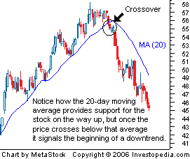

Complete Guide To Forex
How Forex Is Unique
How is the forex market different from other markets?
1. Fewer Rules: Unlike the trading of stocks, futures or options, currency trading does not take place on an exchange with rules, like the New York Stock Exchange. It is not controlled by any central governing body, and there are no clearing houses to make sure the party you are buying the currency from actually pays up. In fact, if you had exclusive information, and used it to make a lot of money, legal issues would not arise, like they would it in the stock market.
2. No Commissions: There are no exchange, brokerage or clearing fees in the FX market. Instead, brokers make money on the difference in price you pay to buy, or the amount you receive when you sell, currencies.
3. Trade Whenever You Want: Forex markets are open 24 hours a day, so if you are a night owl or early riser you can set your own trading schedule.
4. No Limit to How Much Currency You can Buy: If you had $1 billion U.S. dollars you wanted to sell, you could do it! There's no limit to how much money you can buy or sell.
5. Easy to Get In and Out: You can buy and sell currencies with the click of a button, instantaneously. The market is so large that you will never be stuck if you wanted to get rid of – or buy - your stockpile of currency.
Making And Losing Money
How People Make or Lose Money Doing It:
By converting your money into a different currency, you are hoping that the new currency increases in value. When you convert back to your initial currency, ideally you will have more money than you started with.
Let's take a look at a simple example of how someone can make money from a forex transaction. Suppose you have $900 U.S. dollars and you exchange that for $1000 Canadian dollars. One week later, the CAD/USD exchange rate goes up from 0.90 to 1.0, so the Canadian dolar which you own has increased in value compared to the U.S. dollar. You could then exchange the $1000 CAD you have back into U.S. dollars and you would receive $1000 USD.
So you started with $900 USD, you now have $1000 USD, a profit of $100 USD.
| Your Decision | CAD | USD |
| You buy 1,000 CAD at the
CAD/USD rate of 0.90 |
+1000 | -900 |
| A week later, the CAD/USD rises to 1.00 and you exchange your 1,000 CAD back into U.S. dollars | -1000 | +1000 |
| Profit | +100 |
Buying And Selling
What are you really selling or buying in the currency market?
You are buying and selling money. In the forex market, think of money as a commodity, you are buying a currency hoping that its value will increase, and if you are selling you are betting that it will decrease. Like any other commodity, the price of currencies is displayed in quotes in the spot market, and traded in currency pairs; like the US dollar and the Canadian dollar (USD/CAD) or the US dollar and Japanese yen (USD/JPY).
Also, although you are buying another country's currency, you are not buying anything ‘physical', and thus no physical exchange of money ever takes place. This can be confusing, but think of it like buying shares of a publicly traded company where everything is done electronically inside your trading account. But unlike the stock market, the forex market doesn't have a central exchange like the New York Stock Exchange for instance. Instead the forex market is an interbank market, which means it's all connected together in a network of banks and institutions.
You can also think of buying currencies as buying shares in a country, you are betting on the success or failure of a particular country's economy. You'll learn more about reading a currency quote and the economics that move currency rates in the upcoming Introduction to forex section.
What Moves A Currency?
Fundamental Analysis
If you think it's difficult to value one company, try valuing a whole country! Fundamental analysis in the forex market is often very complex, and it's usually used only to predict long-term trends; however, some traders do trade short term strictly on news releases. There are many different fundamental indicators of currency values released at many different times.
Here are a few:
-Non-farm payrolls
-Purchasing Managers Index (PMI)
-Consumer Price Index (CPI)
-Retail sales
-Durable Goods
These reports are not the only fundamental factors to watch. There are also several meetings that provide quotes and commentary, which can affect markets just as much as any report. These meetings are often called to discuss interest rates, inflation and other issues that affect currency valuations. Even changes in wording when addressing certain issues - the Federal Reserve chairman's comments on interest rates, for example - can cause market volatility.
Simply reading the reports and examining the commentary can help forex fundamental analysts gain a better understanding of long-term market trends and allow short-term traders to profit from extraordinary happenings. If you choose to follow a fundamental strategy, be sure to keep a calendar that highlights important dates so you know when these reports are released. Your broker may also provide real-time access to such information.
Now that you've gotten your feet wet, let's dig in a little deeper into the basics of forex.
Currency Trading
The foreign exchange market (forex or FX for short) is one of the largest, most exciting, fastest-paced markets in the world. It seems to be easier to understand, compared to the stock market. Chances are you've already tried it when you've gone on a trip to another country and exchanged some money.
Historically, only large financial institutions, corporations, central banks, hedge funds and extremely wealthy individuals had the resources to participate in the forex market. However, now, with the emergence and popularization of the internet and mainstream computing technology, it is possible for average investors to buy and sell currencies with the click of a mouse from the comfort of their own home.
If you follow the value of a currency, such as the American dollar (USD), you will know that daily currency movements are usually very small. Most currency pairs, on average, move no more than 1 cent per day, which is less than a 1% change. Therefore, to make a respectable return, many currency traders rely on the use of leverage (using margin) to increase their potential returns for small moves in the exchange rate. In the retail forex market, leverage can be as high as 200:1 if you're trading with less than $50,000 or as low as 50:1. For example, to trade $200,000 worth of currency, if the broker is requiring 1% margin, you would only need $2,000 deposited to your account – giving you leverage of 100:1. This is not as risky as it sounds, because currencies don't fluctuate as much as stocks. (Learn to cut out losses quickly, leaving profits room to grow, see Leverage's "Double-Edged Sword" Need Not Cut Deep.)
The availability of leverage, and massive size of the market and the ease of making fast transactions has increased the popularity of the forex market. Positions can be opened and closed instantaneously at the exact price shown to you, and typically with no commission or transaction fees. Also, unlike the stock market, in which one large buyer or seller can adversely move the stock price, currency prices are much harder to manipulate because the sheer size of the market prevents any one player from significantly moving the currency price. Currency prices are largely based on supply and demand.Another reason why forex is so popular with traders is because the market is open 24 hrs, meaning you can choose when you want to trade – regardless of whether you're a early bird or night owl. (For more, see Where is the central location of the forex market?)
The very popular forex market also provides plenty of opportunity for investors. However, in order to trade profitably in this market, currency traders have to take the time to learn about forex trading and dedicate enough time to practice what they've learned.
This forex tutorial will provide new investors and traders with the knowledge needed to trade in the forex market. This tutorial will cover the basics of the forex market and will slowly progress to more advanced topics, such as forex strategies. For now, let's take a look at "pairs" and "quotes" in the next section, and learn how to read them correctly.
Currencies
The majority of trading in forex is concentrated in the world's major financial centers, such as London,
Each forex transaction involves two different trades: the purchase of one currency and the sale of another. That is why forex quotes are quoted as a combination of two currencies, which is known as a currency pair. While there are many possible currency pairs, the most heavily followed and traded currencies are listed in the table below.
You may notice that the total market share adds to 200%, which is a result of currency pairs.
| Currency | Market Share |
| USD | 83.7% |
| EUR | 60% |
| GBP | 15.3% |
| JPY | 13.4% |
| CHF | 9.5% |
| SEK | 2.2% |
| AUD | 2.1% |
| CAD | 1.6% |
| Figure 1: The most heavily traded currencies and their market share | |
| Source: BIS Triennial Survey, 2004 |
Not surprisingly, the U.S. dollar (USD) is the most followed and traded currency in the world, with nearly 84% of the market share in 2004. Therefore, later on in this tutorial we examine the relationships between the U.S. dollar and many of its major currency counterparts, such as the euro and the yen. (Learn the essence of currency exchanging in How do I convert dollars to pounds, euros to yen, or francs to dollars, etc.?)
In addition, although there are numerous currency pairs available, it can become extremely confusing to try to follow and trade several currencies at one time. It is usually recommended to get to know one major currency pair and practice trading that currency pair alone. But first, before you can begin to analyze major currency pairs, you need to learn the basics of the market, such as learning to read a Forex quote, which is discussed in the next section.
Most Traded Pairs
Although some retail dealers trade exotic (less popular) currencies such as the Thai baht or the Czech koruna, the majority trade the seven most traded currency pairs in the world. The four most popular, also known as "the majors" are:
EUR/USD (euro/dollar) – "euro"
USD/JPY (U.S. dollar/Japanese yen) – "gopher"
GBP/USD (British pound/dollar) - "cable"
USD/CHF (U.S. dollar/Swiss franc) – "swissie"
The three less popular commodity pairs are:
AUD/USD (Australian dollar/U.S. dollar) – "aussie"
USD/CAD (U.S. dollar/Canadian dollar) – "loonie"
NZD/USD (New Zealand dollar/U.S. dollar) – "kiwi"
These currency pairs, along with their various combinations (such as EUR/JPY, GBP/JPY and EUR/GBP) account for more than 95% of all speculative trading in FX. Given the small number of possible trades - only 18 pairs are actively traded - the FX market is much less broad than the stock market. (For more, see Top 8 Most Tradable Currencies and Popular Forex Currencies.)
Currency Quotes
Currencies are quoted in pairs, for example the USD/EUR is the U.S. dollar/euro. Using this quotation, the value of a currency is determined by its comparison to another currency. The first currency of a currency pair is called the base currency, and the second currency is called the quote currency. The currency pair shows how much of the quote currency is needed to purchase one unit of the base currency.
For example, if the USD/EUR currency pair is quoted as being USD/EUR = 0.8000 and you purchase the pair; this means that for every 0.80 euros you sell, you purchase (receive) US$1. If you sell the currency pair, you will receive 0.80 euros for every US$1 you sell. The inverse of the currency quote is EUR/USD, and the corresponding price would be EUR/USD = 1.25, meaning that US$1.25 would buy 1 euro. (To learn more, read Why is currency always quoted in pairs?)
Reading A Quote
Most new investors in the forex market are usually confused with the way currency prices are quoted. In this section, we'll take a look at currency quotations and see how they work in currency pair trades.
Reading a Quote
When you look at a currency quote, you'll notice that all currencies are quoted in a pair – for example, USD/CAD or USD/JPY. The reason that currencies are quoted as a pair is because when you buy a currency you are selling a different one as well. A sample forex quote for the U.S. dollar (USD) and Japanese yen (JPY) would look like this:
| USD/JPY = 119.50 |
This is the standard format for a currency pair. In this example, the currency to the left of the slash (USD) is referred to as the base currency, and the currency on the right (JPY) is called the quote or counter currency. This is important to remember. The base currency (in this case, the U.S. dollar) is always equal to one unit (in this case, US$1), and the quoted currency (in this case, the Japanese yen) is what that one base unit (USD) is equivalent to in the other currency (JPY).
This sample quote shows that if you wanted to buy US$1, you would have to pay 119.50 yen. Or if you wanted to sell US$1, you would receive 119.50 yen. If instead of USD/JPY, this quote read USD/CAD = 1.20, you would read it the exact same way. If you want to buy US$1, it will cost you C$1.20, and if you wanted to sell US$1, you would get C$1.20. These exchange rates simply tell you how much you will pay/receive if you buy/sell the "base" currency.
When you are buying the base currency (because maybe you think the base currency's value will go up) and selling the quote currency, you are entering into a long position. If you instead sell the base currency and buy the quote currency, you are going into a short position. So again, looking at the USD/JPY example, if you buy the USD, you're going long; if you sell the USD, you are going short.
Bid and Ask
Like buying a stock in the stock market, when trading currency pairs, the forex quote will have a bid price and an ask price. The bid and ask prices are always quoted in relation to the base currency.
When selling the base currency, the bid price is the price the dealer is willing to pay to buy the base currency from you. Simply put, it's the price you'll receive if you sell.
When buying the base currency, the ask price is the price at which the dealer is willing to sell you the base currency in exchange for the quote currency. Simply, when you want to buy a base currency, the ask price is the price you're going to pay.
A typical currency quote can be seen below. The number before the slash (1.2000) is the bid price, and the two digits after the slash (05) represent the ask price (1.2005) - only the last two digits of the full price are usually quoted. The bid price will always be lower than ask price. This is how the dealers make their money; they buy low and sell for a little bit higher. (For more, read Common Questions About Currency Trading.)
| USD/CAD = 1.2000/05
Bid = 1.2000 Ask= 1.2005 |
If you wanted to buy the USD/CAD currency pair, you would be buying the base currency (U.S. dollars) in exchange for the quote currency (Canadian dollars). You need to look at the ask price to see how much (in Canadian dollars) the market is currently charging for U.S. dollars. According to this quote, you will have to pay C$1.2005 to buy US$1.
To sell this USD/CAD currency pair, or sell the USD in other words, you need to look at the bid price to see how much you are going to get. Looking at the bid price in this quote, it tells us you will receive C$1.2000 if you sell US$1.
More On Quotes
Spreads and Pips
The difference between the bid price and the ask price in a forex quote is normally called the spread. In the previous example: USD/CAD = 1.2000/05, the spread is 0.0005, or 5 pips. Pips, or points, is the common name used to refer to incremental changes in a forex quote – a change from 1.2000 to 1.2001 would equal one pip. Although these currency movements may seem small, due to leverage used in the forex market, small changes can result in large profits or losses. (Learn how brokerages make some of their profits in How is spread calculated when trading in the forex market?)
With the major currency pairs such as the EUR/USD, USD/CAD, GBP/USD, one pip would be equal to 0.0001. However, if you take a look at a USD/JPY quote you'll notice the pair only goes to two decimal places, so one pip would be 0.01. So, in general, a pip represents the last decimal place in the quote.
| Currency Quote Overview | ||
| USD/CAD = 1.2000/05 | ||
| Base Currency | Currency to the left (USD) | |
| Quote/Counter Currency | Currency to the right (CAD) | |
| Bid Price | 1.2000 | Price for which the market maker will buy the base currency. Bid is always smaller than ask. |
| Ask Price | 1.2005 | Price for which the market maker will sell the base currency. |
| Pip | One point move, in USD/CAD it is .0001 and 1 point change would be from 1.2000 to 1.2001 | The pip/point is the smallest movement a price can make. |
| Spread | Spread in this case is 5 pips/points, or the difference between bid and ask price (1.2005-1.2000). |
Lots
Similar to how most stocks trade in lots to facilitate trading, currencies are also traded in lots – $100,000 is typically the standard lot. There are also smaller lots with a size of $10,000 called mini-lots. These may seem like large amounts but because currencies only move in small increments, only a few pips at a time, a larger amount of currency is needed to generate any sizable profits or losses. (For more on mini lots, see Forex Minis Shrink Risk Exposure.)
Direct Currency Quote vs. Indirect Currency Quote
You can quote a currency pair in two ways, either directly or indirectly. A direct currency quote is simply a foreign exchange quote where the foreign currency is the base currency; an indirect quote is a currency pair in which the domestic currency is the base currency. For example, if you're in Canada and the Canadian dollar is the domestic currency, a direct quotation would take the form of a variable amount of the domestic currency for a fixed amount of the foreign currency. A Canadian bank giving a quote of "C$1.20 per US$1" would be a direct quote. Conversely, an indirect quote fixes the domestic currency and varies the foreign currency. In the same example, if the Canadian bank gave a quote of "C$1=US$0.83" it would be an indirect quote.
Cross Currency
A currency quote given without the U.S. dollar as part of the currency pair is called a cross currency quote. Common cross currency pairs include the EUR/CHF, EUR/GBP and EUR/JPY. Although having cross currencies increases the amount of choice for the investor in the forex market, cross currencies are not as popular as ones that have the U.S. dollar as a component of the currency pair. (For more on cross currency, see Make The Currency Cross Your Boss)
Now that you know more about reading and interpreting a forex quote, in the next section we'll look briefly at the economics and fundamentals behind forex trades and what economic indicators a new trader should become familiar with and be able to interpret.
Programs And Systems
Education and Mentoring Programs - Are They Worth It?
The benefit of online or live courses over books, newspapers and magazines is that you can get answers to the questions that perplex you. Hearing or seeing other people's questions can be extremely valuable, since no one person can think of every possible question. In a classroom setting, either online or live, you can also learn from the experiences and frustrations of others. As for a mentor, he or she can draw on personal experience and hopefully teach you to avoid the mistakes he or she has made in the past, saving you both time and money.
What About Trading Systems and Signals?
Many traders wonder whether it is worthwhile to buy into a Forex signal system package. These packages allow traders to make trades using a variety of inputs. Systems and signals fall into three general categories depending on what they target: trend, range or fundamental. Fundamental systems are very rare in the FX market; they are mostly used by large hedge funds or banks because fundamental strategies tend to be long term in nature and do not give many trading signals. The systems that are available to individual traders are typically trend systems or range systems - it is rare to find a system that is able to exploit both markets, because if you do, then you have pretty much found the holy grail of trading (which doesn't exist).
Even the largest hedge funds and Forex traders in the world are still looking for the software that can tell them whether they are in a trend or a range-bound market. Most large hedge funds tend follow trends. Generally, range-bound systems will only perform well in range-bound markets, while trend systems will make money in trending markets and lose money in range-bound markets. So, when you buy into a system or a signal provider, you should try to find out whether the signals are mostly range-bound signals or trend signals. Although this advice seems straight forward, seasoned traders can attest that it is easier said than done (To learn more, see Identifying Trending & Range-Bound Currencies.)
Trading Setups - Finding What Works Best for You
All traders are different, but a good trading style is probably a combination of both technical and fundamental analysis. Fundamentals can easily throw off technicals, while technicals can explain movements that fundamentals cannot. Smart traders are the ones who are aware of both the fundamentals and technicals behind every trade they make; combining both will keep you out of as many bad trades as possible, and it works for both day traders and swing traders. Most free charting packages have everything that a new trader needs, and many trading platforms offer real-time news feeds to keep you up to date on economic news as well. (For further reading, see Devising A Medium-Term Forex Trading Strategy.)
Learning to trade in the FX market can seem like a daunting task when you're just starting out, but thanks to the many practical and educational resources available to new traders, it is not impossible. Learning as much as possible before you put actual money into the markets should be number one in your agenda. Print and online publications, trading magazines, personal mentors, online demo accounts along with our Investopedia Forex indepth walkthrough can all act as invaluable guides on your journey into currency trading. Now that you've got your feet wet in the Forex market, let's take a look at the role leverage plays in the fx market.
Research And Testing
When trading anything, you never want to trade impulsively. You need to be able to justify your trades, and the best way to do that is by doing your research. There are many books, newspapers and other publications with information about trading the FX market (but none better than the Invetopedia Forex walkthrough you're using right now!). When choosing a source to consult, make sure it covers:
-The basics of the FX market
-Technical analysis
-Key fundamental news and events
Because the FX market is driven primarily by technical indicators (which we will discuss in detail later in the FX walkthrough), the most important topic a new forex trader should study is technical analysis. The better you get at technical analysis, the better you can trade the FX market. (For further reading, see our Introduction To Technical Analysis.)
When it comes to newspapers, seasoned foreign exchange traders typically refer to publications which contain a heavy helping of international news. Trading FX involves looking past simple economics, since politics and geopolitical risks can also affect a currency's trading behavior, so it's important to keep up with major non-financial news from across the globe. To build a solid foundation in FX trading it is important to keep up to date with key fundamental and technical developments in the forex market.
Test Drive Once you've found a broker, the next step is to take a test drive. The best way to test a brokerage's software is by opening a demo account. The availability of demo or virtual trading accounts is something unique to the forex market and one that you'll want to exploit to your advantage. The goal is to learn how to use the trading platform and, while you're doing that, to find the trading platform that best suits you. Most demo accounts have exactly the same functionalities as live accounts, with real-time market prices. The only difference, of course, is that you are not trading with real money.Demo trading allows you not only to make sure that you fully understand how to use the trading platform and become comfortable with its ins and outs, but also to practice some trading strategies and to make money in a paper account (virtual account) before you move on to a live account using real money. In other words, it gives you a chance to get a feel for the FX market. (To learn more, see Demo Before You Dive In.)
Leverage
So we've explained the basic steps you need to take to get started in the forex market, now let's take a closer look at leverage and its role in the market.
The leverage that is achievable in the forex market is one of the highest that individual investors can obtain. Leverage is a loan that is provided to an investor by the broker that is handling his or her forex account. Usually, the amount of leverage provided is either 50:1, 100:1 or 200:1, meaning your broker will allow you to trade up to 200 times the amount of actual cash you wish to trade. Leverage amounts vary depending on your broker and the size of the position you are trading. Standard trading is done on 100,000 units (ie. dollars) of currency, so for a trade of this size, the leverage provided is usually 50:1 or 100:1. Leverage of 200:1 is usually used for positions of $50,000 or less.
To trade $100,000 of currency with a margin of 1%, an investor will only have to deposit $1,000 into his or her margin account. The leverage provided on a trade like this is 100:1. Leverage of this size is significantly larger than the 2:1 leverage commonly provided in the stock market and the 15:1 leverage provided by the futures market. Although 100:1 leverage may seem extremely risky, the risk is significantly less when you consider that currency prices usually change by less than 1% over the course of a day. If currencies fluctuated as much as stocks, brokers would not be willing to provide such large leverage amounts.
Although the ability to earn significant profits by using leverage is substantial, leverage can also work against you. For example, if the currency behind one of your trades moves in the opposite direction of what you believed would happen, leverage will greatly amplify the losses. To avoid such losses, experienced forex traders usually implement a strict trading style that includes the use of stop and limit orders (both of which we will discuss in depth later in our walkthrough). Now that we've learned about leverage and the role it plays in the forex market, let's take look at some of the other risks associated with forex. (To learn more, see Forex Leverage: A Double-Edged Sword.)
The Risks
So far we've looked at the basics of the forex market and how to get started and have examined the role leverage plays in FX. Now we will examine some of the benefits and risks associated with forex trading.
The Good and the Bad
A number of factors such as the size, volatility and global structure of the foreign exchange market have all contributed to its rapid success. Given the high liquidity of the forex market, investors are able to place extremely large trades without directly affecting any given exchange rate. These large positions are made possible for forex traders because of the low margin requirements used by the majority of brokers. As we previously discussed, it is possible for a trader to have a position of US$100,000 by putting down as little as US$1,000 up front and borrowing the remainder from his or her forex broker. This amount of leverage acts as a double-edged sword because investors can realize large gains when exchange rates make a small favorable change, but they can also incur huge losses when the rates move against them. Despite the foreign exchange risks, the amount of leverage available in the forex market is what makes it attractive for many speculators. (For more on this, see Forex Leverage: A Double-Edged Sword.)
The currency market is also the only market that is open 24 hours a day with a high degree of liquidity throughout the day. For traders who may have a day job or just a busy schedule, it's a great market to start trading in. As you can see from the chart below, the major trading centers are spread throughout many different time zones, eliminating the need to wait for an opening or closing bell. As the U.S. trading closes, other markets in the east are opening, making it possible to trade at any time during the day.
| Time Zone | Time (ET) |
| Tokyo Open | 7:00 pm |
| Tokyo Close | 4:00 am |
| London Open | 3:00 am |
| London Close | 12:00 pm |
| |
8:00 am |
| |
5:00 pm |
While the forex market may offer more excitement to investors, the risks are also higher in comparison to trading stocks. The ultra-high leverage of the forex market means that huge gains can quickly turn to equally huge losses and can wipe out the majority of your account in a matter of minutes. This is important for all new traders to understand, because in the forex market - due to the large amount of money involved and the number of players - traders react quickly to information released into the market, leading to very quick moves in the price of the currency pair.
Although currencies don't tend to move as sharply as stocks on a percentage basis (unlike a company's stock that can lose a large portion of its value in a matter of minutes after a bad announcement), it is the leverage in the spot market that creates the volatility. For example, if you are using 100:1 leverage on $1,000 invested, you basically control $100,000 in capital. If you put $100,000 into a currency and that currency's price moves 1% against you, the value of the capital will have decreased to $99,000 - a loss of $1,000, or all of your original investment (that's a 100% loss!). In the stock market, most traders do not use leverage, therefore, a 1% loss in the stock's value on a $1,000 investment would only mean a loss of $10. That being said, it is important to take into account the risks involved in the forex market before diving in head first.
Forex Vs. Stocks
Differences Between Forex and Equities
A major difference between the forex and equities markets is the number of trading alternatives available: the forex market has very few compared to the thousands found in the stock market. The majority of forex traders focus their efforts on seven different currency pairs. There are four "major" currency pairs, which include EUR/USD, USD/JPY, GBP/USD, USD/CHF, and the three commodity pairs, USD/CAD, AUD/USD, NZD/USD. Don't worry, we will discuss these pairs in detail in the next portion of our forex walkthrough. All other pairs are just different combinations of the same currencies, better known as cross currencies. This makes currency trading easier to follow because rather than having to pick between 10,000 stocks to find the best value, the only thing FX traders need to do is "keep up" on the economic and political news of these eight countries.
Quite often, the stock markets can hit a lull, resulting in shrinking volumes and activity. As a result, it may be hard to open and close positions when you'd like to. Furthermore, in a declining market it is only with extreme ingenuity and sometimes luck that an equities investor can make a profit. It is difficult to short-sell in the U.S. stock market because of strict rules and regulations. On the other hand, forex offers the opportunity to profit in both rising and declining markets because with every trade, you are buying and selling at the same time, and short-selling is, therefore, a part of every trade. In addition, since the forex market is so liquid, traders are not required to wait for an uptick before they are allowed to enter into a short position, as is the rule in the stock market.
Due to the high liquidity of the forex market, margins are low and leverage is high. It just is not possible to find such low margin rates in the stock market; most margin traders in the stock market need at least half of the value of their investment available in their margin accounts, whereas forex traders need as little as 1%. Furthermore, commissions in the stock market tend to be much, much higher than in the forex market. Traditional stock brokers ask for commission fees on top of their spreads, plus the fees that have to be paid to the exchange. Spot forex brokers take only the spread as their fee for each trade. (For a more, see Getting Started in Forex and A Primer On The Forex Market.)By now you should have a basic understanding of what the forex market is, how it works and the benefits and dangers all new forex traders should be aware of. Next we'll take a closer look at the currency pairs that are most widely used by traders in the forex market.
History Of The Forex
We've learned a lot thus far and it's almost time to start trading, but given the global nature of the forex exchange market, it's important to first examine and learn some of the important historical events relating to currencies and currency exchange. In this section we'll take a look at the international monetary system and how it has evolved to its current state. Then we'll take a look at the major players that occupy the forex market - something that is important for all potential forex traders to understand.
The History of the Forex
Gold Standard System
The creation of the gold standard monetary system in 1875 is one of the most important events in the history of the forex market. Before the gold standard was created, countries would commonly use gold and silver as method of international payment. The main issue with using gold and silver for payment is that the value of these metals is greatly affected by global supply and demand. For example, the discovery of a new gold mine would drive gold prices down. (For background reading, see The Gold Standard Revisited.)
The basic idea behind the gold standard was that governments guaranteed the conversion of currency into a specific amount of gold, and vice versa. In other words, a currency was backed by gold. Obviously, governments needed a fairly substantial gold reserve in order to meet the demand for currency exchanges. During the late nineteenth century, all of the major economic countries had pegged an amount of currency to an ounce of gold. Over time, the difference in price of an ounce of gold between two currencies became the exchange rate for those two currencies. This represented the first official means of currency exchange in history.
The gold standard eventually broke down during the beginning of World War I. Due to the political tension with Germany, the major European powers felt a need to complete large military projects, so they began printing more money to help pay for these projects. The financial burden of these projects was so substantial that there was not enough gold at the time to exchange for all the extra currency that the governments were printing off.
Although the gold standard would make a small comeback during the years between the wars, most countries had dropped it again by the onset of World War II. However, gold never stopped being the ultimate form of monetary value. (For more on this, read What Is Wrong With Gold? and Using Technical Analysis In The Gold Markets.)
Bretton Woods System
Before the end of World War II, the Allied nations felt the need to set up a monetary system in order to fill the void that was left when the gold standard system was abandoned. In July 1944, more than 700 representatives from the Allies met in Bretton Woods,
To simplify, Bretton Woods led to the formation of the following:
- A method of fixed exchange rates;
- The U.S. dollar replacing the gold standard to become a primary reserve currency; and
- The creation of three international agencies to oversee economic activity: the International Monetary Fund (IMF), International Bank for Reconstruction and Development, and the General Agreement on Tariffs and Trade (GATT).
The main feature of Bretton Woods was that the U.S. dollar replaced gold as the main standard of convertibility for the world's currencies. Furthermore, the U.S. dollar became the only currency in the world that would be backed by gold. (This turned out to be the primary reason why Bretton Woods eventually failed.)
Over the next 25 or so years, the system ran into a number of problems. By the early 1970s, U.S. gold reserves were so low that the U.S. Treasury did not have enough gold to cover all the U.S. dollars that foreign central banks had in reserve.
Finally, on August 15, 1971, U.S. President Richard Nixon closed the gold window, essentially refusing to exchange U.S. dollars for gold. This event marked the end of Bretton Woods.
Even though Bretton Woods didn't last, it left an important legacy that still has a significant effect today. This legacy exists in the form of the three international agencies created in the 1940s: the International Monetary Fund, the International Bank for Reconstruction and Development (now part of the World Bank) and the General Agreement on Tariffs and Trade (GATT), which led to the World Trade Organization. (To learn more about Bretton Wood, read What Is The International Monetary Fund? and Floating And Fixed Exchange Rates.)
History Of Exchange Rates
Current Exchange Rates
After the Bretton Woods system broke down, the world finally adopted the use of floating foreign exchange rates during the Jamaica agreement of 1976. This meant that the use of the gold standard would be permanently abandoned. However, that doesn't mean that governments adopted a purely free-floating exchange rate system. Most governments today use one of the following three exchange rate systems:
- Dollarization
- Pegged rate
- Managed floating rate
Dollarization
Dollarization occurs when a country decides not to issue its own currency and uses a foreign currency as its national currency. Although dollarization usually allows a country to be seen as a more stable place for investment, the downside is that the country's central bank can no longer print money or control the country's monetary policy. One example of dollarization is El Salvador's use of the U.S. dollar. (To read more, see Dollarization Explained.)
Pegged Rates
Pegging is when one country directly fixes its exchange rate to a foreign currency so that the country will have somewhat more stability than a normal float. More specifically, pegging allows a country's currency to be exchanged at a fixed rate. The currency will only fluctuate when the pegged currencies change.
For example, China pegged its yuan to the U.S. dollar at a rate of 8.28 yuan to US$1, between 1997 and July 21, 2005. The downside to pegging is that a currency's value is at the mercy of the pegged currency's economic situation. For example, if the U.S. dollar appreciates substantially against all other currencies, the Chinese yuan will also appreciate, which may not be what the Chinese central bank wants, since China relies heavily on its low-cost exports.
Managed Floating Rates
This type of system is created when a currency's exchange rate is allowed to freely fluctuate subject to supply and demand. However, the government or central bank may intervene to stabilize extreme fluctuations in exchange rates. For example, if a country's currency is depreciating very quickly, the government may raise short-term interest rates. Raising rates should cause the currency to appreciate slightly; but understand that this is a very simplified example. Central banks can typically employ a number of tools to manage currency.
Market Participants
Unlike the stock market - where investors often only trade with institutional investors (such as mutual funds) or other individual investors - there are more parties that trade on the forex market for completely different reasons than those in the stock market. Therefore, it is very important to identify and understand the functions and motivations of these main players in the forex market.
Governments and Central Banks
Probably the most influential participants involved in the forex market are the central banks and federal governments. In most countries, the central bank is an extension of the government and conducts its policy in unison with the government. However, some governments feel that a more independent central bank is more effective in balancing the goals of managing inflation and keeping interest rates low, which usually increases economic growth. No matter the degree of independence that a central bank may have, government representatives usually have regular meetings with central bank representatives to discuss monetary policy. Thus, central banks and governments are usually on the same page when it comes to monetary policy.
Central banks are often involved in maintaining foreign reserve volumes in order to meet certain economic goals. For example, ever since pegging its currency (the yuan) to the U.S. dollar, China has been buying up millions of dollars worth of U.S.Treasury bills in order to keep the yuan at its target exchange rate. Central banks use the foreign exchange market to adjust their reserve volumes. They have extremely deep pockets, which allow them to have a significant impact on the currency markets.
Banks and Other Financial Institutions
Along with central banks and governments, some of the largest participants involved with forex transactions are banks. Most people who need foreign currency for small-scale transactions, like money for travelling, deal with neighborhood banks. However, individual transactions pale in comparison to the dollars that are traded between banks, better known as the interbank market. Banks make currency transactions with each other on electronic brokering systems that are based on credit. Only banks that have credit relationships with each other can engage in transactions. The larger banks tend to have more credit relationships, which allow those banks to receive better foreign exchange prices. The smaller the bank, the fewer credit relationships it has and the lower the priority it has on the pricing scale.
Banks, in general, act as dealers in the sense that they are willing to buy/sell a currency at the bid/ask price. One way that banks make money on the forex market is by exchanging currency at a higher price than they paid to obtain it. Since the forex market is a world-wide market, it is common to see different banks with slightly different exchange rates for the same currency.
HedgersSome of the biggest clients of these banks are international businesses. Whether a business is selling to an international client or buying from an international supplier, it will inevitably need to deal with the volatility of fluctuating currencies.
If there is one thing that management (and shareholders) hates, it's uncertainty. Having to deal with foreign-exchange risk is a big problem for many multinational corporations. For example, suppose that a German company orders some equipment from a Japanese manufacturer that needs to be paid in yen one year from now. Since the exchange rate can fluctuate in any direction over the course of a year, the German company has no way of knowing whether it will end up paying more or less euros at the time of delivery.
One choice that a business can make to reduce the uncertainty of foreign-exchange risk is to go into the spot market and make an immediate transaction for the foreign currency that they need.
Unfortunately, businesses may not have enough cash on hand to make such transactions in the spot market or may not want to hold large amounts of foreign currency for long periods of time. Therefore, businesses quite often employ hedging strategies in order to lock in a specific exchange rate for the future, or to simply remove all exchange-rate risk for a transaction.
For example, if a European company wants to import steel from the U.S., it would have to pay for this steel in U.S. dollars. If the price of the euro falls against the dollar before the payment is made, the European company will end up paying more than the original agreement had specified. As such, the European company could enter into a contract to lock in the current exchange rate to eliminate the risk of dealing in U.S. dollars. These contracts could be either forwards or futures contracts.
Speculators
Another class of participants in forex is speculators. Instead of hedging against changes in exchange rates or exchanging currency to fund international transactions, speculators attempt to make money by taking advantage of fluctuating exchange-rate levels.
George Soros is one of the most famous currency speculators. The billionaire hedge fund manager is most famous for speculating on the decline of the British pound, a move that earned $1.1 billion in less than a month. On the other hand, Nick Leeson, a trader with England's Barings Bank, took speculative positions on futures contracts in yen that resulted in losses amounting to more than $1.4 billion, which led to the collapse of the entire company. (For more on these investors, see George Soros: The Philosophy Of An Elite Investor and The Greatest Currency Trades Ever Made.)The largest and most controversial speculators on the forex market are hedge funds, which are essentially unregulated funds that use unconventional and often very risky investment strategies to make very large returns. Think of them as mutual funds on steroids. Given that they can take such large positions, they can have a major effect on a country's currency and economy. Some critics blamed hedge funds for the Asian currency crisis of the late 1990s, while others have pointed to the ineptness of Asian central bankers. Either way, speculators can have a big impact on the forex market.
Now that you have a basic understanding of the forex market, its participants and its history, we can move on to some of the more advanced concepts that will bring you closer to being able to trade within this massive market. The next section will look at the main economic theories that underlie the forex market.
Brokers
The forex (FX) market has many similarities to the stock market, but there are some key differences.
Choosing a Broker
There are many forex brokers to choose from, just as in any other market. Here are some things to look for:
Look for low spreads
The spread, calculated in pips, is the difference between the price at which a currency can be purchased and the price at which it can be sold at any given point in time. Forex brokers don't charge a commission, so this difference is how they make money. In comparing brokers, you will find that the difference in spreads in forex is as great as the difference in commissions in the stock arena. (To learn more, check out How To Pay Your Forex Broker.)
Make sure your broker is backed by a quality institution
Unlike stock brokers, forex brokers are usually tied to large banks or lending institutions because of the large amounts of capital required to provide the necessary leverage for their customers (more on leverage in a moment). Also, forex brokers should be registered with the Futures Commission Merchant (FCM) and regulated by the Commodity Futures Trading Commission (CFTC). You can find this and other financial information and statistics about a forex brokerage on its website or on the website of its parent company.
Find a broker who will give you what you need to succeed
Forex brokers offer many different trading platforms for their clients - just like brokers in other markets. These trading platforms often feature real-time charts, tools to analyze these charts, real-time news and data, and even support for trading systems themselves. Before committing to any broker, be sure to request free trials to test different trading platforms. Find a broker who will give you what you need to succeed!
Get the right account type
Many brokers offer two or more types of accounts. The smallest account is known as a mini account and requires you to trade with a minimum of, say, $250, offering a high amount of leverage (which you need in order to make money with so little down). The standard account lets you trade at a variety of different leverages, but it requires a minimum initial investment of around $2,000. Finally, premium accounts, which often require significant amounts of capital, let you use different amounts of leverage and often offer additional tools and services. Make sure the broker you choose has the right leverage, tools, and services relative to the amount of money you are prepared to invest. (For more, see Forex Basics: Setting Up An Account.)
Things to Avoid
Sniping or Hunting
Sniping and hunting - or prematurely buying or selling near preset points - are shady acts committed by brokers to increase profits. Obviously, no broker admits to committing these acts. Unfortunately, the only way to determine which brokers do this is to talk to fellow traders; there is no blacklist or organization that reports such activity. Talk to others in person or visit online discussion forums to find out who is an honest broker. (For another broker tactic that can cut into your profits, read Price Shading In The Forex Markets.)
Strict Margin Rules
When you are trading with borrowed money, your broker has a say in how much risk you take. As such, your broker can buy or sell at its discretion, which can be a bad thing for you. Let's say you have a margin account, and your position takes a dive before rebounding to all-time highs. Well, even if you have enough cash to cover, some brokers will liquidate your position on a margin call at that low. This action on their part can cost you dearly.
Talk to others in person or visit online discussion forums to find honest brokers. Signing up for a forex account is much the same as getting an equity account. The only major difference is that, for forex accounts, you are required to sign a margin agreement. This agreement states that you are trading with borrowed money, and, as such, the brokerage has the right to interfere with your trades to protect its interests. Once you sign up, simply fund your account, and you'll be ready to trade!
Forex Brokers
Whenever you devote money to trading, it is important to take it seriously. When getting into the forex (FX) market for the first time, it basically means starting from square one. But don't worry, you don't have to be left in the dark when it comes to learning to trade currencies; unlike with some of the other markets, there is a variety of free learning tools and resources available to light the way. For example, you can become FX-savvy with the help of a variety of virtual demo accounts, mentoring services, online courses, print and online resources, signal services and charts. With so much to choose from, the question you're most likely to ask is, "Where do I start?" Here we cover the preliminary steps you need to take to find your footing in the FX market.
Finding a Broker
Your first step is to pick a market maker with which to trade. Some are larger than the others, some have tighter spreads while some offer additional bells and whistles. Each market maker has its own advantages and disadvantages, but here are some of the key questions to ask when doing your due diligence:
|
In order to ensure that your money is safe and that you have a jurisdiction to appeal to in the event of a bankruptcy, you should seek out a large market maker that is regulated in at least one or two major countries (ie. USA, Britain, Canada). Furthermore, the larger the market maker, the more resources it can put toward making sure that its trading platforms and servers remain stable and do not crash when the market becomes very active. Third, you want a market maker with a larger employee base so when placing trades over the phone you don't have to worry about getting a busy signal. Bottom line, you want to find someone legitimate to trade with and avoid a bucket shop. (For related reading, see Understanding Dishonest Broker Tactics.)
Checking Their Stats
In the U.S., all registered futures commission merchants (FCMs) are required to meet strict financial guidelines, including capital adequacy requirements, and are required to submit monthly financial reports to regulators. You can visit the website of the Commodity Futures Trading Commission (an independent agency of the U.S. government) to access the latest financial statements of all registered FCMs in the U.S.
Another advantage of dealing with a registered FCM is greater transparency of their business practices. The National Futures Association keeps records of all formal proceedings against FCMs, and traders can find out if the firm has had any serious problems with clients or regulators by checking the NFA's Background Affiliation Status Information Center (BASIC) online.
Economics
Similar to the stock market, traders in forex markets rely on two forms of analysis: technical analysis and fundamental analysis. Technical analysis is used similarly in stocks as in forex, by analyzing charts and indicators. Fundamental analysis is a bit different – while companies have financial statements to analyze, countries have a swath of economic reports and indicators that need to be analyzed.
In order to analyze how much you think a country's currency is worth, you need to evaluate the economic situation of the country in order to more effectively trade currencies. In this section, we'll take a look at some of the major economic reports that help traders study the economic situation of a country.
Economic Indicators
Economic indicators are reports that detail a country's economic performance in a specific area. These reports are usually published periodically by governmental agencies or private organizations. Although there are numerous policies and factors that can affect a country's performance, the factors that are directly measurable are included in these economic reports. (For a comprehensive overview of economic indicators, check out our Economic Indicators Tutorial.)
These reports are published periodically, so changes in the economic indicators can be compared to similar periods. Economic reports typically have the same effect on currencies that earnings reports or quarterly reports have on companies. In forex, like in most markets, if the report deviates from what was expected by economists or analysts to happen, then it can cause large movements in the price of the currency.
Below are some of the major economic reports and indicators used for fundamental analysis in the forex market. You've probably heard of some of these indicators, such as the GDP, because many of these also have a substantial effect on equity markets.
The Gross Domestic Product (GDP)
The GDP is considered by many to be the broadest measure of a country's economic performance. It represents the total market value of all finished goods and services produced in a country in a given year. Most traders don't actually focus on the final GDP report, but rather on the two reports issued a few months before the final GDP: the advance GDP report and the preliminary report. This is because the final GDP figure is frequently considered a lagging indicator, meaning it can confirm a trend but it can't predict a trend, which is not very useful for traders looking to indentify a trend. In comparison to the stock market, the GDP report is somewhat similar to the income statement a public company reports at year end. Both give investors and traders an indication of the growth that occurred during the period. (See the Gross Domestic Product (GDP) section in our Economic Indicators Tutorial for more.)
Retail Sales
The retail sales is a very closely watched report that measures the total receipts, or dollar value, of all merchandise sold in retail stores in a given country. The report estimates the total merchandise sold by taking sample data from retailers across the country. Because consumers represent more than two-thirds of the economy, this report is very useful to traders to gauge the direction of the economy. Also, because the report's data is based on the previous month sales, it is a timely indicator, unlike the GDP report which is a lagging indicator. The content in the retail sales report can cause above normal volatility in the market, and information in the report can also be used to gauge inflationary pressures that affect Fed rates. (Refer to our Inflation Tutorial for a primer on inflation.)
Industrial Production
The industrial production report, released monthly by the Federal Reserve, reports on the changes in the production of factories, mines and utilities in the U.S. One of the closely watched measures included in this report is the capacity utilization ratio which estimates the level of production activity in the economy. It is preferable for a country to see increasing values of production and capacity utilization at high levels. Typically, capacity utilization in the range of 82-85% is considered "tight" and can increase the likelihood of price increases or supply shortages in the near term. Levels below 80% are usually interpreted as showing "slack" in the economy which might increase the likelihood of a recession. (Be sure to also check out our Federal Reserve Tutorial so you understand the role of one of the most important players in forex markets.)
Consumer Price Index (CPI)
The CPI is an economic indicator that measures the level of price changes in the economy, and is the benchmark for measuring inflation. Using a basket of goods that is representative of the goods and services in the economy, the CPI compares the price changes on this basket year after year. This report is one of the more important economic indicators available, and its release can increase volatility in equity, fixed income, and forex markets. The implications of inflation can be a critical catalyst for movements in the forex market. (Learn about some of the concerns about the CPI calculation in The Consumer Price Index Controversy.)
Conclusion
This is just a brief overview of some of the major reports you should be aware of as a new forex trader. There are numerous other reports and factors that can affect a currency's value, but here are some tips to keep in mind that will help you keep on top of your game.
Know when economic reports are due to be released. Keep a calendar of release dates on hand to make sure you don't fall behind. Quite often, the markets will also be volatile before the release of a major report based on expectations.
Economic Basics
Economic Data
Charting and chart patterns provide a way for you to identify trading opportunities based on trader psychology. Likewise, a shift in the fundamentals of a country's economic state will definitely have an impact on its currency's value. Therefore on a day-to-day or week-to-week basis, economic data has a very significant impact on a currency's value. More specifically, changes in interest rates, inflation, unemployment, consumer confidence, gross domestic product (GDP), political stability etc. can all lead to extremely large gains/losses depending on the nature of the announcement and the current state of the country. If you didn't understand any of the terms in that last sentence, don't worry it will be explained next.
Listed below are a number of economic indicators that are generally considered to have the greatest influence - regardless of which country the announcement comes from.
Employment Data
On a regular basis, the majority of countries release data about the quantity of people employed. In the U.S., the Bureau of Labor Statistics releases employment data in a report called the non-farm payrolls, on the first Friday of each month. Generally, sharp increases in employment indicate prosperous economic growth. Likewise, potential contractions may be imminent if significant decreases occur. While these are general trends, it is important to consider the current position of the economy. For example, strong employment data could cause a currency to appreciate if the country has recently been through economic troubles, because the growth could be a sign of economic health and recovery. Conversely, in an overheated economy, high employment can also lead to inflation, which in this situation could move the currency downward.
Inflation
Inflation data indicates the change of price levels over a period of time. Due to the sheer amount of goods and services within an economy, a basket of goods and services is used to measure changes in prices. American inflation data is represented with the Consumer Price Index (CPI), which is released on a monthly basis by the Bureau of Labor Statistics. Greater than expected price increases are considered a sign of inflation, which will likely cause the country's underlying currency to depreciate.
Gross Domestic Product
A country's gross domestic product (GDP) is a total of all the finished goods and services that a country has generated during a given period. GDP is calculated from private consumption, government spending, business spending and total net exports. American GDP information is released by the Bureau of Economic Analysis once monthly during the latter end of the month. GDP is often considered the best overall indicator of an economy's health, because GDP increases signal positive economic growth.
The healthier a country's economy, the more attractive it is for foreign investors to invest into the country. The increased demand for the country's currency will ultimately increase the value of its currency.Retail Sales
Retail sales data indicates the amount of retailer sales that are generated during a period of time. This figure serves as a proxy of consumer spending levels. The measure uses the sales data from a group of different stores to get an idea of consumer spending. The strength of the economy can also be determined, as increased spending signals a strong economy. American retail sales data is reported by the Department of Commerce during the middle of each month.
Macroeconomic and Geopolitical Events
The biggest changes in the forex market often come from macroeconomic and geopolitical events such as wars, elections, monetary policy changes and financial crises. These events have the ability to change or reshape the country, including its fundamentals. For example, wars can put a huge economic strain on a country and greatly increase the volatility in a region, which could impact the value of its currency. It is important to keep up to date on these macroeconomic and geopolitical events.
There is so much data that is released in the forex market that it can be very difficult for the average individual to know which data to follow. Despite this, it is important to know what news releases will affect the currencies you trade. (For more insight, check out Trading On News Releases and Economic Indicators To Know.)
Conclusion
Now that you know a little more about some of the general economy news events that can affect a currency, we will next focus upon learning in depth about one specific aspect of a country's economic status. Interest rates are one of the most watch economic indicators by forex traders. Learn why by continuing to the next section of the walkthrough.
Interest Rates
One important influence that drives forex is the interest rate changes from eight of the world's most important central banks. Interest rate shifts represent a monetary, policy-based response as a result of economic indicators that assess the health of an economy. Most importantly, they possess the power to move the market immediately as one aspect of a country's fundamentals have now suddenly changed. Moreover, surprise rate changes may often make the biggest impact because these volatile moves can lead to quicker responses and higher profit levels. (Read Get To Know The Major Central Banks for background on these financial institutions.)
Interest Rate Basics
Interest rates impact currencies in the following manner: the greater the rate of return, the greater the interest accrued on currency invested and the higher the profit. (Read A Primer On The Forex Market for background information.)
Therefore, it is a valid strategy to borrow currencies with a lower interest rate in order to buy currencies that have a higher interest rate (This strategy is also known as the carry trade). However there is the risk that currency fluctuation may offset any interest-bearing rewards. If trading on the forex market were this easy, it would be highly lucrative for anyone armed with this knowledge. (Read more about this type of strategy in Currency Carry Trades Deliver.)
How Rates Are Calculated
Each central bank's board of directors controls the monetary policy of its country and the short-term prime interest rate that banks use to borrow from each other. When the economy is doing well, interest rates are hiked in order to curb inflation and when times are tough, cut rates to encourage lending and inject money into the economy.
Forex traders can gain clues into what the central bank (such as the U.S. Federal Reserve) will do by examining economic indicators mentioned in the previous section, such as:
- The Consumer Price Index (CPI): Inflation
- Retail Sales: Consumer spending
- Non-farm Payrolls: Employment levels
(Read more about the CPI and other signposts of economic health in our Economic Indicators tutorial.)
Predicting Central Bank Rates
Using the data from these indicators and a rough assessment of the economy, a trader can create an estimate for the Fed's rate change. Generally speaking, as the indicators improve and the economy is doing well, rates will either need to be raised or, if the improvement is small, maintained. Likewise, significant drops in these indicators can mean a rate cut in order to encourage borrowing.
Beyond traditional economic indicators, there are two other areas that should be examined.1. Major Announcements
Whenever the board of directors from a central bank is scheduled to make a public announcement, it will usually give some insight into how the bank views inflation.For example, on July 16, 2008, U.S. Federal Reserve Chairman Ben Bernanke gave his semi-annual monetary policy testimony before the House Committee. As per a regular testimony, he read a prepared statement about the U.S. dollar's value and answered questions from committee members. (Read more about the head of the Fed in Ben Bernanke: Background And Philosophy.)
In general, Bernanke reported the U.S. dollar was in good shape and that the government was determined to stabilize it despite the looming fears of an impending recession that were influencing all other markets.
The 10am session (the 14:00 UTC point on the chart on figure 1) was widely followed by traders. Since the outlook was positive for the U.S. dollar, it was implied that the Federal Reserve would be raising interest rates soon. This caused the dollar to appreciate over the Euro.
{kind=link}
The EUR/USD declined 44 points over the course of one hour (good for the U.S. dollar), which would result in a $440 per lot profit for traders who acted on the announcement.
2. Forecast Analysis
Analyzing professional predictions can also be used to predict interest rate decisions. Since interest rates moves tend to be well anticipated before hand, major brokerages, financial institutions and professional traders will have a consensus estimate as to what the rate is.
A good rule of thumb for traders is to take four or five of these forecasts (which tend be very close numerically) and average them in order to gain a more accurate prediction.
What to Do When a Surprise Rate Occurs
On occasion, central banks can throw a curve ball and knock all predictions out of the park with a surprise rate hike or cut.
When this happens, you should know which direction the market will move. If there is a rate hike, the currency will appreciate, which means that traders will be buying it. If there is a cut, traders will probably be selling it and buying currencies with higher interest rates. Once you have determined this:
· Act quickly! Forex tends to move at lightning speeds when a surprise hits, because all traders will be competing in hopes of entering into a position (buy or sell depending on hike or cut) ahead of the masses. Doing so can lead to a significant profit if done correctly.
· Be aware of a volatile trend reversal. A trader's perception/emotions often affects the market at the onset of the data's release, but then logic comes into play and the trend will most likely continue back on its original path.
The following example illustrates the above three steps in action.
In July 2008, New Zealand's interest rate was 8.25%. For much of the previous quarter, the rate had been steady. The higher rate of return made the New Zealand Dollar (NZD) was a popular currency for buying.
In July, despite all other previous indications, the central bank decided to cut the rate to 8%. While the 0.25% drop seems minor, this move was interpreted as a sign that the central bank had fears of inflation. Traders started to sell the NZD.
{kind=link}
In about 10 minutes, the NZD/USD dropped from .7497 to .7414 - a total of 83 pips. Lucky traders that managed to sell just one lot of the currency pair would have profited $833.
This depreciation in NZD was relatively short-lived. It didn't take too longer before it returned back to its original upward trend. It was likely that traders realized that despite the rate cut, an interest rate of 8% was still higher than most other currencies.
Conclusion
Paying close attention to the news and analyzing the actions of central banks should be an important priority to forex traders. Changes in monetary policy will ultimately cause currency exchange rates to change. Understanding and anticipating these moves will allow you to identify trading opportunities.
Now that we touched upon one of the important news events, we will now discuss how to properly read and analyze a news release.
The Employment Situation Report
As you've learned throughout this walkthrough, the forex market is effected by many different economic and non-economic factors. We've taken a look at each of the major currencies and the forces and governing bodies that drive their movement. One of the biggest drivers of a nation's currency is unemployment. Let's take an in depth look at the two most important economic releases in the United States when it comes to unemployment.
The Employee Situation Report
| Release Date: | The first Friday of the month |
| Release Time: | 8:30am Eastern Standard Time |
| Coverage: | Previous month |
| Released By: | Bureau of Labor and Statistics (BLS) |
| Latest Release: | http://stats.bls.gov/news.release/empsit.nr0.htm |
Background
The Employment Situation Report, commonly known as the Labor Report, is an extremely broad-based indicator which is released by the United StatesBureau of Labor Statistics (BLS). The report is made up two separate surveys. The first, the "establishment survey", is a sampling from over 400,000 businesses across the country. It is widely regarded as the most comprehensive labor report available in the nation, covering about 30% of all non-farm workers nationwide, and offers statistics including non-farm payrolls, hours worked and hourly earnings. This is huge in both size and breadth, with statistics covering over 500 industries and hundreds of cities.
The second survey, known as the "household survey", collects statistics from more than 60,000 households and produces an estimated figure which represents the total number of Americans out of work, and from that the national unemployment rate. The data is compiled by the U.S. Census Bureau and the Bureau of Labor Statistics. This allows for a census-like component, adding demographic shifts into the equation, giving the results a different perspective.
Both sets of survey results will show the change from the previous month, and also year-over-year, as trendlines are very important with this often volatile statistic.
What it Means for Investors
The Employment Situation Report is a multi-layered release, with many links from the main page which follow the headline discussion items. Since there is so much information in this report, it's important to identify the numbers that are the most important.
Non-Farm PayrollThe non-farm payrolls figure is very, very important on Wall Street; it's considered the benchmark labor statistic, and it's used to determine the health of the job market because of its huge sample size and historical track record in accurately predicting business cycles. Generally, economists have settled on the number of 150,000 new jobs as the level that defines economic growth. An increase of about 150,000 jobs or more indicates an expansion of the labor force, while anything below points to a weak job market.
These payroll figures from the establishment report are considered a coincident indicator.
Each of the above mentioned surveys comes up with its own figures for the total amount of employed Americans using very different methods. The establishment report is much larger, and is widely regarded as more accurate. However, this survey excludes private households, self-employed individuals and the agricultural sector. The household report runs on a smaller sample and is more subjective, but the inclusion of self-employed workers, for example, can make this figure more valuable in a time when many people are starting their own business, which is often the casein the beginning of a new business cycle.
The unemployment figures from the household report (which is probably the most watched segment of the release after non-farm payrolls) are considered a lagging indicator, since people tend to be out of work when problems in the economy have already manifested themselves in falling economic output (less workers & less GDP). (For more insight, read What are leading lagging and coincident indicators?)
A good forex trader will study the labor report to look for trends in disposable income, wage inflation and employment statistics, as all of these factors can have an affect on currency movement. Analysts will usually conclude that if payrolls are increasing and wages are rising, that personal consumption stats like retail sales will advance as well, as more money will be in the pockets of consumers, which generally means that the dollar will perform well against its peers.
The Federal Reserve
The Fed watches this report very closely. The Fed's former chairman Alan Greenspan used most of his allotted minutes during all those years of Senate briefings discussing the labor markets, quoting figures from the benchmark Labor Report. The unemployment rate alone accounts for close to 50% of the lagging index created by the Conference Board and used by the Federal Reserve Board.
The household survey accounts for demographic changes to some degree, whereas the establishment survey only counts the total number of payrolls. Therefore, the household survey acts as sort of a mini-census, which is why the same employment report can show an increase in payrolls, while the unemployment rate rises as well, which can seem like a contradiction to those not familiar with the report.
The number of hours worked data can also be a bell-weather of where the economy is in the business cycle; quite often companies will try to stretch the hours of their current workforce before they go into the job market and hire new workers. Such conservative behavior is known as "testing the waters" of the economy before committing to hiring for future growth.
While labor statistics can tell us a lot, they do not necessarily define the economy. Many industries can be well positioned to remain profitable even during tough labor markets - financial services, for instance, can easily lay off workers and keep labor tight until conditions improve, while more capital-intensive industries such as manufacturing (with its higher fixed cost structure) may suffer bigger hits in profitability. The key is to use all the information presented to make an educated opinion of where you feel certain currencies are headed as a direct result of these unemployment numbers.
Strengths Of The Labor Report:
- As one of the most widely watched reports, the Employment Situation Report gets a lot of press and can move the forex markets.
- Summary analysis provided by the BLS (top link on the site) on the top-level release of an already detail-rich report
- Relates to investors on a personal level; everyone understands having a job or looking for work.
- Service industries are covered here - it is hard to find good indicator coverage of service-based businesses.
Weaknesses Of The Labor Report:
- Summer and other seasonal employment tends to skew the results.
- Only measures whether people are working; it does not take into account whether these are jobs the people wish to have, or whether they are well-suited to workers' skills.
- Volatile; revisions can be quite large, and updates should always be viewed in the most recent report.
- Unemployment and payroll figures can seem to be out of alignment, as they are derived from two different surveys.
- Compensation costs portion is considered inferior to the Employment Cost Index.
Jobless Claims Report
As opposed to the Labor Report, the Jobless Claims Report is a weekly release that reports the number of first-time filings for state jobless claims across the nation. The data is seasonally adjusted, since certain times of the year are known for above-average hiring for temporary work, such as during harvesting and holidays.
| Release Date: | Weekly; Thursdays, prior to market open |
| Release Time: | 8:30am Eastern Standard Time |
| Coverage | Previous week (cutoff date is previous Saturday) |
| Released By: | U.S. Department of Labor |
| Latest Release: | http://www.dol.gov/opa/media/press/eta/main.htm |
Due to the short sample period (one week), week-to-week results can be very volatile, therefore the results are often presented as a four-week moving average, so that each week's release is the average of the four prior jobless claims reports, making it easier to compare the figures. The release outlines which states have had the largest changes in claims from the week previous; the fully revised version shows up about a week later, at which time full breakdowns by state and U.S. territories are available.
What it Means for Forex Traders
New jobless claims for the week reflect an up-to-the-minute account of who is leaving work unexpectedly, showing the "run rate" of the economy's health with very little lag time. The Jobless Claims Report gets a whole lot of press because of its simplicity and the belief that the healthier the job market, the healthier the economy, and the stronger the dollar
The fact that jobless claims are released weekly is of particular importance to forex traders. Having such a reliable and timely report of how the U.S job market is faring can give traders a heads up to the long-term direction of the dollar along with the luxury of intra-day trading with fresh economic data.At times the Jobless Claims Report can also get lost in the shuffle of a busy news day, and hardly be noticed by the general public. Good forex traders however will make it a point to add the report to their economic calendar and keep a close eye for what to expect in the U.S job market.
Strengths Of The Jobless Claims Report:
- Weekly reporting provides for timely, almost real-time snapshots.
- As a tightly-presented release, investors can easily pick up the raw release and quickly apply the information to market decisions.
- Initial claims are provided gross and net of seasonal adjustments, and give a breakdown for every state's individual results.
- Some states' figures are shown along with a comment from that state's reporting agency regarding specific industries in which noteworthy activity is happening, such as "fewer layoffs in the industrial machinery industry".
Weaknesses Of The Jobless Claims Report:
- Summer and other seasonal employment tends to skew the results.
- Highly volatile - revisions to advance report can be very big on a percentage basis
- Jobless claims in isolation tell little about the overall state of the economy.
- No industry breakdowns are provided, just the national figure.
These two unemployment reports are the most followed by forex traders across the globe. Quite often the U.S. economy is the engine that drives the global economy, and any changes, good or bad, in overall employment can have a big effect on the forex markets. Keeping up to date on both of these important economic reports are crucial to becoming a smart and informed forex trader. Next let's study how interest rates effect currencies. (To learn more, see our CFA Tutorial: Types of Unemployment.)
The Fed
As we have learned, there is a government body that acts as the guardian of every nation's economy - an economic sentinel who implements policies designed to keep the country operating smoothly. The truth is however, most investors do not understand how or why the government involves itself in the economy. So it is especially important for forex to understand how and why these government bodies get involved to effect interest rates and their domestic currencies.
As previously discussed, the Fed's mandate is "to promote sustainable growth, high levels of employment, stability of prices to help preserve the purchasing power of the dollar and moderate long-term interest rates." In other words, the Fed's job is to promote a sound banking system and a strong economy. The Fed also issues all coin and paper currency. The U.S. Treasury actually produces the cash, but the Fed Banks distributes it to financial institutions. It's also the Fed's responsibility to check bills for wear and tear and to take damaged currency out of circulation. To achieve its mission, the Fed serves as America's money manager.
Money Manager
The term monetary policy refers to the measures that the Federal Reserve undertakes to influence the amount of money and credit available in the U.S. economy. Changes to the amount of money and credit directly affect interest rates (the cost of credit) and the performance of the U.S. economy, which in turn affects the direction of America's dollar To state this concept simply, if the cost of credit is reduced, more people and firms will borrow money and the economy will heat up.
The Toolbox
The Fed has three major tools at its disposal to manipulate monetary policy:
Open-Market Operations
The Fed is constantly buying and selling U.S. government securities in the financial markets, which consequently influences the level of reserves in the banking system. The Fed's decisions also affect the volume and the price of credit (interest rates). The term open market means that the Fed can't independently control which securities dealers it will do business with on any given day. Rather, the choice emerges from an open market where the different primary securities dealers participate. Open market operations are the most frequently employed tool of monetary policy.
Setting The Discount Rate
The discount rate is the interest rate that banks pay on short-term loans from one of the Federal Reserve Banks. The discount rate tends to be lower than the federal funds rate, although they are very closely related. The discount rate is important because it is a visible announcement of an adjustment in the Fed's monetary policy and allows the rest of the market (forex traders included) some insight into the Fed's plans.
Setting Reserve Requirements
This is the amount of actual physical funds that depository institutions are required to hold in reserve against deposits in their customers' bank accounts. It determines how much money banks can create through loans and investments. Set by the Board of Governors, the reserve requirement is usually around 10%, but can vary. This means that although a bank might hold $20 billion in deposits for all of its customers, the bank lends most of this money out and, therefore, doesn't have that $20 billion on hand. Additionally, it would be extremely costly to hold $20 billion in coin and bills within the bank. Excess reserves are, therefore, held either as vault cash or in accounts with the district Federal Reserve Bank Therefore, while the reserve requirements make certain that depository institutions preserve a minimum amount of physical funds in their reserves.
The Federal Funds RateThe use of open-market operations is the most important tool that's used to manipulate monetary policy. The Fed's goal in trading securities is to affect the federal funds rate - the rate at which banks borrow reserves from each other. The Federal Open Market Committee (FOMC) sets a target for this rate, but not the actual rate itself (because it is determined by the open market). This is what news reports are referring to when they talk about the Fed lowering or raising interest rates. So be sure you are aware that a change in interest rates is actually just a change in the federal funds rate.
All banks are subject to reserve requirements, but they commonly fall below requirements in carrying out of day-to-day business. To meet the requirements they have to borrow from each other's reserves. This creates a market in reserve funds, with banks borrowing and lending to one another at the federal funds rate. Consequently, the federal funds rate is of such importance because by increasing or decreasing it, over time, the Fed can impact practically every other interest rate charged by U.S. banks.
The FOMC Decision
The FOMC typically meets eight times per year, and at these meetings, the FOMC members decide whether monetary policy should be changed. Before each meeting, FOMC members receive the "Green Book," which contains the Federal Reserve Board (FRB) staff forecasts of the U.S. economy, the "Blue Book," which presents the Board staff's monetary policy analysis and the "Beige Book," which includes a discussion of regional economic conditions prepared by each Reserve Bank.
When the FOMC meets, it decides whether to lower, raise or maintain its target for the federal funds rate. The FOMC also decides on the discount rate. The reason we say that the FOMC sets the target for the rate and not the actual rate itself is because the rate is actually determined by market forces. The Fed will do its best to influence open-market operations, but many other factors contribute to what the actual rate ends up being. A good example of this fact occurs during the holiday season. At Christmas, consumers usually have an increased demand for cash, and banks will draw down on their reserves, placing a higher demand on the overnight reserve market; thus increasing the federal funds rate. So when the media says there is a change in the federal funds rate (in basis points), don't let it confuse you; what they are, in fact, referring to is a change in the Fed's target.
If the FOMC wishes to increase economic growth, it will reduce the target fed funds rate. On the other hand, if it wants to slow down the economy, it will increase the target rate.
The Fed aims to sustain steady growth, without the economy becoming too overheated. When talking about economic growth, extremes are never good. If the economy grows too quickly, we end up with inflation. If the economy slows down too much, we end up in recession.
It is not uncommon for the FOMC to maintain rates at current levels but warn that a possible policy change could occur in the near future. This warning is referred to as the bias. The means that the Fed might think that rates are fine for now, but that there is a considerable threat that economic conditions could warrant a rate change soon. The Fed will issue an easing bias if it thinks the lowering of rates is imminent. Conversely, the Fed will adopt a bias towards tightening if it feels that rates might rise in the future. By paying attention to the language used by the Fed when discussing the economy and interest rates forex traders can get a leg up on the competition for profits.
Why It Works
If the target rate has been increased, the FOMC sells securities. If the FOMC reduces the target rate, it buys securities.
For example, when the Fed buys securities, it has essentially created new money to do this increasing the supply of reserves in the market. Think of it this way, if the Fed buys a government security, it issues the seller a check, which the seller deposits in his or her bank. This check must then be credited against the bank's reserve requirement. Therefore, the bank has a greater supply of reserves, and doesn't need to borrow money overnight in the reserves market, reducing the federal funds rate. Of course, when the Fed sells securities, it reduces reserves at the banks of purchasers, which makes it more likely that the bank will engage in overnight borrowing, and increase the federal funds rate.
To put it all together, reducing the target rate means the fed is putting more money into the economy. This makes it cheaper to get a mortgage or buy a car, which helps to boost the economy. Furthermore, interest rates are related, so if banks have to pay less to borrow money themselves, the cost of a loan is reduced. All this can affect the value of a currency in any number of ways when added to other factors.
The Fed has more power and influence on financial markets than any legislative entity. Its monetary decisions are intensely observed and often lead the way for other countries to take the same policy changes.
Inflation
In the 1930s, you could buy a loaf of bread for $0.15, a new car for less than $1,000 and an average house for around $5,000. In the twenty-first century, all of these things, and just about everything else in the world cost a whole lot more. It's pretty obvious that inflation has had a major affect on how far our money goes over the last 60 years.
When inflation surged to double-digit levels in the mid- to late-1970s, Americans saw it as the American economy's greatest threat. Since then, public anxiety has abated along with the inflation rate, but people remain fearful of inflation, even at the tepid levels we've seen in the past few years. Although it's common knowledge that prices go up over time, the general population doesn't understand the forces behind inflation, and surprisingly, very few forex traders do either.
What causes inflation? How does it affect your standard of living? What does inflation mean for a nation's currency? Let's take a closer look.
The value of a dollar does not stay constant when there is inflation. The value of a dollar is observed in terms of purchasing power, which is the real, tangible goods that your money can buy. When inflation rises, your purchasing power falls. For example, if the inflation rate is 2% annually, then theoretically a $1 pack of gum should cost $1.02 next year. After inflation, your dollar can't buy the same goods it could beforehand.
There are several variations on inflation:
- Deflation is when the general level of prices is falling. This is the opposite of inflation.
- Hyperinflation is unusually rapid inflation. In extreme cases, this can lead to the breakdown of a nation's monetary system.
- Stagflation is the combination of high unemployment and economic stagnation with inflation. This happened in industrialized countries during the 1970s, when a bad economy was combined with OPEC raising oil prices.
In recent years, most developed countries have attempted to sustain an inflation rate of around 2-3%.
Causes of Inflation
Although the causes of inflation are greatly debated, there are at least two theories that are generally accepted:
Demand-Pull Inflation - This theory can be summarized as "too much money chasing too few goods". In other words, if demand is growing faster than supply, prices will increase. This usually occurs in growing economies.
Cost-Push Inflation - When business' costs go up, they need to increase prices to maintain their profit margins. Increased costs can include things such as wages, taxes, or increased costs of imports.
Costs of Inflation
Inflation has a bad rap, but it's really just misunderstood. Inflation affects different people in different ways. A major factor in how inflation is viewed is whether inflation is anticipated or unanticipated. If the inflation rate is in line with what the majority of people are expecting (anticipated inflation), then we can compensate and the cost isn't high. For example, banks can vary their interest rates and Businesses can price their products accordingly. (to learn more, see The Importance Of Inflation And GDP.)
Problems come up when there is unanticipated inflation:
- Creditors lose and debtors gain if the lender does not anticipate inflation correctly. For borrowers, this can sometimes equate to an interest-free loan.
- Economics uncertainty can lead to consumers and corporations spending less hurting economic output in the long run.
- People living off a fixed-income, such as retirees, see a decline in their purchasing power and, consequently, their standard of living.
- The entire economy must absorb repricing costs ("menu costs") as price lists, labels, menus and more have to be updated.
- If the inflation rate is greater than that of other countries, domestic products become less competitive, and the domestic currency usually depreciates.
Inflation is a sign that an economy is growing however. In some situations, little inflation (or even deflation) can be just as bad as high inflation. A lack of inflation may be an indication that the economy is weakening. As you can see, it's not so easy to label inflation as either good or bad - it depends on the overall economy as well as what side of the coin you're on.
Measuring inflation is a difficult problem for government statisticians as well. To do this, a number of goods that are representative of the economy are put together into what is commonly referred to as a "market basket." The cost of this basket is then compared over time. inform these comparisons we get a price index, which is the cost of the market basket today as a percentage of the cost of that identical basket in the starting year.
In North America, there are two major price indexes that measure inflation:
- Consumer Price Index (CPI) - A measure of price changes in consumer goods and services such as gasoline, food, clothing and automobiles. The CPI measures price change from the perspective of the purchaser. U.S. CPI data can be found at the Bureau of Labor Statistics.
- Producer Price Indexes (PPI) - A family of indexes that measure the average change over time in selling prices by domestic producers of goods and services. PPIs measure price change from the perspective of the seller. U.S. PPI data can be found at the Bureau of Labor Statistics.
It may be easier to think of these price indexes as large surveys. Every month, the U.S. Bureau of Labor Statistics contacts thousands of retail stores, service establishments, rental units and profesional offices to acquire price information on thousands of items used to track and measure price changes in the CPI. They record the prices of about 80,000 items each month, which represent a scientifically selected sample of the prices paid by consumers for the goods and services purchased.
In the long run, the various PPIs and the CPI should show a similar rate of inflation. This is not the case in the short run however, as PPIs wiil almost always increase before the CPI. In general, investors and traders follow the CPI more than the PPIs.Contrary to popular belief, excessive economic growth can in fact be very detrimental to the economy. At one extreme, an economy that is growing too quickly can experience hyperinflation, resulting in the problems we touched on earlier. At the other extreme, an economy with no inflation will essentially stagnate. The right level of economic growth, and thus inflation, lies somewhere in the middle.
The impact of inflation on a stock portfolio is marginal. Over the long run, a company's revenue and earnings should increase at the same pace as inflation. The exception to this of course is stagflation. The combination of a weak economy with an increase in costs is awful for stocks. In this situation a company is in the same situation as a normal consumer - the more cash it carries, the more its purchasing power decreases with increases in inflation.
The primary problem with stocks and inflation is that a company's returns tend to be overstated. In times of high inflation, a company may look like it's performing extremely well, when in actuality, inflation is the reason behind the growth. When analyzing financial statements, it's also important to remember that inflation can wreak havoc on earnings depending on what technique the company is using to value inventory. (For more, see Inventory Valuation For Investors: FIFO And LIFO.)
Fixed-income investors are the hardest hit by inflation. For example, if a year ago you invested $1,000 in a Treasury bill with a 10% yield. Now that you are about to collect the $1,100 owed to you, is your $100 (10%) return real? You wish! Assuming inflation was positive for the year, your purchasing power will have fallen and, as a result, so has your real return. We have to take into account the portion inflation has taken out of your return. If inflation was 4%, then your return is actually only 6%.
This example highlights the difference between nominal interest rates and real interest rates. The nominal interest rate is the growth rate of your money, while the real interest rate is the growth of your purchasing power. In other words, the real rate of interest is the nominal rate reduced by the rate of inflation. In our example, the nominal rate is 10% and the real rate is 6% (10% - 4% = 6%).
As a forex trader however, inflation is of key importance to your trading decisions. Countries with high inflation generally will have a currency that performs weaker than its peers. Keeping a close eye on inflation numbers will help you make smart trades. Be aware however that inflation is an art rather than a science, and inflation's relationship with currency value is not concrete. As we've previously discussed, inflation should be considered as just one of several economic indicators when making trading decisions for any given currency.(To learn more, check out Fight Back Against Inflation.)
Retail Sales
Retail Sales is very closely watched by both economists, investors and traders alike. This economic indicator tracks the dollar value of merchandise sold within the retail industry by taking a sampling of companies engaged in the business of selling consumer products. Both fixed point-of-sale businesses and non-store retailers (such as mail catalogs and vending machines) are part of the data sample. Companies of all sizes are used in the survey, from the super-sized Wal-Mart to independent, mom and pop businesses. (For related reading, see Using Consumer Spending As A Market Indicator.)
| Release Date: | On or around the 13th of the month |
| Release Time: | 8:30am Eastern Standard Time |
| Coverage: | Previous month\'s data |
| Released By: | Census Bureau and the U.S. Department of Commerce |
| Latest Release: | http://www.census.gov/retail/ |
The data released covers the previous month's sales, making it a timely indicator of not only the performance of this important industry (consumer expenditures generally make up about two-thirds of total gross domestic product), but of price level activity as a whole. Retail Sales is considered a coincident indicator, meaning that activity reflects the current state of the economy. It is also considered by many as a vital pre-inflationary indicator, which creates the biggest interest from forex traders, Wall Street watchers and the Conference Review Board, which tracks data for the Federal Reserve Board's directors.
The release contains two main components: a total sales figure (with a related percentage change from the previous month), and one that is "ex-autos", because the large ticket price and historical seasonality of vehicle sales can skew the total figure disproportionately.
What it Means for You
The release of the Retail Sales Report has been known to result in relatively high volatility in the stock market. Its clarity as a predictor of inflationary pressure can cause investors and traders to rethink the likelihood of Fed rate cuts or hikes, depending on the report's results. For example, a quick rise in retail sales in the middle of the business cycle may be followed by a short-term hike in interest rates by the Fed in an attempt to curb possible inflation. This may cause investors to sell bonds (resulting in higher yields), and could pose problems for stocks as well, as inflation causes decreased future cash flows for companies. Not to mention the affects the interest rate hike would have on the currency, as we have already learned.
However, if retail sales growth is stalled or slowing, this means consumers have reduced their spending, and could signal a recession due to the significant role personal consumption plays in the health of the economy. In which case traders would be well served to take advantage of the country's weakening currency.One of the most important factors traders should note when looking at the report is how far off the reported figure is from the so-called consensus number, or "street number". In general, the stock and forex markets do not like surprises, so a figure that is higher than expected, even when the economy is humming along well, could trigger selling of stocks, bonds and the dollar, as inflationary fears would be deemed higher than expected.
Strengths of the Retail Sales Report:
- The retail sales data is very timely, and is released only two weeks after the month it covers.
- The data release is robust; traders can download a full breakout of component sectors, as well as spreadsheet historical data to examine trends.
- Retail sales reports get a lot of press. It's an indicator that is easy to understand and relates closely to the average consumer.
- A revised report comes out later (two to three months on average), amending any errors.
- Analysts and economists will take out volatile components to show the more underlying demand patterns. The most volatile components are autos, gas prices and food prices.
- Data is adjusted seasonally, monthly and for holiday differences month to month.
Weaknesses of the Retail Sales Report:
- Revisions to the report (released about two months after the advance report) can be very large, and the sample size is relatively small compared to the number of retailers.
- Retail sales data is often volatile from month to month, which makes trend-spotting difficult at best.
- The indicator is based on dollars spent and does not account for inflation. This can make it difficult for individual traders to make decisions based on the raw data.
- Does not account for retail services, only physical merchandise. The U.S. is an increasingly service-based economy, so not all retail "activity" is captured.
The Closing Line
Retail Sales is one of the big ones - a report that can shed a lot of light on the current state of the economy. It provides detailed industry information and can really move the markets. Traders will often wait for the analysts to sort through the report, removing any overly volatile components, and drawing conclusions from there. For highly sophisticated traders however, being able to draw your own conclusions from the report can give you a jump-start on any trends that you may spot.
Economic Indicators
Every week a number of economic surveys and indicators are released. At one time, experienced professionals and economists had a distinct advantage in receiving this data in a timely fashion. Fortunately, the internet has changed this situation by providing access to anyone who wants it.
Economic indicators can have a huge impact on the market; consequently, knowing how to construe and analyze the information they contain is very important for forex traders. In this section we'll cover some of the most important economic indicators. You'll learn where to find them, how to read them and how you can use them to be successful in the forex market.
Top Economic Indicators
- Beige Book
- Business Outlook Survey
- Consumer Confidence Index (CCI)
- Consumer Credit Report
- Consumer Price Index (CPI)
- Durable Goods Report
- Employee Cost Index (ECI)
- Employment Situation Report
- Existing Home Sales
- Factory Orders Report
- Gross Domestic Product (GDP)
- Housing Starts
- Industrial Production
- Jobless Claims Report
- Money Supply
- Mutual Fund Flows
- Non-Manufacturing Report
- Personal Income and Outlays
- Producer Price Index (PPI)
- Productivity Report
- Purchasing Managers Index (PMI)
- Retail Sales Report
- Trade Balance Report
- Wholesale Trade Report
For background reading, see Economic Indicators For The Do-It-Yourself Investor.
Producer Price Index
| Release Date: | Second or third week of each month |
| Release Time: | 8:30am Eastern Standard Time |
| Coverage: | Previous month |
| Released By: | Bureau of Labor Statistics (BLS) |
| Latest Release: | http://www.bls.gov/news.release/ppi.toc.htm |
Home Sales
| Release Date: | On or around the 17th of each month |
| Release Time: | 8:30am Eastern Standard Time |
| Coverage: | Previous month\'s data |
| Released By: | U.S. Census Bureau |
| Latest Release: | http://www.census.gov/const/www/newresconstindex.html |
Weaknesses
-No differentiation between size and quality of homes being initiated, only the nominal amount
-Only focuses on one component of the economy
Durable Goods
| Release Date: | On or around the 20th of each month (advance release; revised release about six weeks after period end with Factory Orders) |
| Release Time: | 8:30am Eastern Standard Time |
| Coverage: | Previous month |
| Released By: | U.S. Census Bureau |
| Latest Release: | http://www.census.gov/indicator/www/m3/adv/ |
Consumer Confidence Index
| Release Date: | Last Tuesday of each month |
| Release Time: | 10am Eastern Standard Time |
| Coverage: | Previous Month\'s Data |
| Released By: | The Conference Board |
| Latest Release: | http://www.conference-board.org/economics/consumerConfidence.cfm |
Commodities
It is widely known that economic growth and exports are directly related to a country's domestic industry, so it is natural for some currencies to be heavily correlated with commodity prices. The three currencies with the tightest correlations to commodities are the Australian dollar, the Canadian dollar and the New Zealand dollar. Other currencies that are also impacted by commodity prices but have a weaker correlation are the Swiss franc and the Japanese yen. Knowing which currency is correlated to which commodity can help traders recognize and predict market movements. Here we will look at currencies correlated with oil and gold and show you how you can use this information in your trading. (For background reading, see The Most Popular Forex Currencies.)
Oil and the Canadian Dollar
Over the past few years, the price of commodities has fluctuated considerably. Oil, for example, surged from $60 a barrel in 2006 to a high of $147.27 a barrel in 2008 before plummeting back below $40 a barrel in the first quarter of 2009. Similar volatility has been seen in the price of gold. Knowing which currencies are affected by what commodities will help you make more educated trading decisions. (Find out how the everyday items you use can affect your investments in Commodities That Move The Markets.)
Oil is one of the world's basic necessities - at least for now, most people in developed countries cannot live without it. In February 2009, the price of oil was nearly 70% below its all-time high of $147.27 set on July 11, 2008. A drop in oil prices is every oil producer's nightmare, while oil consumers enjoy the benefits of greater purchasing power. This is a complete 180-degree change from the situation at the beginning of 2008, when record-high oil prices had oil producers doing back-flips while forcing consumers to pinch pennies. There are a number of reasons to explain the fall in oil prices, including a stronger dollar (since oil is priced in dollars) and weaker global demand. As a net oil exporter, Canada is severely hurt by declines in oil, while Japan - a major net oil importer - tends to benefit.
Between the years 2006-2009, for example, the correlation between the Canadian dollar and oil prices was roughly 80%. On a day-to-day basis, the correlation will often break, but over the long term it has been strong because the value of the Canadian dollar has good reason to be sensitive to the price of oil: Canada is the seventh-largest producer of crude oil in the world and continues to climb up the list, with production in oil sands increasing regularly. In 2000, Canada surpassed Saudi Arabia as the United States' most significant oil supplier. Most are unaware that the size of Canada's oil reserves is second only to those in Saudi Arabia. The geographical proximity between the U.S. and Canada, as well as the growing political uncertainty in the Middle East and South America, makes Canada one of the more desirable locales from which the U.S. imports oil. (Read more in Peak Oil: What To Do When The Wells Run Dry.)
Figure 1 shows the positive relationship between oil and the Canadian loonie. In fact, it should come as no surprise that the price of oil actually acts as a leading indicator for the price action of the CAD/USD. Since the traded instrument is the inverse, or USD/CAD, it's important to note that based on the historical relationship, when oil prices go up, USD/CAD falls and when oil prices go down, USD/CAD rises.
| Figure 1: A look at the correlation between the price of oil and the price action in
the CAD/USD from January 2005 to March 2009 |
| Source: FXCM |
{kind=link}
| Figure 2: A look at the correlation between the price of oil and the price action in the CAD/JPY from January 2005 to March 2009 |
| Source: FXCM |
{kind=link}
Going for Gold
Gold traders may also be surprised to hear that trading the Australian dollar is just like trading gold in several ways. Australia is the world's third-largest producer of gold, and the Australian dollar had an 84% positive correlation with the precious metal between 1999 and 2008. Generally speaking, this means that when gold prices rise, the Australian dollar appreciates as well. The proximity of New Zealand to Australia makes Australia a preferred destination for exporting New Zealand goods. Therefore, the health of New Zealand's economy is very closely tied to the health of the Australian economy, which explains why the NZD/USD and the AUD/USD have had a 96% positive correlation over the same time period. The correlation of the NZD/USD with gold is slightly less than that of the Australia dollar but it remained strong at 78%.
| Figure 3: A look at the correlation between the price of gold and the price action in the NZD/USD from January 2005 to March 2009 |
| Source: FXCM |
{kind=link}
Economic Theories
Now that you have been exposed to the basics of charting, we are now going to shift gears a little bit and delve further into the fundamental analysis aspect of forex by looking at some of the economic theories that affect currency rates. When it comes to forex, a currency's relative worth depends on its parity with another currency. A parity condition is a relationship based around concepts (such as inflation and interest rates) that predict the price at which two currencies should be exchanged.
Other theories are based on economic factors such as trade, capital flows and the way a country runs its operations. However, be aware that while economic theories help to illustrate the basic fundamentals of currencies and how they are impacted by economic factors, they are based on assumptions and perfect situations. There are so many complexities involved when all of many of these factors are combined. This increases the difficulty in any one of them being 100% accurate in predicting currency fluctuations. The main value will likely vary based on the market environment, but it is still important to know the fundamental basis behind each of the theories.
Purchasing Power Parity
The basis behind this theory is that the cost of a good should be relatively the same around the world (assuming that supply and demand levels are universal). More specifically, the Purchasing Power Parity (PPP) contends that price levels between two countries should be equivalent to one another after an exchange-rate adjustment. In the example that we will be talking about, inflation will determine the currency's exchange-rate adjustment.
The relative version of PPP is as follows:

|
Where 'e' represents the rate of change in the exchange rate and 'π1' and 'π2'represent the rates of inflation for country 1 and country 2, respectively.
For example, if country XYZ's inflation rate is 10% and country ABC's inflation rate is 5%, then ABC's currency should appreciate 4.76% against that of XYZ.

|
Therefore, if you were trading the ABC/XYZ currency pair and your analysis of the PPP indicates ABC will appreciate shortly, you should sell XYZ to buy ABC.
Interest Rate Parity
Interest Rate Parity (IRP) contends that two assets in two different countries should have similar interest rates, as long as the country's risk is the same. Keep in mind that in this case, interest rates represent the amount of return generated.
So iIn other words, buying one investment asset in a country should yield the same return as the exact same asset in another country; otherwise, exchange rates would have to adjust to make up for the difference.
The formula for determining IRP can be found by:

|
Where 'F' represents the forward exchange rate; 'S' represents the spot exchange rate; 'i1' represents the interest rate in country 1; and 'i2' represents the interest rate in country 2.
For example, the interest rate for ABC and XYZ was respectively 10% and 5%, and the spot rate was 10 ABC dollars for each 1 XYZ dollar. The forward exchange rate should be 10.5 ABC dollars for each XYZ dollar.Connected to this theory is the real interest rate differential model, which suggests that countries with higher real interest rates will see their currencies appreciate against countries with lower interest rates. Global investors tend to allocate their capital to countries with higher real rates in order to earn higher returns, which in turn bids up the price of the higher real rate currency.
International Fisher Effect
The International Fisher Effect (IFE) theory suggests that the exchange rate between two countries should change by an amount similar to the difference between their nominal interest rates. If the nominal rate in one country is lower than another, the currency of the country with the lower nominal rate should appreciate against the higher rate country by the same amount.
The formula for IFE is as follows:

|
Where 'e' represents the rate of change in the exchange rate and 'i1' and 'i2'represent the rates of inflation for country 1 and country 2, respectively.
Balance of Payments Theory
The balance of payments is comprised of two segments - a country's current account and capital account - which measure the net inflows and outflows of goods and capital, respectively. A country that is running a large current account surplus or deficit is indicating that its exchange rate is out of equilibrium. In order to bring the current account back into equilibrium, the exchange rate will be adjusted over time. A large current account deficit (more imports than exports) will result in the domestic currency depreciating. On the other hand, a surplus is likely going to cause currency appreciation.
The balance of payments identity is found by:

|
Where:
BCA represents the current account balance
BKA represents the capital account balance
BRA represents the reserves account balance
Monetary Model
The monetary model focuses on the effects of a country's monetary policy in influencing the exchange rate. A country's monetary policy affects the money supply of that country by both the interest rate set by the central bank and the amount of money printed by the Treasury. The basic lesson to understand is that when countries adopt a monetary policy that rapidly grows its monetary supply, inflationary pressure due to the increased amount of money in circulation will lead to currency devaluation. (For more on how monetary policy works, see Formulating Monetary Policy.)
Economic Data
Economic theories may move currencies in the long term, but on a shorter term, day-to-day or week-to-week basis, economic data has a more significant impact. It is often said the biggest companies in the world are actually countries and that their currency is essentially shares in that country. Economic data, such as the latest gross domestic product (GDP) numbers, are often considered to be like a company's latest earnings data. In the same way that financial news and current events can affect a company's stock price, news and information about a country can have a major impact on the direction of that country's currency. Changes in interest rates, inflation, unemployment, consumer confidence, GDP, political stability etc. can all lead to extremely large gains/losses depending on the nature of the announcement and the current state of the country.
The number of economic announcements made each day from around the world can be intimidating, but as one spends more time learning about the forex market it becomes clear which announcements have the greatest influence.
Macroeconomic and Geopolitical Events
The biggest changes in the forex market often come from macroeconomic and geopolitical events such as wars, elections, monetary policy changes and financial crises. These events have the ability to change or reshape the country, including its fundamentals. For example, wars can put a huge economic strain on a country and greatly increase the volatility in a region, which could impact the value of its currency. It is important to keep up to date on these macroeconomic and geopolitical events.
There is so much data that is released in the forex market that it can be very difficult for the average individual to know which data to follow. Despite this, it is important to know what news releases will affect the currencies you trade. (For more insight, check out Trading On News Releases and Economic Indicators To Know.)
Now that you know a little more about what drives the market, we will look next at the two main trading strategies used by traders in the forex market – fundamental and technical analysis.
U.S. Dollar
As we've learned, the forex market is truly a global marketplace, and the economics behind the currencies we trade are a major driver in the market. By gaining a greater understanding of the history and economic policies behind some of the most traded currencies in forex, we can learn why forex traders trade certain pairs and how you can be successful doing the same. So let's take a closer look at the eight (it's actually nine, but who's counting?) most-traded currencies in forex. (Read Forex Courses Teach Beginners How To Trade for more information.)
1. U.S. Dollar (USD)
Central Bank: Federal Reserve (Fed)
Created in 1913 by the Federal Reserve Act, the Federal Reserve System (also known as the Fed) is the central banking agency of the U.S. The Fed is headed by a chairman and board of governors, with the majority of the focus being placed on the branch known as the Federal Open Market Committee (FOMC). The FOMC supervises open market operations as well as monetary policy, namely interest rates.
The FOMC is made up of five of the 12 current Federal Reserve Bank presidents and seven members of the Federal Reserve Board; the Federal Reserve Bank of New York has a permanent seat on the committee. Even though there are 12 voting members, non-members (including additional Fed Bank presidents) are invited to share their views on the current economic situation whenever the committee meets, which is eight times per calendar year. (For more information on the Federal Reserve, read our Federal Reserve Tutorial.)
Also referred to as the greenback, the U.S. dollar (USD) is the domestic currency of the world's largest economy, the United States. Just like any other currency, the dollar is supported by numerous economic fundamentals, including gross domestic product, manufacturing and employment reports. However, the U.S. dollar is also greatly influenced by the central bank and any announcements about interest rate policy. The U.S. dollar is a benchmark that trades against every other major currency, especially the euro, Japanese yen and British pound. (For further reading about trading this currency, see Taking Advantage Of A Weak U.S. Dollar.)
European Euro
European Euro (EUR)
Central Bank: European Central Bank (ECB)
The Dollar's Nemesis
Frankfurt, Germany, is where you will find the central bank of the 16 member nations of the Eurozone, the European Central Bank. Similar to the United States' FOMC, the ECB has a primary body that is responsible for making monetary policy decisions: the Executive Council. The council is composed of five members and headed by a president. The remaining policy heads are chosen on the basis that four of the seats are earmarked for the four largest economies in the system, which include Germany, France, Italy and Spain. This policy is in place to ensure that the largest economies in the Eurozone are always represented in the case of a change in administration. The council meets approximately 10 times a year. (Read more about this and other central banks discussed here in Get To Know The Major Central Banks.)
Along with having control over monetary policy, the ECB also holds the right to issue banknotes as it sees fit. Similar to the Federal Reserve, policymakers can interject at times of bank or system failures, much like the global financial crisis of 2008-2009.The ECB differs from the Fed in one very important area: rather than focusing on maximizing employment and maintaining stability of long-term interest rates, the ECB works toward a prime principle of price stability, giving general economic policies second billing. As a result, policymakers will often focus a great deal on consumer inflation in making key interest rate decisions. (Read more about how central banks control inflation in What Are Central Banks?)
Although the monetary body may seem quite complex, the currency is not. When paired with the U.S. dollar, the euro (EUR) tends to be a slower currency compared to its colleagues (i.e., the British pound or Australian dollar). On an average trading day, the base currency can trade between 30-40 pips, with the more volatile swings coming in at 60 pips wide per day. Another very important trading consideration is time. Trading in the euro-based pairs can be seen during the London and U.S. sessions (which occur from 3am through 12pm EST). (Read more about choosing the optimal time to trade in How To Set A Forex Trading Schedule.)
Japanese Yen
Japanese Yen (JPY)
Central Bank: Bank of Japan (BoJ)
Technically Complex, Fundamentally Simple
Established in 1882, the Bank of Japan serves as the central bank to the world's second-largest economy. It controls monetary policy as well as the money market, currency issuance and data/economic analysis. The primary Monetary Policy Board aims to work toward economic stability, constantly sharing its views with the incumbent administration, while at the same time working toward its own self-government and transparency. Meeting between 12 and 14 times a year, the bank's governor leads a team of nine policy members, which includes two appointed deputy governors.
The Japanese yen (JPY) trades heavily as a carry trade component. Offering a low interest rate, the currency is paired against higher-yielding currencies, most often the New Zealand and Australian dollars and the British pound. As a result, the underlying can be very volatile, at times forcing traders to take technical perspectives on a longer-term basis. Average daily ranges are in the region of 30-40 pips, while extremes can be as high as 150 pips. The yen is most often traded between the crossover of London and U.S. hours (8am - 12pm EST). (Read more about forex carry trades in Currency Carry Trades Deliver.)
British Pound
British Pound (GBP)
Central Bank: Bank of England (BoE)
Her Majesty's Currency
As the primary governing body in the United Kingdom, the Bank of England serves as the British equivalent to the Federal Reserve System. Like the Fed, the governing body establishes a committee headed by the governor of the bank. Made up of nine members, the committee is comprised of four external members (who are appointed by the chancellor of exchequer), a chief economist, committee chief economist, director of market operations and two deputy governors.
The Monetary Policy Committee (MPC) holds meetings every month where it decides on interest rates and other monetary policies, with chief considerations given to the total price stability in the British economy. As such, the MPC also sets a benchmark of consumer price inflation. If this benchmark is not met, the governor has the unenviable task of notifying the chancellor of exchequer through a letter, one of which came in 2007 as the U.K.CPI rose quite sharply during the year. The release of this letter tends to be an indication to the markets of probable contractionary monetary policy. (For more on the role of the CPI, read The Consumer Price Index: A Friend To Investors.)
With a greater degree of volatility than the euro, the British pound (GBP, also sometimes referred to as "pound sterling" or "cable") often trades within a wider range through the day. With swings as large as 100-150 pips, however, it is not unusual to see the pound trade as narrowly as 20 pips. Swings in popular cross currencies can give this major a volatile reputation, with traders focusing on pairs like the British pound/Japanese yen and the British pound/Swiss franc. As a result, the pound can be seen as most volatile through both London and U.S. sessions, with smaller movements during Tokyo hours (7pm - 4am EST). (Read more about currency pairs in Using Currency Correlations To Your Advantage.)
Swiss Franc
Swiss Franc (CHF)
Central Bank: Swiss National Bank (SNB)
A Banker's Currency
The Swiss National Bank differs from all other major central banks because it is viewed as a governing body with private and public ownership. This stems from the fact that the Swiss National Bank is technically a corporation under special regulation. Consequently, just over half of the governing body is owned by the sovereign states of Switzerland. This arrangement underlines the economic and financial stability policies dictated by the governing board of the SNB. The SNB is noticeably smaller than most other governing bodies. Monetary policy decisions are decided on by three major bank heads who meet on a quarterly basis. This governing board creates the band (plus or minus 25 basis points) within which the interest rate will reside.
Much like the euro, the Swiss franc (CHF) rarely makes significant moves in individual sessions. Therefore, keep an eye on this particular currency to trade in the average daily range of 35 pips per day. High-frequency volume for this currency is usually seen during the London session. (For more on the CHF, read Forex: Making Sense Of The Euro/Swiss Franc Relationship.)
Canadian Dollar
Canadian Dollar (CAD)
Central Bank: Bank of Canada (BoC)
The "Loonie"
Established by the Bank of Canada Act of 1934, the Bank of Canada acts as the central bank whose aim is to "focus on the goals of low and stable inflation, a safe and secure currency, financial stability, and the efficient management of government funds and public debt." As an independent entity, Canada's central bank draws many similarities with the Swiss National Bank because it is sometimes treated as a corporation, with the Ministry of Finance directly holding shares in the bank. Despite the possibility of a conflict of interests, it is the responsibility of the governor to maintain price stability at an arm's length from the current administration, while seeking to simultaneously consider the government's concerns. With an inflationary benchmark that usually hovers between 2-3%, the BoC has been known to behave hawkishly rather than accommodative when it comes to any deviations in prices.
In line with the other major currencies, the Canadian dollar (CAD) tends to trade in similar daily ranges of 30-40 pips. However, one unique aspect of the currency is its relationship with crude oil, since Canada remains a major exporter of the commodity. For that reason, many traders and investors use this currency as either a hedge against current commodity positions or for pure speculation, tracing signals from the oil market. (Read more about the CAD's relationship with oil in Commodity Prices And Currency Movements.)
Australian/New Zealand Dollar
Australian/New Zealand Dollar (AUD/NZD)
Central Bank: Reserve Bank of Australia / Reserve Bank of New Zealand (RBA/RBNZ)
A Popular Carry
Offering one of the highest interest rates in the major global markets, the Reserve Bank of Australia has always maintained its stance of price stability and economic strength as cornerstones of its long-term plan. Headed by the governor, the Australian bank's board is made up of six at-large-members, along with a deputy governor and a secretary of the Treasury. Jointly, they work toward an inflation target of between 2-3%, while meeting nine times throughout the year. In addition, the Reserve Bank of New Zealand looks to promote inflation targeting in the hope of maintaining a foundation for prices.
Both of these currencies have become a focus of carry traders, as the Australian and New Zealand dollars (AUD and NZD) tend to offer the highest yields of the major currencies available on most platforms. Consequently, volatility can be experienced in these pairs if a deleveraging effect takes place. Usually however, the currencies tend to trade in similar averages of 30-40 pips, like the other majors. Both currencies also maintain strong relationships with commodities, most notably gold and silver. (Read more about carry trades and the AUD in Turn To The Carry – A Different Flavor Of The Setup.)
The Pairs
Ok, so you know what you need to do to get started in forex. You know the risk and the benefits. You know how leverage can be a double-edged sword for forex traders. Now let's take a look at the currencies that forex traders use to make their profits.
There are many official currencies that are used all over the world, but there only a handful of currencies that are actively traded in the forex market. In currency trading, only the most economically and politically stable and liquid currencies are traded in large quantities. For example, due to the size and strength of the U.S. economy, the U.S. dollar is the most actively traded currency in the world.
In general, the eight most traded currencies (in no specific order) are the U.S. dollar (USD), the Canadian dollar (CAD), the euro (EUR), the British pound (GBP), the Swiss franc (CHF), the New Zealand dollar (NZD), the Australian dollar (AUD) and the Japanese yen (JPY).
As you already have learned, currencies must be traded in pairs. Mathematically, there are 27 different currency pairs that can be traded from those eight currencies alone. However, there are about 18 currency pairs that are most often quoted by forex market makers because of their overall liquidity. These pairs are:
| EUR/CAD | GBP/CHF |
| EUR/AUD | GBP/USD |
| EUR/USD | GBP/JPY |
| EUR/CHF | AUD/USD |
| EUR/GBP | AUD/JPY |
| EUR/JPY | AUD/NZD |
| USD/CHF | AUD/CAD |
| USD/CAD | CHF/JPY |
| USD/JPY | NZD/USD |
The total amount of currency trading involving these 18 pairs represents the vast majority of the trading volume in the overall FX market. This relatively small number of choices makes trading a lot less complicated compared to dealing with stocks, where choices number in the thousands. (For more, see Top 8 Most Tradable Currencies.)
Now that you've learned about the major currencies that are traded on the forex market you might think you're ready to jump in head first and start trading. Well slow down, because you can't know where you're going until you know where you've been. Let's take a look at the history of the forex market and get to know the major players in today's market.
EUR-USD Pair
Due to the fact that the euro and U.S. dollar are the world's two largest currencies, representing the world's two largest economic and trading blocs, many multinational corporations conduct business in both the United States and Europe. These corporations have an almost constant need to hedge their exchange rate risk. Some firms, such as international financial institutions, have offices in both the United States and Europe. Firms that fit this description are also constantly involved in trading the euro and the U.S. dollar.
Because the euro/U.S. dollar is such a popular currency pair, arbitrage opportunities are next to impossible to find. However, forex traders still love the pair. As the world's most liquid currency pair, the euro/U.S. dollar offers very low bid-ask spreads and constant liquidity for traders wanting to buy or sell. These two features are very important to speculators and have helped contribute to the pair's popularity. In addition, the large number of market participants and the non-stop availability of economic and financial data allow traders to constantly formulate and re-examine their positions and opinions on the pair. This constant activity provides for relatively high levels of volatility, which can lead to opportunities for profit.
The combination of liquidity and volatility makes the euro/U.S. dollar pair an excellent place to begin trading for forex newcomers. However, keep in mind that it is always necessary to understand the role of risk management when trading currencies or any other kind of instruments. (For more information, see Forex: Money Management Matters.)
EUR/USD Facts
The United States and the European Union are the two largest economic powers in the world. The U.S. dollar is both the world's most heavily traded and most widely held currency. The currency of the European Union, the euro, is the world's second most popular currency. And since it contains the two most popular currencies in the world, the EUR/USD pair is forex's most actively traded currency pair.
The Unique Role of the U.S. Dollar
The U.S. dollar plays a unique and important role in the world of international finance. As the world's generally accepted reserve currency, the U.S. dollar is used to settle most international transactions. When global central banks hold foreign currency reserves, a large fraction of those reserves are often held in U.S. dollars. Also, many smaller countries choose either to peg their currency's value to that of the U.S. dollar or just completely forgo having their own currency, choosing to use the U.S. dollar instead. Additionally, the price of gold (and many other commodities) are generally set in U.S. dollars. Not only this, but the Organization of Petroleum Exporting Countries (OPEC) transacts in, you guessed it, U.S. dollars. This means that when a country buys or sells oil, it buys or sells the U.S. dollar at the same time. All of these factors contribute to the dollar's status as the world's most important currency.
Since the dollar is the most heavily traded currency in the world, most foreign currencies trade against the U.S. dollar more often than in a pair with any other currency. For this reason, it is important for traders starting out in the currency markets to have a firm grasp of the fundamentals that drive United States economy to gain a solid understanding of the direction in which the U.S. dollar is going. (To learn how to profit from a falling dollar, see Taking Advantage Of A Weak U.S. Dollar.)
The European Union EconomyOverall, the European Union represents the world's largest economic region with a GDP of more than $13 trillion. Much like the United States, the economy of Europe is heavily focused on services, manufacturing, however, represents a greater percentage of GDP in Europe than it does in the United States. When economic activity in the European Union is strong, the euro generally strengthens; when economic activity slows, as expected, the euro should weaken.
Why the Euro Is Unique
While the U.S. dollar is the currency of a single country, the euro is the single currency of 16 European countries within the European Union, collectively known as the "Eurozone" or the European and Economic Monetary Union (EMU). Disagreements arise from time to time among European governments about the future course of the European Union or monetary policy and when these political or economic disagreements arise, the euro can be expected to weaken. (To learn more about why the euro is so important, see Top 8 Most Tradable Currencies.)
Factors Influencing the Direction of the EUR/USD
The primary issue that influences the direction of the euro/U.S. dollar pair is the relative strength of the two economies. Holding all else equal, a faster-growing U.S. economy strengthens the dollar against the euro, and a faster-growing European Union economy strengthens the euro against the dollar. As previously discussed, one key sign of the relative strength of the two economies is the level of interest rates. When U.S.interest rates are higher than those of key European economies, the dollar generally strengthens. When Eurozone interest rates are higher, the dollar usually weakens. However, as we've already learned, interest rates alone can not predict movements in currencies.
Another major factor that has a strong influence on the euro/U.S. dollar relationship is any political instability among the members of the European Union. The euro, introduced in 1999, is also relatively new compared to the world's other major currencies. Many economists view the Eurozone as a test subject in economic and monetary policy. As the countries within the Eurozone learn to work with one another, differences sometimes arise. If these differences appear serious or potentially threatening to the future stability of the Eurozone, the dollar will almost certainly strengthen against the euro.
The list below shows the current members of the Eurozone as of January 1, 2009. When trading the euro/U.S. dollar pair, investors should carefully watch for troublesome economic and political news originating in these countries. If several Eurozone countries have weakening economies, or if newspaper headlines are discussing political difficulties among the countries in the region, the euro is likely to weaken against the dollar.
Members of the Eurozone
- Austria
- Belgium
- Cyprus
- Finland
- France
- Germany
- Greece
- Ireland
- Italy
- Luxembourg
- Malta
- Netherlands
- Portugal
- Slovakia
- Slovenia
- Spain
Trading the EUR/USD
Due to the fact that the euro and U.S. dollar are the world's two largest currencies, representing the world's two largest economic and trading blocs, many multinational corporations conduct business in both the United States and Europe. These corporations have an almost constant need to hedge their exchange rate risk. Some firms, such as international financial institutions, have offices in both the United States and Europe. Firms that fit this description are also constantly involved in trading the euro and the U.S. dollar.
Because the euro/U.S. dollar is such a popular currency pair, arbitrage opportunities are next to impossible to find. However, forex traders still love the pair. As the world's most liquid currency pair, the euro/U.S. dollar offers very low bid-ask spreads and constant liquidity for traders wanting to buy or sell. These two features are very important to speculators and have helped contribute to the pair's popularity. In addition, the large number of market participants and the non-stop availability of economic and financial data allow traders to constantly formulate and re-examine their positions and opinions on the pair. This constant activity provides for relatively high levels of volatility, which can lead to opportunities for profit.
The combination of liquidity and volatility makes the euro/U.S. dollar pair an excellent place to begin trading for forex newcomers. However, keep in mind that it is always necessary to understand the role of risk management when trading currencies or any other kind of instruments. (For more information, see Forex: Money Management Matters.)
USD-JPY Pair
Trading the U.S. Dollar/Japanese Yen
The U.S. dollar/Japanese yen pair features low bid-ask spreads and exceptional liquidity. As such, it is a great pair to trade for newcomers to the forex market as well as an old favorite for more experienced traders. And thanks to the forex market's 24 hour trading day, U.S.-based traders who prefer to trade at night should consider focusing on the U.S. dollar/yen because the yen is heavily traded during Asian business hours. (For more insight, see In the forex market, how is the closing price of a currency pair determined?)
As previously mentioned, selling the yen as part of the carry trade is a popular strategy. The popularity of the yen carry trade depends greatly on the state of the global financial markets. When there are loads of opportunities to be had in global financial markets and volatility is relatively low, traders view the yen carry trade as a good way to make money. However, when volatility increases,, the yen carry trade tends to decline in popularity. A good thing for forex traders to look for when unsure of global volatility is the popularity of the yen carry trade amongst hedge funds and other institutional investors. During relatively quiet periods, the carry trade is very popular, and the ensuing selling pressure will typically cause the yen to weaken. When global market volatility increases, the popularity of the yen carry trade diminishes. As traders reverse the carry trade, they must then purchase the yen. This buying pressure will lead to a general appreciation in the yen relative to the U.S. dollar or other currencies.
Another big factor to be conscious of with the yen is Japan's dependence upon imports and exports. Since Japan is largely dependent on imported oil and other natural resources, rising commodity prices tend to hurt the Japanese economy and cause the yen to depreciate. Slower economic growth among Japan's major trading partners will also cause Japan's export-dependent economy and the yen to weaken. Japan's export dependence can also lead to central bank intervention when the yen shows strength. Although economists sometimes debate the effectiveness of central bank intervention, it's important to consider what impact they might have. The Bank of Japan has a reputation for intervening in the forex market when movements in the yen might threaten Japanese exports or economic growth. Forex traders should be fully aware of this so that they are not caught by surprise if intervention by the Bank of Japan causes a U-turn in the trend of the yen. (For related reading, check out Using Currency Correlations To Your Advantage.)
As the most liquid currency in Asia, the Japanese yen is also used as a proxy for overall Asian economic growth. When economic or financial volatility hits Asia, traders will react by buying or selling the yen as a substitute for other Asian nations whose currencies are tougher to trade. Finally, it's important to mention that Japan has suffered an extremely long period of poor economic growth and correspondingly low interest rates. Traders need to pay careful attention to the future path of Japanese economic growth. Eventual economic recovery could bring with it increased interest rates, a decrease in the popularity of the yen carry trade, and consistently stronger levels for the Japanese yen.Japanese Yen Facts
The Japanese economy is the leading economy in Asia and the world's second-largest national economy. Japan is a major exporter throughout the world. Because of Japan's large amount of trade with the United States, Europe, Asia and other nations, multinational corporations have a regular need to convert local currency into Japanese yen and vice versa. Consistently low interest rates in Japan have made the yen a popular currency for the carry trade as well. For these reasons, among others, the U.S. dollar/Japanese yen pair is heavily traded in the forex market.
The Japanese Economy
A relatively small country in terms of size with little in the way of natural resources, Japan has relied on a mastery of new technologies, a strong work ethic, innovative manufacturing techniques, a high national savings rate, and a close working partnership between the Japanese government and business sectors to conquer its natural disadvantages. Although the country and its economy were severely damaged during the second World War, the Japanese economy has since grown to become the largest on the planet next to the United States.
However, following over 40 years of incredible economic growth, the early 1990s marked an end to the Japanese bull markets in domestic equities and real estate. The bursting of these bubbles led to a quick economic slowdown and a deflationary spiral. The Japanese banking system was left with trillions of yen in bad loans and consequently cut back its lending activities. Japanese consumer spending also slowed dramatically as the country entered a prolonged economic downturn. For two decades, the Japanese government has struggled to revive the economy and return growth to its previously robust rates. Although t efforts have not yet been completely successful, no one can argue the fact that Japan has become an economic powerhouse and an important source of global economic activity today. (For background reading, see The Lost Decade: Lessons From Japan's Real Estate Crisis and Crashes: The Asian Crisis.)
The Japanese Yen
The Japanese yen is the most heavily traded currency in Asia and the fourth most actively traded currency in the world. During the 1980s, some analysts felt that the yen would one day join the U.S. dollar as one of the world's reserve currencies. Japan's extended economic decline put a stop to those hopes, at least temporarily, but the yen remains an extremely important currency in the global financial markets. (Find out how yen carry trades contributed to the credit crisis in The Credit Crisis And The Carry Trade.)
The primary outcome of Japan's extended period of sluggish economic expansion is that the Japanese central bank has been forced to keep its interest rates very low to help encourage economic growth. As we previously touched on, these reduced interest rates have made the Japanese yen tremendously popular in the carry trade. In a carry trade, investors and speculators sell the yen and use the proceeds to purchase higher yielding currencies. This constant selling of the yen has played a part in keeping it a lower level than it might otherwise trade.
GBP-USD Pair
Trading the British Pound/U.S. Dollar
The British pound/U.S. dollar pair is one of the most liquid trades in forex. Bid-ask spreads are narrow, and arbitrage opportunities are next to impossible. Nevertheless, the liquidity of the pair along with the availability of numerous trading instruments makes the British pound/U.S. dollar a great choice for novice currency traders.
As with the euro/U.S. dollar pair, the single most important factor in shaping your opinion on the relationship between the currencies is the relative strength of the countries' respective economies. When American economic performance is stronger than the U.K.'s, the dollar usually appreciates against the pound. On the other hand, if the U.K.'s economy outperforms the States', the dollar usually weakens against the pound. This relative strength is frequently reflected in domestic interest rates, so traders should carefully watch the relationship between U.S. and U.K. interest rates. Also, since both the U.S. and the U.K. have very large financial hubs, the performance of their financial sectors and financial markets will also be important in discovering relative currency movements.
One very unique characteristic of trading the British pound is that there is often talk of whether the U.K. may soon join the Eurozone (or European Monetary Union, known as the EMU). Imagine this actually happened, the U.K. would then have to give up the pound and use only the euro as its domestic currency. It is generally believed that if the U.K. did join the EMU, it would first need to devalue the pound. Consequently, when U.K. politicians are speaking favorably of the possibility of joining the EMU, the pound typically depreciates; when U.K. politicians speak against joining the EMU, the pound will typically strengthen.
U.K. FactsAlthough it's tiny in terms of land mass, the economy of the United Kingdom (U.K.)ranks among the biggest in the world. The British (U.K.) pound sterling (or simply the pound) plays a significant role in the international financial markets, making it a popular choice for forex traders in a pair against the U.S. dollar.
The Economy of the United Kingdom
For over a century, the United Kingdom was the world's most powerful nation. The U.K.'s economy was the world's biggest, and the small island nation dominated international trade. During this period, the British pound served as the world's unofficial reserve currency. Following the World Wars, the United Kingdom entered into a period of relative decline, while the United States grew into the position of the world's most dominant economic power. The U.K.'s growth also slowed due to heavy government regulation, while strict labor markets stunted economic activity.
However, the U.K. remained reasonably well-to-do, and since the 1980s, the U.K. has regained much of its previously lost economic vivacity. This rise has coincided with the U.K.'s enhanced standing as a major center for global finance. As U.K. and expatriate bankers flocked to London, the financial sector has become a very important part of the U.K.'s overall economy. That being said, the direction and strength of the U.K. financial sector plays a large role in determining the wellbeing of its economy.
The British (U.K.) Pound Sterling
Although the U.K. is a member of the European Union, the country remains outside the Eurozone (the European Monetary Union) and maintains its own currency, the British pound sterling.
Prior to the U.S. dollar becoming the world's reserve currency, the British pound held that position for more than a century. The pound remains an important currency and a popular trading target for traders of all types. The U.S. dollar and the pound are constantly traded between one another, and the pair has earned the nickname "the cable" among traders, in reference to early markets when bid and ask quotes were communicated between New York and London through underwater cables across the Atlantic Ocean. (For more on trading the GBP, see Top 8 Most Tradable Currencies.)
USD-CHF Pair
Trading the U.S. Dollar/Swiss Franc
Although it is somewhat less liquid than the euro and the pound, the Swiss franc is still a very easy currency for forex traders to trade. The issue most likely to result in big movements in the Swiss franc is international political and/or economic instability. When either political or economic turmoil increases, investors will flee to the safety of the Swiss franc. When volatility decreases, however, the Swiss franc will see less interest from traders and investors.
Though the franc often rises against most other currencies during times of increased volatility, forecasting the relative performance of the Swiss franc versus the U.S. dollar is difficult, since the U.S. dollar is also seen as a safe haven during times of turmoil. Therefore, it is not always easy to figure out whether the Swiss franc or the U.S. dollar will be the predominant source of safety during an international crisis.
During less volatile periods, traders should keep in mind that the Swiss franc has a very high correlation to the euro. When the value of the euro increases, the franc will usually follow suit. If you notice a rise or decline in the euro without a corresponding move in the franc, you may want to consider initiating a trade believing that the franc will eventually continue its historical correlation with the euro. Keep in mind, however, that although this type of relative value trade is extremely popular (and often profitable), there is no guarantee that markets will revert to their historical mean, so don't put yourself in a position to get caught holding the bag (To learn about another popular pair that includes the "Swissie", see Making Sense Of The Euro/Swiss Franc Relationship.)
Switzerland is widely regarded as a stable, safe and relatively wealthy nation. In the shadow of the Alps and with a reputation for neutrality, Switzerland has long been viewed as a world unto itself. From a financial perspective, this reputation has only been enhanced by the infamous secrecy of the Swiss banking system. Although Swiss banking rules have eased somewhat recently, Switzerland is still an international hub of private banking, insurance and investment management. Also, citizens of Switzerland have long enjoyed one of the highest standards of living in the world. (To read more about Swiss banking, see What are the Gnomes of Zurich? and How do I open a Swiss bank account and what makes them so special?)
Although Switzerland remains outside the European Union to maintain its status as a neutral nation, Switzerland does partake in extensive trading with its European counterparts, the United States, and many other countries from around the world. Switzerland is also home to large multinational corporations such as the banking giants, UBS and Credit Suisse, and the consumer products firm, Nestle.
The Swiss Franc
Switzerland's currency, the franc, plays an important role in the international capital markets. Due to Switzerland's history of political neutrality and reputation for stable and discreet banking, the Swiss franc is generally looked upon as a safe haven in international capital markets. As such, many investors choose to hold a portion of their assets in Swiss francs. During times of international turmoil investors often flee to the safety of the Swiss franc. For that reason, when volatility rises in the financial markets, investors often bid up the Swiss franc at the expense of other currencies.
Trading Currencies
So, now you understand what the forex market is and how to read a quote, which is great. Now comes the time to learn how to put that info to use. Though you may feel a little intimidated trading currencies at first, you'll see how easy it can be after a few orders have been placed.
Trading
One unique aspect of this huge international market is that there is no central marketplace for foreign exchange. The majority of regular stocks trade on defined markets like the New York Stock Exchange. Currency trading, on the other hand, is conducted electronically over-the-counter (OTC), meaning all transactions around the world occur via computer networks between traders, rather than on one centralized exchange. The market is open five and a half days a week, 24 hours a day.
Spot Market and the Forwards and Futures Markets
There are actually three ways that institutions, corporations and individuals trade forex: the spot market, the forwards market and the futures market. Don't worry, it isn't as complicated as you might think. Let's start with the spot market, which always has been the largest forex market because it is what the other two (forwards and futures) markets are based on. In fact, when people refer to the forex market, they are usually actually talking about the spot market.
The Spot Market
The spot market is simply where currencies are bought and sold, according to the current price. That price determined by supply and demand, and is a reflection of many things, such as:
- Current interest rates offered on loans
- Economic performance of countries
- Ongoing political situations (both internationally and locally)
- The perception of the future performance of one currency compared to another
A completed deal is known as a "spot deal." It is a bilateral transaction by which one party sells some specified amount of currency and receives a specified amount of another currency in cash. Although the spot market is thought of as transactions in the present, these trades actually take two days for settlement. For example, Bob buys 3,000 U.S. dollars with 4,000 Australian dollars.
The Forwards and Futures Markets
Unlike the spot market, the forwards and futures do what their names suggest, for delivery in the future. Also unlike the spot market, instead of buying the currency at today's price and getting it now, these contracts allow you to lock in a currency type, price per unit and a date in the future for settlement.
In the forwards market, contracts are bought and sold over the counter between two parties who have determined the terms of the agreement between themselves.
In the futures market, futures contracts are bought and sold on an exchange, such as the Chicago Mercantile Exchange, and are based upon a standard size and delivery date. The National Futures Association regulates the futures market in the U.S. The contracts have specific details, including the number of units, settlement and delivery dates, and minimum price increments that cannot be customized. Both types of contracts are binding and, upon expiry, are typically settled for cash, although contracts can also be bought and sold before they expire. The exchange acts as a counterpart to the trader, providing clearance and settlement. (For more, check out Futures Fundamentals.)
Putting Theory into Practice
Speculators may take part in these markets, and the forwards and futures markets can reduce the risk when exchanging currencies.
For example, let's say "CompanyUSA," based in the U.S., agreed sell a machine for 200 million euros. It will take one year to build the machine and deliver it. CompanyUSA will receive 200 million euros, but if the euro losses value against the USD during that time, when converted they will not be worth as much. These markets could be used in order to hedge against future exchange rate fluctuations.
- If received today, 200 million euros at 1.6393 USD/EUR = $122 million
- Risk of euro losing value: 200 million euros at 1.7391 USD/EUR = $115 million
CompanyUSA could enter into a futures contract to deliver 200 million euros at an acceptable exchange (1.6529 USD/EUR), thus, the company is guaranteed 121 million, and could hedge against the risk of receiving substantially less. (For a more in-depth introduction to futures, see Futures Fundamentals.)
This is a basic example of a futures contract, and more in depth explanations will come later. Investors usually want to know more about what to look for to make trading decisions. Next up is a look at charting patterns that could point you in the right direction.
Entering A Trade
When you place orders with a forex broker, it is extremely important that you know how to place them appropriately. Like the stock market, there are numerous different order types that can be used to control your trade and improper use of order types can adversely affect your entry and exit points. Orders should be placed according to how you are going to trade - that is, how you intend to enter and exit the market. In this article, we'll cover some of the most common forex order types. (For the latest news on currencies, check out Currency Market News at Forbes.com.)
Types of Orders:
Market Order
This is the simplest and most common type of forex order. A market order is used when you want to execute an order at the current price immediately. If you are buying, a market order would execute the trade at the current ask price and if you are selling, the market order would execute at the bid price. (For more insight, see The Basics Of Order Entry and Understanding Order Execution.)
Entry Order
In contrast to a market order, this type of order will execute your trade once the currency pair reaches a target price that you specified. These types of orders simply tell the system, for instance, that you only want to buy the currency pair at a specific price, and if it doesn't reach your target price you don't want to purchase it.
Stop Order
A stop order is an order that becomes a market order once the price you specified is reached; they are normally used to limit potential losses. Stop orders can be used to either enter a new position or to exit an existing one automatically. If using a stop order to enter into a position, it is called a buy-stop order and gives instruction to buy a currency pair at the market price once the market reaches your specified price or higher, which is higher than the current market price. If using a stop order to exit a trade, it is called a sell-stop order and gives instruction to sell the currency pair at the market price once the market reaches your specified price or lower, which is lower than the current market price. Some common ways stop orders are used are listed below:
- Stop orders are commonly used to enter a market when you trade breakouts.
For example, suppose that the USD/CHF is trading in a tight range, and based on your analysis, you think it will trend higher if it breaks through a certain resistance level. So instead of sitting at you computer waiting for the price to hit the resistance level and hitting buy, you can enter a buy-stop order that will execute a market order for the currency pair once it hits that resistance level. If the actual price later reaches or surpasses your specified price, this will open your long position.
- Stop orders are used to limit your losses.
Before you even enter a trade, you should already have an idea of where you are going to exit your position or how much you are willing to lose. One of the most effective and popular ways of limiting your losses is through a pre-determined stop order, or stop-loss.
If you had bought the pair USD/CHF, you were hoping its value would increase. But if the market turns against you, you should set stop loss orders in order to control your potential losses. By entering a stop-loss order, you are giving instructions to automatically close your long position in USD/CHF if the price falls below a certain level.
- Stop orders can be used to protect profits.
Alternatively, instead of using a stop order to just limit your losses, you can also use it to exit a profitable position in order to protect some of the profit. For a long position if your trade has become profitable, you could keep moving the price of your stop-loss order upwards to protect some profit. Similarly, for a short position that has become very profitable, you may move your stop-buy order from loss to the profit zone in order to protect your gain.(To read more about setting stops, see Stop Hunting With The Big Players.)
Limit Order
A limit order is an order instruction to buy or sell a currency at a specified limit price. The order will only be filled if the market trades at that price or better. A limit-buy order is an instruction to buy the currency pair at the market price or lower once the market reaches your specified price. A limit-sell order is an instruction to sell the currency pair at the market price once the market reaches your specified price or higher, and it is higher than the current market price. Limit orders simply limit the maximum price you're willing to pay when buying or limit the minimum price you're willing to accept when selling.
Before placing your trade, you should already have an idea of where you want to take profits should the trade go your way. A limit order allows you to exit the market at your pre-set profit objective. The difference between a limit order in this instance and a stop-loss order is the limit-sell order will be placed above the current price, whereas the stop-loss order is placed below the market price.As an example of a limit-buy order, suppose you want to purchase the currency pair USD/CAD. The bid/ask price is currently 1.1000/1.1005. If you place a limit order to buy at 1.1002, you are essentially saying, "I will only buy currency if the ask price falls to 1.1002 or lower, otherwise I won't buy the currency."
Similarly with a limit order to sell, if the limit order to sell was at 1.1009, this means the sell order would only be executed if the USD/CAD currency goes up to at least 1.1009 from its current 1.1000.
Other Order Types
In addition to the common order types discussed above, there are additional components of an order entry that govern how long you order stays open that you should know.
Good for the day (GFD)
A good for the day order is exactly like it sounds: it remains open until the trading day ends. Because the Forex market is a 24 hrs market, you may need to check with your broker to find out exactly when the cutoff time is. Usually, if you're in the United States, a GFD order would become inactive at 5pm EST.
Good until cancelled (GTC)
A good until cancelled order is an order that remains active until you manually cancel it. If using several GTC orders, it is usually a good idea to keep track of each GTC order you have because the broker will not cancel any of these orders for you.
Order cancels other (OCO)
An OCO is an order that is a combination of two limit orders and/or stop orders. The orders are placed below and above the current market price and if one of the orders is executed, the other one is automatically cancelled. For example, suppose the currency price of the USD/CAD pair is 1.1500. A trader with an OCO order could have an order to buy at 1.1505, because maybe he is anticipating a breakout. And the same trader could have an order that instructs the broker to sell the currency if the price falls to 1.1495. If for instance the buy order gets executed because the price reaches 1.1505, the order to sell would be cancelled.
Execute the Correct Orders
Having a firm understanding of the different types of orders will enable you to use the right tools to achieve your intentions. While there may be other types of orders, market, stop and limit orders are the most common and usually the only ones traders need. Be comfortable using them because improper execution of orders can cost you money. Some brokers can also label these types of orders differently so be sure you fully understand the trade types before you start trading. In the next section we'll discuss brokers and setting up your account.
Types of Accounts
So we've gone through the basics of forex trading, the risks, the chart patterns, how to decipher economic news and how to trade currencies. Now it's time to choose a broker. As we briefly touched on earlier in the walkthrough, there are three primary types of trading accounts - standard, mini and managed - and each has its own pros and cons. The type of account that is right for you depends on a number of factors, including your tolerance for risk, the size of your initial investment and the amount of time you have to trade the forex market on a day-to-day basis.
Standard Trading Accounts
The standard trading account is the most common account. This account affords you access to standard lots of currency, each of which is worth $100,000.
And as you know, this doesn't mean that you have to put down $100,000 of capital in order to trade. The rules of margin and leverage (typically 100:1 in forex) allow you to trade a standard lot with as little as $1,000. (Read more about margin and leverage in Adding Leverage To Your Forex Trading and our Margin Trading tutorial.)
Pros
Service
Since a standard account requires sufficient up-front capital to trade full lots, most brokers provide more services and better perks for forex traders who have this type of account. (Learn more about how to choose a reputable broker in Evaluating Your Broker.)
Gain Potential
With each pip being worth $10, if a position moves in your favor by 100 pips in one day, your gain will be $1,000. This type of big gain cannot be accomplished with any other account type, unless of course more than one standard lot is traded.
Cons
Capital Requirement
In most cases, brokers call for standard accounts to have a minimum starting balance of at least $2,000, and sometimes as much as $5,000 to $10,000.
Loss Potential
Just as you have a chance to gain $1,000 if a position moves in your favor, you could lose that same amount in a 100-pip move the other way. A loss of this magnitude could really put a dent in the account of a novice trader who only had the minimum amount in his or her account. (To learn more, read Forex Leverage: A Double-Edged Sword.)
A standard trading account is recommended for experienced traders who have their fair share of capital to invest.
Mini Trading Accounts
A mini trading account is just a trading account that allows forex traders to make trades using mini (smaller) lots. In most brokerage accounts, a mini lot is equivalent to $10,000, as opposed to a standard account, which trades lots 10-times that size. A lot of brokers who offer standard accounts will also offer mini accounts as a way to attract clients who are relatively new to forex and are tentative about trading full lots because of the capital needed to get started.
Pros Low Risk By trading in $10,000 increments, newer traders can place trades without cleaning out their accounts. They can also try out different strategies without worrying about losing heaps of money. (For more, see Forex Minis Shrink Risk Exposure.)
Low Capital Requirement
The majority of mini accounts can be opened with as little as $250 to $500 and can offer up to 400:1 leverage.
Flexibility
The key to being a successful forex trader is having a risk-management plan and sticking to it. With mini lots, it's a lot easier to accomplish this goal, because if one standard lot is too risky, you can buy four or five mini lots instead and reduce the risk. (Read more in Forex: Money Management Matters.)
Con
Low Reward
We all know that with high risk can come high reward, but the opposite is also true: With low risk comes low reward. Mini accounts that trade $10,000 only realize a $1 gain for every pip of positive movement, as compared to $10 in a standard account.
Micro accounts, which are even smaller than minis, are also available through some online forex brokers. Micro accounts trade in $1,000 lots and their pip movements are worth only 10 cents per point. These accounts are really only used by investors with very little foreign-exchange knowledge and can be opened for as little as $25. (Read 10 Things To Consider Before Selecting An Online Broker before making your investment.)
Managed Trading Account
Managed trading accounts are forex accounts in which the capital belongs to the investor/trader, but the buy and sell decisions are made by professionals. Account managers handle these accounts just like stockbrokers handle managed stock accounts. The goals (profit goals, risk management, etc.) are set by the investor. (Read more in Assess Your Investment Manager.)
In general, there are two types of managed accounts:
- Pooled Funds: In these accounts, money is put into a mutual fund with other investors' cash. The profits are shared among the investors. These accounts are divided according to the risk tolerance of investors. A trader looking for higher returns will put his money in a pooled account with a higher risk/reward ratio, while a forex trader looking for a more steady income would invest in a safer fund. Make sure to always read the fund's prospectus before investing in any pooled fund. (Read Digging Deeper: The Mutual Fund Prospectus if you need help making sense of this important document.)
- Individual Accounts: In these accounts, a broker will handle each account individually, making customized decisions for each individual investor instead of an entire pool of investors. (See Separately Managed Accounts: A Boon For All.)
Pro
Professional Guidance
Having a professional forex broker handle your account is a definite advantage that cannot be underestimated. Also, if you want to diversify your portfolio without spending your entire day watching the markets, this is a smart choice.
Cons
Price
Traders should know that most managed accounts require a minimum $2,000 investment for a pooled account and $10,000 for an individual account. On top of this, account managers will always keep a commission, or "account maintenance fee", which is calculated monthly or annually. (Read more in How To Pay Your Forex Broker.)
Flexibility
If you're keeping a close eye on the markets and see a buying opportunity, you won't have the flexibility to place a trade. Instead, you'll have to hope that the account manager sees the same opportunity and takes advantage of it. A managed account is recommended for investors with a lot of capital and little time or interest to follow the market.
Summary
No matter what account type you choose, you should always take a test drive first. As we've discussed, most brokers offer demo accounts and other platforms for traders to get comfortable with before jumping in. (See Forex: Demo Before You Dive In for more information.)
As a basic rule of thumb, never put money into a forex account unless you are 100% satisfied with the investment being made. With all the different options available for forex trading accounts, the difference between being profitable and losing your shirt can be as simple as choosing the right account type.
Leverage
As we've already learned, leverage in the forex market is a key factor in explaining why forex has become so popular. Forex trading offers high leverage in the sense that for a preliminary margin requirement, a trader can build up (and manage) a large amount of money.
Margin-Based Leverage
To determine margin-based leverage, divide the total transaction amount by the level of margin you are required to put up. (For more insight, check out Margin Trading.)
| Margin-Based Leverage = | Total Value of Transaction |
| Margin Required |
For example, if you're required to deposit 1% of the total transaction amount as margin and you are trading one standard lot of USD/JPY which is equivalent to US$100,000, the margin requirement is US$1,000. So, your margin-based leverage is 100:1 (100,000/1,000). For a margin requirement of 0.25%, the margin-based leverage is then 400:1.
| Margin-Based Leverage Expressed as Ratio | Margin Required of Total Transaction Value |
| 400:1 | 0.25% |
| 200:1 | 0.50% |
| 100:1 | 1.00% |
| 50:1 | 2.00% |
Now, we know margin-based leverage does not necessarily affect one's risks, because a trader's margin requirement may not influence his or her profits or losses. This is because trader can always allot more than their required margin for any position. What we need to look at is the real leverage, not margin-based leverage.
Real Leverage
To determine your real leverage, divide the total face value of your open positions by your trading capital.
| Real Leverage = | Total Value of Transaction |
| Total Trading Capital |
For example, if you have $10,000 in your trading account, and you open a $100,000 position (one standard lot), you will be trading with 10x leverage in your account (100,000/10,000). Now, if you trade two standard lots($200,000) with $10,000 in your account, then your leverage on the account is 20x (200,000/10,000).
This also means that the margin-based leverage is equivalent to the maximum real leverage you, as a trader, can use. And since the vast majority of traders don't use their entire accounts as margin for each and every one of their trades, their real leverage differs from their margin-based leverage.Risk of Excessive Real Leverage
So as you can see, real leverage has the ability to magnify your profits or losses by the same magnitude. The greater the leverage you use, the higher the risk that you take on. Keep in mind that this risk is not necessarily related to margin-based leverage, but it can influence if you're not careful.
Here's an example to illustrate this point (See Figure 1).
Let's say that both Trader X and Trader Y have a trading capital of US$10,000, and their broker requires a 1% margin deposit. After doing their analysis, they both agree that USD/JPY has reached a top and should fall in value soon. So both Trader X and Y short the USD/JPY at 120.
Trader X chooses to use 50x real leverage on his trade by shorting US$500,000 worth of USD/JPY (50 x $10,000) based on his $10,000 in trading capital. Because USD/JPY stands at 120, one pip of USD/JPY for one standard lot is worth roughly US$8.30, so one pip of USD/JPY for five standard lots is then worth about US$41.50. So, if USD/JPY rises to 121, Trader X will lose 100 pips on his trade, which equals a loss of US$4,150. This single loss represents a massive 41.5% of his total trading capital.
Trader Y was slightly more careful and decided to apply five times real leverage on his trade by shorting US$50,000 worth of USD/JPY (5 x $10,000) based on his $10,000 trading capital. That $50,000 worth of USD/JPY is only half of a standard lot. So if USD/JPY rises to 121, Trader Y will lose 100 pips on his trade, which equals to a loss of $415. Trader Y's loss represents only 4.15% of his total trading capital.
Take a look at the chart below to see how the trading accounts of these two traders compare after their 100-pip losses.
| Trader X | Trader Y | |
| Trading Capital | $10,000 | $10,000 |
| Real Leverage Used | 50 times | 5 times |
| Total Value of Transaction | $500,000 | $50,000 |
| In the Case of a 100-Pip Loss | -$4,150 | -$415 |
| % Loss of Trading Capital | 41.5% | 4.15% |
| % of Trading Capital Remaining | 58.5% | 95.8% |
| Figure 1: All figures in U.S. dollars |
Excessive Leverage Can Kill
By allotting a lesser amount of real leverage on each trade, you can give your trade a little more room for error by setting a wider but reasonable stop thus avoiding risking too much of your money. Highly-leveraged trades that move in the wrong direction can eat up your capital quickly due to larger lot sizes. If you only remember one thing from this, remember that leverage is totally flexible and customizable to your needs, so be sure to use leverage wisely and don't go for that home-run every time.
Fundamental Speed Strategy
Fundamental Speed: The What and the How
Fundamental speed is the process of keeping track of key economic indicators that directly impact the currencies you trade, reacting to the release, and entering and exiting the position in a systematic way. Here is step by step overview on how the strategy works:
1. Focus only on high-impact economic releases.
Every day numerous economic reports are published globally but only a handful are really worth focusing and trading on. Large movements in currencies tend to occur when an economic release is tied directly to their rate of transfer in relation to another country's currency (One of the more important influences on the forex market are changes in interest rates, to learn more see Interest Rates Matter For Forex Traders)
Here are a couple of releases you should keep track of:
- CPI
- Trade balance
- Interest rate statement
- Retail sales
- Home sales
- Consumer confidence
- Unemployment claims
Most economic calendars available online, such as Bloomberg's economic calendar, specifically highlight the high impact economic releases. For example, their economic calendar marks market moving events with a red star. This can be a handy tool when deciding which releases to focus on. (For more on trading news events, refer to Trading on News Releases)
2. Set a time limit to move in and out of the market.
Generally, after an economic release, a reliable price movement occurs for one to two minutes. Depending on whether the release met, fell below, or exceeded expectations you will see that the price typically reacts in the expected direction - but many times it moves in what seems to be a random direction after the first minute or two.
This is not so much a random movement as it is a government trying to stabilize its currency or a bank pushing money through to get the best transfer rate - things that are out of your control. If the release points and moves in the direction of the daily moving average, you may feel comfortable holding your position for up to five minutes. However, look at this on a trade-by-trade basis.3. Do nothing in a neutral situation.
If the predicted or forecasted figure matched the actual figure, don't jump in to a trade just for the sake of trading. Trading this strategy only gives you a few trade options on any given day (less if you trade only one or two currency pairs) and there is a temptation to risk money in a neutral situation. It is important to trade according to a system rather than emotions. (Trying to eliminate emotions from a trade can be a difficult task, learn how you can overcome this in our article Master Your Trading Mindtraps)
More Probable, More Profits
As a forex trader it is important to making trades that have a high probability of success. Over time, by making trades that have a good chance of success typically you will have a higher overall return. Sticking to a system allows you to monitor your trades to determine which trades are not profitable and which are profitable. Two other key benefits of a fundamental speed strategy are:
1) Less reliance on charts and technical analysis.
As a beginner forex trader, technical trading will seem complex and difficult to read correctly. On the other hand, reading fundamentals (via economic reports) and reacting correctly can be done with more consistency and with more predictable results. As you become more accustomed to trading, you can blend fundamental speed and technical analysis to enhance your trading opportunities.
2) Ability to develop a systematic schedule.
For numerous traders, the hardest part of trading is deciding when they should trade. The timing of the economic reports allows traders to create a schedule and know exactly when they are going to trade. (Learn more about creating your own trading schedule by reading How To Set A Forex Trading Schedule)
Conclusion
Trading using a fundamental speed strategy can feel more intuitive for some traders as it relies on economic releases. But this is just one strategy out of many that you should consider in your arsenal as a forex trader. In the next section, we'll talk about the carry trade which is another strategy that is popular among traders.
Carry Trade
Carry Trade
Another popular trading strategy among currency traders is the carry trade. The carry trade is a strategy in which traders borrow a currency that has a low interest rate and use the funds to buy a different currency that is paying a higher interest rate. The traders' goal in this strategy is to earn not only the interest rate differential between the two currencies, but to also look for the currency they purchased to appreciate.
Carry Trade Success
The key to a successful carry trade is not just trading a currency with high interest rate and another with a low interest rate. Rather, more important than the absolute spread between the currencies is the direction of the spread. For an ideal carry trade, you should be long a currency with an interest rate that is in the process of expanding against a currency with a stationary or contracting interest rate. This dynamic can be true if the central bank of the country in which you are long is looking to raise interest rates or if the central bank of the country in which you are short is looking to lower interest rates. There have been plenty of opportunities for big profits in the past in the carry trade. Let's take a look at a few historical examples. (To learn more, read Currency Carry Trades Deliver)
Between 2003 and the end of 2004, the AUD/USD currency pair offered a positive yield spread of 2.5%. Although this may appear small, with the use of 10:1 leverage the return would become 25%. During that same period, the Australian dollar also appreciated from 56 cents to close at 80 cents against the U.S. dollar, which represented a 42% appreciation in the currency pair. This means that if you were in this trade you would have profited from both the positive yield and the capital gains.
{kind=link}
Let's take a look at another example, this time looking at the USD/JPY pair in 2005. Between January and December of that year, the USD/JPY rallied from 102 to a high of 121.40 before settling in at 117.80. This is equal to an appreciation from low to high of 19%, which was far greater than the 2.9% return in the S&P 500 during that same year. Also, at the time, the interest rate spread between the U.S. dollar and the Japanese yen averaged approximately 3.25%. Without the use of leverage, this means that a trader could have potentially earned as much as 22.25% in 2005. With 10:1 leverage and that could have been as much as 220% gain.
{kind=link}
In the USD/JPY example, between 2005 and 2006, the U.S.Federal Reserve aggressively raised interest rates 200 basis points from 2.25% in January to 4.25%. During the same period, the Bank of Japan left interest rates at zero. Therefore, the spread between U.S. and Japanese interest rates grew from 2.25% (2.25% - 0%) to 4.25% (4.25% - 0%). This is an example of an expanding interest rate spread.
Conclusion
The main thing to look for when looking to do a carry trade is finding a currency pair with a high interest spread and finding a pair that has been appreciating or is in an uptrend. Also, understanding the underlying fundamentals behind interest rates changes is one of the keys to implementing a carry trade. The next section will introduce you to the all-important concept of money management within your forex account. (If you require a refresher on interest rates, go back to section 5.3 on interest rates or refer to Trying To Predict Interest Rates)
Money Management
Put two rookie traders in front of the screen, provide them with your best high-probability set-up, and for good measure, have each one take the opposite side of the trade. More than likely, both will wind up losing money. However, if you take two pros and have them trade in the opposite direction of each other, quite frequently both traders will wind up making money - despite the seeming contradiction of the premise. What's the difference? What is the most important factor separating the seasoned traders from the amateurs? The answer is money management.
Like dieting and working out, money management is something that most traders pay lip service to, but few practice in real life. The reason is simple: just like eating healthy and staying fit, money management can seem like a burdensome, unpleasant activity. It forces traders to constantly monitor their positions and to take necessary losses, and few people like to do that. However, as Figure 1 proves, loss-taking is crucial to long-term trading success.
|
|
Note that a trader would have to earn 100% on his or her capital - a feat accomplished by less than 1% of traders worldwide - just to break even on an account with a 50% loss. At 75% drawdown, the trader must quadruple his or her account just to bring it back to its original equity - truly a Herculean task!
The Big One
Although most traders are familiar with the figures above, they are inevitably ignored. Trading books are littered with stories of traders losing one, two, even five years' worth of profits in a single trade gone terribly wrong. Typically, the runaway loss is a result of sloppy money management, with no hard stops and lots of average downs into the longs and average ups into the shorts. Above all, the runaway loss is due simply to a loss of discipline.
Most traders begin their trading career, whether consciously or subconsciously, visualizing "The Big One" - the one trade that will make them millions and allow them to retire young and live carefree for the rest of their lives. In forex, this fantasy is further reinforced by the folklore of the markets. Who can forget the time that George Soros "broke the Bank of England" by shorting the pound and walked away with a cool $1-billion profit in a single day? But the cold hard truth for most retail traders is that, instead of experiencing the "Big Win", most traders fall victim to just one "Big Loss" that can knock them out of the game forever.
Learning Tough Lessons
Traders can avoid this fate by controlling their risks through stop losses. In Jack Schwager's famous book "Market Wizards" (1989), day trader and trend follower Larry Hite offers this practical advice: "Never risk more than 1% of total equity on any trade. By only risking 1%, I am indifferent to any individual trade." This is a very good approach. A trader can be wrong 20 times in a row and still have 80% of his or her equity left.
The reality is that very few traders have the discipline to practice this method consistently. Not unlike a child who learns not to touch a hot stove only after being burned once or twice, most traders can only absorb the lessons of risk discipline through the harsh experience of monetary loss. This is the most important reason why traders should use only their speculative capital when first entering the forex market. When novices ask how much money they should begin trading with, one seasoned trader says: "Choose a number that will not materially impact your life if you were to lose it completely. Now subdivide that number by five because your first few attempts at trading will most likely end up in blow out." This too is very sage advice, and it is well worth following for anyone considering trading forex.
Money Management Styles
Generally speaking, there are two ways to practice successful money management. A trader can take many frequent small stops and try to harvest profits from the few large winning trades, or a trader can choose to go for many small squirrel-like gains and take infrequent but large stops in the hope the many small profits will outweigh the few large losses. The first method generates many minor instances of psychological pain, but it produces a few major moments of ecstasy. On the other hand, the second strategy offers many minor instances of joy, but at the expense of experiencing a few very nasty psychological hits. With this wide-stop approach, it is not unusual to lose a week or even a month's worth of profits in one or two trades. (For further reading, see Introduction To Types Of Trading: Swing Trades.)
To a large extent, the method you choose depends on your personality; it is part of the process of discovery for each trader. One of the great benefits of the forex market is that it can accommodate both styles equally, without any additional cost to the retail trader. Since forex is a spread-based market, the cost of each transaction is the same, regardless of the size of any given trader's position.
For example, in EUR/USD, most traders would encounter a 3 pip spread equal to the cost of 3/100th of 1% of the underlying position. This cost will be uniform, in percentage terms, whether the trader wants to deal in 100-unit lots or one million-unit lots of the currency. For example, if the trader wanted to use 10,000-unit lots, the spread would amount to $3, but for the same trade using only 100-unit lots, the spread would be a mere $0.03. Contrast that with the stock market where, for example, a commission on 100 shares or 1,000 shares of a $20 stock may be fixed at $40, making the effective cost of transaction 2% in the case of 100 shares, but only 0.2% in the case of 1,000 shares. This type of variability makes it very hard for smaller traders in the equity market to scale into positions, as commissions heavily skew costs against them. However, forex traders have the benefit of uniform pricing and can practice any style of money management they choose without concern about variable transaction costs.
Four Types of Stops
Once you are ready to trade with a serious approach to money management and the proper amount of capital is allocated to your account, there are four types of stops you may consider.
1. Equity Stop - This is the simplest of all stops. The trader risks only a predetermined amount of his or her account on a single trade. A common metric is to risk 2% of the account on any given trade. On a hypothetical $10,000 trading account, a trader could risk $200, or about 200 points, on one mini lot (10,000 units) of EUR/USD, or only 20 points on a standard 100,000-unit lot. Aggressive traders may consider using 5% equity stops, but note that this amount is generally considered to be the upper limit of prudent money management because 10 consecutive wrong trades would draw down the account by 50%.
One strong criticism of the equity stop is that it places an arbitrary exit point on a trader's position. The trade is liquidated not as a result of a logical response to the price action of the marketplace, but rather to satisfy the trader's internal risk controls.
2. Chart Stop - Technical analysis can generate thousands of possible stops, driven by the price action of the charts or by various technical indicator signals. Technically oriented traders like to combine these exit points with standard equity stop rules to formulate charts stops. A classic example of a chart stop is the swing high/low point. In Figure 2 a trader with our hypothetical $10,000 account using the chart stop could sell one mini lot risking 150 points, or about 1.5% of the account.
|
Figure 2 |
{kind=link}
One easy way to measure volatility is through the use of Bollinger Bands®, which employ standard deviation to measure variance in price. Figures 3 and 4 show a high volatility and a low volatility stop with Bollinger Bands®. In Figure 3 the volatility stop also allows the trader to use a scale-in approach to achieve a better "blended" price and a faster break even point. Note that the total risk exposure of the position should not exceed 2% of the account; therefore, it is critical that the trader use smaller lots to properly size his or her cumulative risk in the trade.
|
Figure 3 |
{kind=link}
|
Figure 4 |
{kind=link}
4. Margin Stop - This is perhaps the most unorthodox of all money management strategies, but it can be an effective method in forex, if used judiciously. Unlike exchange-based markets, forex markets operate 24 hours a day. Therefore, forex dealers can liquidate their customer positions almost as soon as they trigger a margin call. For this reason, forex customers are rarely in danger of generating a negative balance in their account, since computers automatically close out all positions.
This money management strategy requires the trader to subdivide his or her capital into 10 equal parts. In our original $10,000 example, the trader would open the account with an forex dealer but only wire $1,000 instead of $10,000, leaving the other $9,000 in his or her bank account. Most forex dealers offer 100:1 leverage, so a $1,000 deposit would allow the trader to control one standard 100,000-unit lot. However, even a 1 point move against the trader would trigger a margin call (since $1,000 is the minimum that the dealer requires). So, depending on the trader's risk tolerance, he or she may choose to trade a 50,000-unit lot position, which allows him or her room for almost 100 points (on a 50,000 lot the dealer requires $500 margin, so $1,000 – 100-point loss* 50,000 lot = $500). Regardless of how much leverage the trader assumed, this controlled parsing of his or her speculative capital would prevent the trader from blowing up his or her account in just one trade and would allow him or her to take many swings at a potentially profitable set-up without the worry or care of setting manual stops. For those traders who like to practice the "have a bunch, bet a bunch" style, this approach may be quite interesting.
Conclusion
As you can see, money management in forex is as flexible and as varied as the market itself. The only universal rule is that all traders in this market must practice some form of it in order to succeed.
For further reading, see Wading Into The Currency Market, Getting Started In Forex and A Primer On The Forex Market.
Forex Futures
One derivative of the forex market is the forex futures market, which is only 1/100th the size of the currency market. Read on to examine the key differences between forex futures and traditional futures and looks at some strategies for speculating and hedging with this useful derivative.
Forex Futures versus Traditional Futures
Both forex and traditional futures operate in the same basic manner: a contract is purchased to buy or sell a specific amount of an asset at a particular price on a predetermined date. (For an in-depth introduction to futures, see Futures Fundamentals.) There is, however, one key difference between the two: forex futures are not traded on a centralized exchange; rather, the deal flow is available through several different exchanges in the U.S. and abroad. The vast majority of forex futures are traded through the Chicago Mercantile Exchange (CME) and its partners (introducing brokers).
However, this is not to say that forex futures contracts are OTC per se; they are still bound to a designated 'size per contract,' and they are offered only in whole numbers (unlike forward contracts). It is important to remember that all currency futures quotes are made against the U.S. dollar, unlike the spot forex market.
Here is an example of what a forex futures quote looks like:
Euro FX Futures on the CME
For any given futures contract, your broker should provide you with its specifications, such as the contract sizes, time increments, trading hours, pricing limits, and other relevant information. Here is an example of what a specification sheet might look like:
Specification Sheet from CME
{kind=link}
{kind=link}
Hedging versus Speculating
Hedging and speculating are the two primary ways in which forex derivatives are used. Hedgers use forex futures to reduce or eliminate risk by insulating themselves against any future price movements. Speculators, on the other hand, want to incur risk in order to make a profit. Now, let's take a more in-depth look at these two strategies:
Hedging
There are many reasons to use a hedging strategy in the forex futures market. One main purpose is to neutralize the effect of currency fluctuations on sales revenue. For example, if a business operating overseas wanted to know exactly how much revenue it will obtain (in U.S. dollars) from its European stores, it could purchase a futures contract in the amount of its projected net sales to eliminate currency fluctuations.
When hedging, traders must often choose between futures and another derivative known as a forward. There are several differences between these two instruments, the most notable of which are these:
• Forwards allow the trader more flexibility in choosing contract sizes and setting dates. This allows you to tailor the contracts to your needs instead of using a set contract size (futures).
• The cash that's backing a forward is not due until the expiration of the contract, whereas the cash behind futures is calculated daily, and buyer and seller are held liable for daily cash settlements. By using futures, you have the ability to re-evaluate your position as often as you like. With forwards, you must wait until the contract expires.
Speculating
Speculating is by nature profit-driven. In the forex market, futures and spot forex are not all that different. So why exactly would you want to participate in the futures market instead of the spot market? Well, there are several arguments for and against trading in the futures market:
Advantages
• Lower spreads (2-3).
• Lower transaction costs (as low as $5 per contract).
• More leverage (often $500+ per contract).
Disadvantages
• Often requires a higher amount of capital ($100,000 lots).
• Limited to the exchange's session times.
• NFA (National Futures Association) fees may apply.
The strategies employed for speculating are similar to those used in spot markets. The most widely used strategies are based on common forms of technical chart analysis since these markets tend to trend well. These include Fibonacci studies, Gann studies, pivot points, and other similar techniques. Alternately, some speculators use more advanced strategies, such as arbitrage.
Conclusion
As we can see, forex futures operate similarly to traditional stock and commodity futures. There are many advantages to using them for hedging as well as speculating. The distinguishing feature of forex futures is that they are not traded on a centralized exchange. Forex futures can be used to hedge against currency fluctuations, but some traders use these instruments in pursuit of profit, just as they would use futures on the spot market.
Forex Options
Many people think of the stock market when they think of options. However, the foreign exchange market also offers the opportunity to trade these unique derivatives. Options give retail traders many opportunities to limit risk and increase profit. Here we discuss what options are, how they are used and which strategies you can use to profit.
Types of Forex Options
There are two primary types of options available to retail FOREX traders. The most common is the traditional call/put option, which works much like the respective stock option. The other alternative is "single payment option trading" - or SPOT - which gives traders more flexibility. (Learn to choose the right Forex account in Forex Basics: Setting Up An Account.)
Traditional OptionsTraditional options allow the buyer the right (but not the obligation) to purchase something from the option seller at a set price and time. For example, a trader might purchase an option to buy two lots of EUR/USD at 1.3000 in one month; such a contract is known as a "EUR call/USD put." (Keep in mind that, in the options market, when you buy a call, you buy a put simultaneously - just as in the cash market.) If the price of EUR/USD is below 1.3000, the option expires worthless, and the buyer loses only the premium. On the other hand, if EUR/USD skyrockets to 1.4000, then the buyer can exercise the option and gain two lots for only 1.3000, which can then be sold for profit.
Since FOREX options are traded over-the-counter (OTC), traders can choose the price and date on which the option is to be valid and then receive a quote stating the premium they must pay to obtain the option.
There are two types of traditional options offered by brokers:
- American-style – This type of option can be exercised at any point up until expiration.
- European-style – This type of option can be exercised only at the time of expiration.
One advantage of traditional options is that they have lower premiums than SPOT options. Also, because (American) traditional options can be bought and sold before expiration, they allow for more flexibility. On the other hand, traditional options are more difficult to set and execute than SPOT options. (For a detailed introduction to options, see Options Basics Tutorial.)
Single Payment Options Trading (SPOT)
Here is how SPOT options work: the trader inputs a scenario (for example, "EUR/USD will break 1.3000 in 12 days"), obtains a premium (option cost) quote, and then receives a payout if the scenario takes place. Essentially, SPOT automatically converts your option to cash when your option trade is successful, giving you a payout.
Many traders enjoy the additional choices (listed below) that SPOT options give traders. Also, SPOT options are easy to trade: it's a matter of entering the scenario and letting it play out. If you are correct, you receive cash into your account. If you are not correct, your loss is your premium. Another advantage is that SPOT options offer a choice of many different scenarios, allowing the trader to choose exactly what he or she thinks is going to happen.
A disadvantage of SPOT options, however, is higher premiums. On average, SPOT option premiums cost more than standard options.
Why Trade Options?
There are several reasons why options in general appeal to many traders:
- Your downside risk is limited to the option premium (the amount you paid to purchase the option).
- You have unlimited profit potential.
- You pay less money up front than for a SPOT (cash) FOREX position.
- You get to set the price and expiration date. (These are not predefined like those of options on futures.)
- Options can be used to hedge against open spot (cash) positions in order to limit risk.
- Without risking a lot of capital, you can use options to trade on predictions of market movements before fundamental events take place (such as economic reports or meetings).
- SPOT options allow you many choices:
- Standard options.
- One-touch SPOT – You receive a payout if the price touches a certain level.
- No-touch SPOT – You receive a payout if the price doesn't touch a certain level.
- Digital SPOT – You receive a payout if the price is above or below a certain level.
- Double one-touch SPOT – You receive a payout if the price touches one of two set levels.
- Double no-touch SPOT – You receive a payout if the price doesn't touch any of the two set levels.
So, why isn't everyone using options? Well, there also are a few downsides to using them:
- The premium varies, according to the strike price and date of the option, so the risk/reward ratio varies.
- SPOT options cannot be traded: once you buy one, you can't change your mind and then sell it.
- It can be hard to predict the exact time period and price at which movements in the market may occur.
- You may be going against the odds. (See the article Do Option Sellers Have A Trading Edge?)
Options Prices
Options have several factors that collectively determine their value:
- Intrinsic value - This is how much the option would be worth if it were to be exercised right now. The position of the current price in relation to the strike price can be described in one of three ways:
- "In the money" - This means the strike price is higher than the current market price.
- "Out of the money" – This means the strike price is lower than the current market price.
- "At the money" – This means the strike price is at the current market price.
- The time value - This represents the uncertainty of the price over time. Generally, the longer the time, the higher premium you pay because the time value is greater.
- Interest rate differential - A change in interest rates affects the relationship between the strike of the option and the current market rate. This effect is often factored into the premium as a function of the time value.
- Volatility - Higher volatility increases the likelihood of the market price hitting the strike price within a limited time period. Volatility is factored into the time value. Typically, more volatile currencies have higher options premiums.
How it Works
Say it's January 2, 2010, and you think that the EUR/USD (euro vs. dollar) pair, which is currently at 1.3000, is headed downward due to positive U.S. numbers; however, there are some major reports coming out soon that could cause significant volatility. You suspect this volatility will occur within the next two months, but you don't want to risk a cash position, so you decide to use options. (Learn the tools that will help you get started in Forex Courses Teach Beginners How To Trade.)
You then go to your broker and put in a request to buy a EUR put/USD call, commonly referred to as a "EUR put option," set at a strike price of 1.2900 and an expiry of March 2, 2010. The broker informs you that this option will cost 10 pips, so you gladly decide to buy.
This order would look something like this:
Buy: EUR put/USD call
Strike price: 1.2900
Expiration: 2 March 2010
Premium: 10 USD pips
Cash (spot) reference: 1.3000
Say the new reports come out and the EUR/USD pair falls to 1.2850 - you decide to exercise your option, and the result gives you 40 USD pips profit (1.2900 – 1.2850 – 0.0010).
Option Strategies
Options can be used in a variety of ways, but they are usually used for one of two purposes: (1) to capture profit or (2) to hedge against existing positions.
Profit Motivated StrategiesOptions are a good way to profit while keeping the risk down--after all, you can lose no more than the premium! Many FOREX traders like to use options around the times of important reports or events, when the spreads and risk increase in the cash FOREX markets. Other profit-driven FOREX traders simply use options instead of cash because options are cheaper. An options position can make a lot more money than a cash position in the same amount.
Hedging Strategies
Options are a great way to hedge against your existing positions to decrease risk. Some traders even use options instead of or together with stop-loss points. The primary advantage of using options together with stops is that you have an unlimited profit potential if the price continues to move against your position.
Conclusion
Although they can be difficult to use, options represent yet another valuable tool that traders can use to profit or lower risk. Options in FOREX are especially prevalent during important economic reports or events that cause significant volatility (when cash markets have high spreads and uncertainty).
Bond Spreads
The global markets are becoming more and more interconnected. We often see the prices of commodities and futures impact the movements of currencies, and vice versa. The same can be seen in the relationship between currencies and bond spreads (the difference between countries' interest rates); the price of currencies can impact the monetary policy decisions of central banks around the world, but monetary policy decisions and interest rates can also affect the price action of currencies. For example, a stronger currency helps to hold down inflation, while a weaker currency will fuel inflation. Central banks take advantage of this relationship as an indirect means to effectively manage their respective countries' monetary policies.
By understanding and observing these relationships and their patterns, investors have a window into the currency market, and thereby a means to predict and capitalize on the movements of currencies.
What Does Interest Have to Do With Currencies?
We can look at history to see an example of how interest rates play a role in currencies. After the burst of the tech bubble in 2000, traders became risk averse and went from seeking the highest possible returns to focusing on capital preservation. But since the U.S. was offering interest rates below 2% (and these were headed even lower), many hedge funds and investors with access to the international markets went abroad in search of higher returns. Australia, which had about the same risk factor as the U.S., offered interest rates in excess of 5%. As such, it attracted large streams of investment money into the country and, in turn, assets denominated in the Australian dollar.
Large differences in interest rates between countries allow traders to use the carry trade, an interest rate arbitrage strategy that takes advantage of the interest rate differentials between two major economies, while aiming to benefit from the general direction or trend of a currency pair. This strategy involves buying one currency that's paying a high interest rate and funding it with another that is paying a low interest rate. The popularity of the carry trade is one of the main reasons for the strength seen in pairs such as the Australian dollar and the Japanese yen (AUD/JPY), the Australian dollar and the U.S. dollar (AUD/USD), and the New Zealand dollar and the U.S. dollar (NZD/USD). (For mor insight, see Profiting From Carry Trade Candidates.)
However, it is often difficult and expensive for individual investors to send money back and forth between bank accounts around the world. The relatively high retail spread on exchange rates can offset any potential yield they are seeking. On the other hand, large institutions such as investment banks, hedge funds, institutional investors and large commodity trading advisors (CTAs) generally have the scale to command lower spreads. As a result, they shift money back and forth in search of the highest yields with the lowest sovereign risk (or risk of default). When it comes to the bottom line, exchange rates move based on changes in money flows.
The Insight for Investors
Retail investors can take advantage of these shifts in flows by monitoring yield spreads and the expectations for changes in interest rates that may be embedded in those yield spreads. The following chart is just one example of the strong relationship between interest rate differentials and the price of a currency.

Figure 1 |

Figure 2 |

Figure 3 |
Options
Delta, gamma, and volatility are concepts familiar to nearly all options traders. However, these same tools used to trade currency options can also be useful in predicting movements in the underlying spot price in the forex market. In this section, we look at how volatility can be used to determine upcoming market activity, how delta can be used to calculate the probability of spot movements, and how gamma can predict trading environments.
Using Volatility to Forecast Market Activity
Option volatility information is widely available. In using volatility to forecast market activity, the trader needs to make certain comparisons. The most reliable comparison is implied versus actual volatility, but the availability of actual data is limited. Alternatively, comparing historical implied volatilities are also effective. One-month and three-month implied volatilities are two of the most commonly benchmarked time frames used for comparison (the numbers below represent percentages).

Source: IFR Market News Plug-in |
Here is what the comparisons indicate:
- If short-term option volatilities are significantly lower than long-term volatilities, expect a potential breakout.
- If short-term option volatilities are significantly higher than long-term volatilities, expect reversion to range trading.
Typically in range-trading scenarios, implied option volatilities are below average or declining because in periods of range trading, there tends to be little movement.When option volatilities take a sharp dive, it can be a good signal for a potential upcoming trading opportunity. This is very important for both range and breakout traders. Traders who usually sell at the top of the range and buy at bottom can use option volatilities to predict when their strategy might stop working - more specifically, if volatility contracts become very low, the probability of continued range trading decreases.
Breakout traders, on the other hand, can also monitor option volatilities to make sure that they are not buying or selling into a false breakout. If volatility is at average levels, the probability of a false breakout increases. Alternatively, if volatility is very low, the probability of a real breakout increases. These guidelines typically work well, but traders also have to be careful. Volatilities can have long downward trends (as they did between June and October 2002) during which time volatilities can be misleading and misinterpreted. Traders need to look for sudden sharp movements in volatilities, not gradual ones.
The following is a chart of USD/JPY currency pair. The green line represents short-term volatility, the red line represents long-term volatility and the blue is line price action. The arrows with no labels are pointing to periods when short-term volatility rises significantly above long-term volatility. You can see such divergence in volatility tends to be followed by periods of range trading. The "1M implied" arrow is pointing to a period when short-term volatility dips below long-term volatility. At price action above that, a breakout occurs when short-term volatility reverts back toward long-term volatility.

|
| Source: Figure 1 |
What Is Delta?
Options price can be seen as a representation of the market's expectation of the future distribution of spot prices. The delta of an option can be thought of roughly as the probability that the option will finish in the money. For example, given a one-month USD/JPY call option struck at 104 with a delta of 50, the probability of USD/JPY finishing above 104 one month from now would be approximately 50%.
Calculating Spot Probabilities
With information on deltas, one can approximate the market's expectation of the likelihood of different spot levels over time. When it is likely that the spot will finish above a certain level, call-option deltas are used. Similarly, when the spot is likely to finish below a certain level, put-option deltas are used.
We will be using conditional probability to calculate expected spot values. Given two events, A and B, the probability of event A and B occurring is calculated as follows:| P(A and B) = P(A)*P(B|A) |
In other words, the probability of A and B occurring is equal to the probability of A times the probability of B given that A has occurred. Applying this formula to the problem of calculating the probability that spot will touch a certain level, we get:
| P(touching and finishing above spot level) =
P(touching spot level) * P(finishing above spot | touched spot level) |
In other words, the probability of spot touching and finishing above a certain level (or delta) is equal to the probability of the spot touching that level multiplied by the probability of the spot finishing above a certain level given that is has already touched that level.
| Example
Suppose that we want to know the probability that the EUR/USD will touch 1.26 in the next two weeks. Because we are interested in spot finishing above this level, we look at the EUR call option. Given current spot and volatilities, the delta of this option is 30. Therefore, the market\'s view is that the odds of EUR/USD finishing above 1.26 in two weeks are roughly 30%. If we assume that EUR/USD does touch 1.26, the option delta then would become 50. By definition an at-the-money option has a delta of 50, and thus has a 1/2 chance of finishing in the money. Here is the calculation using the above equation: 0.3 = P(touching 1.26) * 0.5 This means the odds of EUR/USD touching 1.26 in two weeks equals 60% (0.3/ 0.5). The market\'s "best guess" then is that EUR/USD has a 60% chance of touching 1.26 in two weeks, given the information from options. |
Using Gamma to Predict Trading Environments
What Is Gamma?
Gamma represents the change in delta for a given change in the spot rate. In trading terms, players become long gamma when they buy standard puts or calls, and short gamma when they sell them. When market commentators speak of the entire market being long or short gamma, they are usually referring to market makers in the interbank market.
How Market Makers View Gamma
Generally, options market makers look to be delta neutral - that is, they want to hedge their portfolios against changes in the underlying spot rate. The amount by which their delta, or hedge ratio, changes is known as gamma.
If, for example, a trader is long gamma, this means he or she has bought some standard vanilla options. Assume they are USD/JPY options and that the delta position of these options is $10 million at USD/JPY 107; in this case, the trader will need to sell $10 million USD/JPY at 107 in order to be fully insulated against spot movement.
If USD/JPY rises to 108, the trader will need to sell another $10 million, this time at 108, as the total delta position becomes $20 million. What happens if USD/JPY goes back to 107? The delta position goes back to $10 million, as before. Because the trader is now short $20 million, he or she will need to buy back $10 million at 107. The net effect then is a 100-pip profit, selling a 108 and buying at 107.
In sum, when traders are long gamma, they are continually buying low and selling high, or vice versa, in order to hedge. When the spot market is very volatile, traders earn a lot of profits through their hedging activity. But these profits are not free, as there is a premium to own the options. In theory, the amount you make from delta hedging should exactly offset the premium, but in practice this depends on the actual volatility of the spot rate.
The reverse is true when a trader has sold options. When short gamma, in order to hedge the trader must continually buy high and sell low. As such, he or she loses money on the hedges. In theory, it's the exact same amount earned in options premium through the sales.
Why Is Gamma Important for Spot Traders?
But what relevance does all this have for regular spot traders? The answer is that spot movement is increasingly driven by the activity in the options market. When the market is long gamma, market makers as a whole will be buying spot when the exchange rate falls and selling spot when it rises. This behavior can generally keep the spot rate in a relatively tight range.
When the market is short gamma, however, the spot rate can be prone to wide swings as players are either continually selling when prices fall, or buying when prices rise. A market that is short gamma will exacerbate price movement through its hedging activity. Thus:
-
When market makers are long gamma, spot generally trades in a tighter range.
-
When market makers are short gamma, spot can be prone to wide swings.
Summary
There are many tools used by seasoned options traders that can also be useful to trading spot FX. Volatility can be used to forecast market activity in the cash component through comparing short-term versus longer term implied volatilities. Delta can help estimate the probability of the spot rate reaching a certain level. And gamma can predict whether spot will trade in a tighter range if it is vulnerable to wider swings.
Technical Analysis
Now that you know most of the fundamentals and basic aspects of forex, in this section we'll introduce you to some charting patterns and a method of analysis within a field called technical analysis. Technical analysis is a method for evaluating currency movements by analyzing the data generated by market activity; this data is often historical data such as past prices and volume. Technical analysts will attempt to analyze this data in order to identify patterns that can help them predict future (short-term or long-term) price movements in the currency.
There are several different techniques technical traders use to analyze data. In this section of the tutorial, we'll introduce you to moving averages, trends, resistance and supports, double tops and double bottoms, Bollinger Bands® and the popular MACD.
But first, let's look at three reasons why many traders believe technical analysis can be a good way to analyze currency movements. Technical analysis is based on three underlying assumptions about the market and prices.
1. Technical analysis is based on the assumption that the market discounts everything.
This means the price of the currency reflects all available information, including fundamental factors (i.e. economic news) and thus doing fundamental analysis, some argue, would add no value. Instead, technical analysts believe the analysis of price movement or the supply and demand of currencies is the best way to identify trends in the currency.
2. Technical analysis is based on the notion that price movements tend to follow a trend.
This means past price behavior is likely to be repeated, and if a trend has been established the currency will most likely continue in that same direction.
3. In connection with the belief that prices move in trends, technical analysis assumes that history tends to repeat itself.
The assumed repetitive nature of price movements is attributed to the psychology of the market participants. Generally, this is based on the idea that market participants have, historically speaking, often reacted in a similar fashion to reoccurring market events. Many well-known chart patterns are based on the assumption that history tends to repeat itself.
With that said, there are also many traders who believe fundamental analysis - looking at macroeconomic factors that affect the economy and thus the currency - is a good way to analyze currencies. There has always been the debate between which is the better method, but it would likely be best for you as a trader to be well-versed in both methods of analysis. Both have their strengths and weaknesses. (For a primer on fundamental analysis' role in forex trading, refer to our article Fundamental Analysis for Traders.)
Not Just for Currencies
Technical analysis can be used on any security with historical trading data. This includes stocks, futures and commodities, fixed-income securities, etc. In this tutorial, we'll use technical analysis examples to analyze currencies, but keep in mind that these concepts can be applied to a variety of securities.
Now that you understand the philosophy behind technical analysis, we'll get into the more common tools of technical analysis and build towards more advanced analysis techniques in the next few sections.
Chart Basics (Candlesticks)
Now that you have some experience and understanding in currency trading, we will starting discussing a few basic tools that forex traders frequently use. Due to the fast paced nature and leverage available in forex trading, many forex traders do not hold positions for very long. For example, forex day traders may initiate a large number of trades in a single day, and may not hold them any longer than a few minutes each. When dealing with such small time horizons, viewing a chart and using technical analysis are efficient tools, because a chart and associated patterns can indicate a wealth of information in a small amount of time. In this section, we will discuss the "candlestick chart" and the importance of identifying trends. In the next lesson, we'll get into a common chart pattern called the "head and shoulders." (Day trading could be your cup of tea; you might want to read How To Set A Forex Trading Schedule.)
Candlestick Charts
While everyone is used to seeing the conventional line charts found in everyday life, the candlestick chart is a chart variant that has been used for around 300 years and discloses more information than your conventional line chart. The candlestick is a thin vertical line showing the period's trading range. A wide bar on the vertical line illustrates the difference between the open and close.
The daily candlestick line contains the currency's value at open, high, low and close of a specific day. The candlestick has a wide part, which is called the "real body". This real body represents the range between the open and close of that day's trading. When the real body is filled in or black, it means the close was lower than the open. If the real body is empty, it means the opposite: the close was higher than the open.Just above and below the real body are the "shadows." Chartists have always thought of these as the wicks of the candle, and it is the shadows that show the high and low prices of that day's trading. When the upper shadow (the top wick) on a down day is short, the open that day was closer to the high of the day. And a short upper shadow on an up day dictates that the close was near the high. The relationship between the day's open, high, low and close determine the look of the daily candlestick.
{kind=link}
After viewing it, it is easy to see the wealth of information displayed on each candlestick. At just a glance, you can see where a currency's opening and closing rates, its high and low, and also whether it closed higher than it opened. When you see a series of candlesticks, you are able to see another important concept of charting: the trend. (For a more in depth analysis, check out The Art of Candlestick Charting.)
Chart Basics (Head and Shoulders)
Head and Shoulders
Two of the underlying assumptions behind the validity of using charts and chart patterns are that prices operate in trends and that history will inevitably repeat itself. Therefore, there is value in viewing the price movements of past currency pairs to forecast what the currency pair will do in the future. This is conceptually similar to weather forecasting.
The head-and-shoulders pattern is one of the more popular and reliable chart patterns. And from the name, the pattern somewhat looks like a head with two shoulders.
| Figure 1: Head-and-shoulders pattern |
{kind=link}
The standard head-and-shoulders top pattern is a signal that a currency pair is set to fall once the pattern is complete, and is usually formed at the peak of an upward trend. A second version called the head-and-shoulders bottom (or inverse head and shoulders), signals that a security's price is set to rise and usually forms during a downward trend. In either case, the head and shoulders indicates an upcoming reversal, so this means that the a currency pair is likely to move against the previous trend.
Neckline
Both of the head and shoulders have a similar construction in that there are four main parts to the head-and-shoulder chart pattern: two shoulders, a head and a neckline. The patterns are confirmed when the neckline is broken, after the formation of the second shoulder. The head and shoulders are sets of peaks and troughs. The neckline is a level of support or resistance. An upward trend, for example, is seen as a period of successive rising peaks and rising troughs. A downward trend, on the other hand, is a period of falling peaks and troughs. The head-and-shoulders pattern illustrates a weakening in a trend where there is deterioration in the peaks and troughs.
Head and Shoulders Top
This pattern has four main sequential steps for it to complete itself and signal the reversal.
1. The formation of the left shoulder is formed when the security reaches a new high and retraces to a new low.
2. The formation of the head occurs when the security reaches a higher high, then falls back near the low formed in the left shoulder.
3. The formation of the right shoulder formed with a high that is lower than the high formed in the head but is again followed by a fall back to the low of the left shoulder.
4. The price falls below the neckline. In order words, the price falls below the support line formed at the level of the lows reached at each of the three lows mentioned previously.
Inverse Head and Shoulders (Head-and-Shoulders Bottom)
The inverse head-and-shoulders pattern is the exact opposite of the head-and-shoulders top, because it indicates that the currency paid is set to make a move upwards.

|
| Figure 2: Inverse head-and-shoulders pattern |
Again, there are four steps to this pattern.
1. Formation of the left shoulder occurs when the price initially falls to a new low and then subsequently rallies to a high.
2. The formation of the head occurs when the price moves to a low that is below the previously mentioned shoulder's low, followed by a return to the previous high. This move back to the previous high creates the neckline for this chart pattern.
3. The formation of the right shoulder. This is typically a sell-off that is less severe than the one from the previous head. This is followed by a return to the neckline.
4. The currency pair breaks above of the neckline. The pattern is complete when the price moves above the neckline created by the previous heads and shoulders.
The Breaking of the Neckline and the Potential Return Move
After the fourth step (when the neckline is broken), the currency pair should be heading in a new direction. It is at this point when most traders following the pattern would enter into a position.
However, there is one scenario where this might not happen and the currency pair subsequently returns back to the previous trend. This is known as a "throwback" move, which occurs when the price breaks through the neckline, setting a new high or low, but then retreats back to the neckline.
{kind=link}
While it may be an issue to see a currency pair return to its original trend, it might not be a serious concern. The throwback could be a successful test of the new level of support or resistance, which would ultimately help to strengthen the pattern and further confirm its new trend. So, some patience is required in order to wait for the pattern to test out and not close the position out too quickly - before the pattern makes its bigger moves.
Conclusion
The goal of this portion of the walkthrough was to expose you to some of the basic technical analysis tools that are used by forex traders. Candlestick charts are commonly used as they are able to reveal a wealth of data at just a glance. Figuring out a currency pair's current trend can to be a good indicator of where it will go for the near future. Chart pattern can be used to forecast and confirm upcoming trends. For example, the head and shoulders patterns can indicate that a currency pair will be undergoing a reversal in its trend. While charts and chart patterns are a big part of forex trading, it is still important learn about some of the fundamentals behind forex and currencies. In the next section, we will expose a little bit behind the basic economic theories involved in forex trading.
Chart Basics (Trends)
When a collection of data points are plotted on a chart, you may start seeing the general direction in which a currency paid is headed towards. In some cases, the trend is easily identified. For example, the chart clearly shows that the currency pair is rising over time:
{kind=link}
| Figure 1 |
On the other hand, there will be instances where trend is much more difficult to identify:
{kind=link}
| Figure 2 |
Therefore, more commonly, trends tend to operate in a series of gradually moving highs and lows. Thus, an uptrend is a series of escalating highs and lows, while a downtrend is a series of descending lows and highs.
{kind=link}
| Figure 3 |
Figure 3 is an example of an uptrend. For this to remain an uptrend, each successive low must not fall below the previous lowest point or the trend, if it does, it is deemed a reversal.
Types of Trend
There are three types of trend: Uptrends, Downtrends and Sideways/Horizontal Trends (The latter occurs when there is minimal movement up or down in the peaks and troughs). Some chartists consider that a sideways trend is actually not a trend on its own, but a lack of a well-defined trend in either direction.
Trend Lengths
Along with these three trend directions, there are three trend classifications that have to do with time duration in which the trend is taking place. A trend of any direction can be classified as either a long-term trend, an intermediate trend or a short-term trend. For forex trading, a long-term trend is composed of several intermediate trends. The short-term trends are components of both major and intermediate trends.
Take a look a Figure 4 to get a sense of how these three trend lengths might look.{kind=link}
| Figure 4 |
Trendlines
Trendlines represent a charting technique, which a line is added to represent the trend in a currency pair. Drawing a trendline is as simple as drawing a straight line that follows a general trend. Trendlines can also be used in identifying trend reversals.
As you can see in Figure 5, an upward trendline is drawn at the lows of an upward trend. Notice how the price is propped up by this level of support. You can now see how this trendline can be used by traders to estimate the point at which a currency pair will begin moving upwards. Similarly, a downward trendline is drawn at the highs of the downward trend. This will indicate the resistance level that a currency pair experiences when price moves from a low to a high. (To read more, see Support & Resistance Basics and Support And Resistance Zones - Part 1 and Part 2.)
{kind=link}
| Figure 5 |
It is important to be able to understand and identify trends so that you can trade and profit from the general direction in which a currency pair is heading rather than lose money by acting against them. Now that you know a little about candlestick charts and trend, we can introduce you to one of the most popular chart patterns: Head and Shoulders.
Moving Averages
Among the most widely used technical indicators, a moving average is simply a tool traders use to smooth out the price movement in a given currency. Price movements can be volatile in the short term, so many traders will use a moving average in order to identify or gauge the direction of a trend.
Mathematically, moving averages are calculated by taking the average price of the currency over a certain number of days or periods. For example, a 50-day moving average would be calculated by adding up all the prices the currency closed at over the previous 50 days and then dividing by 50. All modern day charts will usually automatically do this for you. Once determined, the resulting moving average is then overlaid onto the price chart in order to allow traders to look at smoothed data rather than focusing on the day-to-day price fluctuations. An example of a 50-day moving average is shown in Figure 1. (To learn more about the construction of a moving average, take a look at Simple Moving Averages Make Trends Stand Out.)
{kind=link}
Because of the way moving averages are calculated, you can customize your moving average to literally any time period you think is relevant, which means that the user can freely choose whatever time frame they want when creating the average. The most common increments used in moving averages are 15, 20, 30, 50, 100 and 200 periods. Shorter moving averages such as the 15 period, or even the 50 period, will more closely mirror the price action of the actual chart than a longer time period moving average. The longer the time period, the less sensitive, or more smoothed out, the average will be. There is no "right" time frame to use when setting up your moving averages.
Often in Forex, traders will look at intraday moving averages. For example, if you're looking at a 10 minute chart and wanted a five-period moving average you could take the prices in the previous 50 minutes and divide by five to get the five-period moving average for a 10 minute chart. Many traders have their own personal preference, but usually the best way to figure out which one works best for you is to experiment with a number of different time periods until you find one that fits your strategy.
SMA vs. EMA
There are actually two general types of moving averages: the simple moving average (SMA) and the exponential moving average (EMA). The moving average we were discussing previously is a simple moving average because it simply takes a certain number of periods and averages it for the desired time frame - each period is equally weighted. One of the main complaints with a simple moving average (especially short-term ones) is that they are too susceptible to large price movements up or down. For example, suppose you were plotting a five-day moving average of the USD/CAD and the price was steadily and consistently going up. And then one day there was a large down spike anomaly causing the moving average to go much lower and the trend to go down when perhaps that one day could have been caused by something not likely to occur again.
To mitigate this problem you may want to use a different moving average - an exponential moving average (EMA). An EMA gives more weight to the more recent prices in its calculation of a moving average. So if you were using a five-day moving average, an EMA would give a higher weight to prices occurring at the end of the five day period, and lower weight on prices occurring five days ago. So if a large spike occurred on days one or two, the moving average wouldn't be affected as much as a simple moving average. Again, traders should experiment with both types of moving averages to find their preference. In fact, many traders will plot both types of moving averages with various time periods at the same time. (Learn more about the EMA in our article Exploring The Exponentially Weighted Moving Average.)
One of the primary uses of a moving average is to identify a trend. In general, moving averages tend to be lagging indicators meaning they can only confirm that a trend has been established rather than identifying new trends. In the next section we'll take a closer look at how moving averages are used to gauge the overall trend of a currency.
Trends
Being able to identify trends is one of the most fundamental skills a forex trader should acquire. The main method of identifying trends is by using moving averages. Moving averages are lagging indicators, which means that they do not predict new trends but confirm trends once they have been established. In general, a stock is deemed to be in an uptrend when the price is above a moving average and the average is sloping upward. Conversely, a trader will use a price below a downward sloping average to confirm a downtrend. Many traders will only consider holding a long position in an asset when the price is trading above a moving average.
The forex market generally tends to moves in trends more than the overall stock market. Why? The stock market is made up of a collection of individual stocks that are generally affected by the micro-dynamics of the particular individual companies. The forex market, on the other hand, is driven by macroeconomic trends that can sometimes take years to play out. These trends usually best manifest themselves through the major pairs such as the EUR/USD, USD/JPY, GBP/USD, and USD/CHF. Here we take a look at these trends and a common moving average technique to detect these trends.
Observing the Significance of the Long Term
Because the forex market is driven dominantly by macroeconomic trends, many traders prefer to base their trades on a long-term outlook. One tool traders frequently use to gauge the strength of a trend is a combination of three simple moving averages called the three-SMA filter. For an example of how they are used, take a look at Figure 1 and Figure 2, which both use a three-SMA filter.
{kind=link}
{kind=link}
The Three-SMA
The three-SMA filter is a good way to gauge the strength and direction of a trend. The filter is created by plotting three moving averages on the chart: a short-term, intermediate-term and a long-term moving average. The basic premise of this filter is that if the short-term trend (seven-day SMA), the intermediate-term trend (20-day SMA) and the long-term trend (65-day SMA) are all aligned in one direction, then the trend is strong.
You may be asking yourself why we're using a 65-day moving average here. The truthful answer is that we picked up this idea from John Carter, a futures trader and educator who used these values. But you can use different period moving averages if you wish, the important concept is the interplay between the short, intermediate and long-term averages. As long as you use reasonable proxies for each of these trends, the three-SMA filter will provide valuable analysis. (Another tool used to spot trends is applying envelopes to the moving average. Learn more about this technique in Moving Average Envelopes: Refining A Popular Trading Tool.)Looking at the EUR/USD from two time perspectives (short and long-term), we can see how different the trend signals can be. Figure 1 displays the daily price action for the months of March, April and May 2005, which shows volatile movement with a clear bearish bias. Figure 2, however, charts the weekly data for all of 2003, 2004 and 2005, and paints a very different picture. According to Figure 2, EUR/USD remains in a clear long-term uptrend despite some sharp corrections along the way.
Warren Buffett, the famous investor who is well known for making long-term trend trades, was heavily criticized for holding onto his massive long EUR/USD position which has suffered some losses along the way. By looking at the long term trend in Figure 2, however, it becomes much clearer why Buffet may have the last laugh. (Want to read more about Buffet? Then check out Warren Buffet's Best Buys.)
Trends will not continue to go in one direction forever. Often times, a trend will reach what is known as a resistance or support, which are price levels that the currency can't seem to push past. We'll introduce you to the concept of resistance and supports in the next section.
Resistance & Support
After learning about trends, the next major concept you need to learn is that of support and resistance. You'll often hear analysts talking about a certain security approaching a resistance or support. These are simply price levels or a range of prices that a security or currency doesn't often go over (resistance) or go under (support).
{kind=link}
Figure 1 depicts a simple example of a resistance level and support level. You can see in the chart the support is the level at which the price seldom falls below and the resistance is the level the price seldom exceeds. Each time the price hits the resistance or support, the price appears to hit a wall and reverses, at least in the short term.
Why Does it Happen?
The primary reasons why prices behave in this fashion is because of supply and demand and market psychology. At support levels the number of buyers generally exceeds the number of sellers and pushes the price back up, and at resistance levels the number of sellers exceeds the number of buyers causing the price to go back down. This could occur frequently in a range until new material information is available that shifts the price to a new range, in which case a new support and resistance level would be established.
Role ReversalOnce a resistance or support level is breached, the roles of the resistance and support flip. If the price surges below a support level, that same support level will then become the new resistance level. Conversely, if the price surges above a resistance level, that same resistance will tend to become the new support level. This role reversal will generally only occur once a strong price moved has shifted the price to a new range - often caused by major news or economic reports. As an example take a look at Figure 2. Initially, the dotted line represented a resistance level but once the price broke through the resistance into a new range, the old resistance level became the new support level. (Learn the difference between a reversal and retracement in Retracement Or Reversal: Know The Difference.)
| Figure 2 |
{kind=link}
Resistance and Support Levels
Sometimes with stocks, a support or resistance level will be a round number such as 50, 100, or 1,000 that represents a psychological barrier to further increases or decreases in the price. But in forex as well as stocks, keep in mind that a support or resistance level can vary, and is often not an exact number. You should view support and resistance levels as zones rather than a specific number.The Importance of Support and Resistance
Support and resistance analysis is an important part of trends because it can be used to help make trading decisions and identify when a trend may be reversing. These levels can sometimes help a trader identify when to take profits. For example if a certain price levels is reached, the trader might want to take profits because he knows the price level seldom rises past a particular resistance level. Or alternatively if the trader identifies a support level the price seldom falls below, he could use that information to help him decide on an entry point to his position. (To learn more about using resistance and support levels in trading, refer to our article Trading on Support.)Support and resistance levels are tools every trader that uses technical analysis should use and monitor. In the next section, we'll take a look at another common chart pattern that can help you identify upcoming price movement - the double top and double bottom.
Double Tops And Double Bottoms
One of the most common chart patterns in trading is the double bottom and double top. In fact this pattern appears so frequently that it alone could serve as evidence that price action is not as wildly random as many academics claim. One way to think of price charts is simply that they express the sum of trader sentiment, and double tops and double bottoms in particular represent a re-testing of temporary highs and lows.
Double Top
Double tops are commonly found during an uptrend in prices where a new high is formed followed by a slight pullback and a retest of the new high, but ultimately failing to surpass the price level established at the first peak. This results in a movement of prices to a lower level and completes the pattern of the double top. The second peak does not have to stop exactly at the price reached from the first peak but should be relatively close. This pattern is usually indicative of a trend that is weakening where buying interest is decreasing.
Double Bottom
A double bottom is simply the opposite of a double top. This pattern occurs during a downtrend and is a signal of a reversal of the downtrend into an uptrend. This pattern is easily recognizable after the fact by its resemblance to the letter "W". The initial downward move will find a support at the first bottom and then the price action will rally off the support to a temporary new high (the middle of the "W"). Another selloff will take place that will reach the same support level of the first bottom, and consequently cause another rally upwards. Lastly, the trend is confirmed when the price breaks through the upper resistance to complete the pattern and reversal.
Identifying The Pattern
Here we'll look at the task of spotting the important double bottoms and double tops. Take a look at the first chart of the EUR/USD for an example of a double top, and the second chart for an example of a double bottom.
{kind=link}
{kind=link}
React Or Anticipate?
One criticism of technical analysis based on chart patterns is that setups always look obvious in hindsight but anticipating them as they're occurring in real time is particularly difficult. Double tops and double bottoms are no exception. Though these patterns appear frequently, successfully identifying and trading a majority of them is no simple feat.
AnticipateThere are two approaches to this problem and both have their pros and cons. In short, traders can either try to anticipate these formations, or wait for confirmation of the pattern and then react to them. The approach you choose is more an indication of your personality or trading style than relative merit. Those who have a fader mentality - who love to fight the tape, sell into strength and buy weakness - might try to anticipate the pattern by stepping in front of the price move. See the next few charts for an example of an anticipatory trade.
{kind=link}
{kind=link}

Chart Created by Intellichart from FXtrek.com. |
React
On the other hand, reactive traders, who want to see evidence or confirmation of the pattern before entering, have the advantage of knowing that the pattern exists but there's a tradeoff: their entry point is later than an anticipatory trader which results in worse prices and greater losses should the pattern fail.
{kind=link}
{kind=link}
Double tops and double bottoms are common reversal patterns every trader should keep an eye out for, as they can signal a reverse in the trend. In the next section, we're going to take a look at one of the more popular technical indicators - Bollinger Bands® - and see how they can be used to gauge trends and help traders enter and exit trades.
Bollinger Bands®
Bollinger Bands® are a technical chart indicator popular among traders across several financial markets. On a chart, Bollinger Bands® are two "bands" that sandwich the market price. Many traders use them primarily to determine overbought and oversold levels. One common strategy is to sell when the price touches the upper Bollinger Band® and buy when it hits the lower Bollinger Band®. This technique generally works well in markets that bounce around in a consistent range, also called range-bound markets. In this type of market, the price bounces off the Bollinger Bands® like a ball bouncing between two walls.
{kind=link}
Even though prices may sometimes bounce between Bollinger Bands®, the bands should not be viewed as signals to buy or sell, but rather as a "tag". As John Bollinger was first to acknowledge, "tags of the bands are just that - tags, not signals. A tag of the upper Bollinger Band® is not by itself a sell signal. A tag of the lower Bollinger Band® is not by itself a buy signal." Price often can and does "walk the band". In those instances, traders who keep trying to sell when the upper band is hit or buying when the lower band is hit will face an excruciating series of stop-outs or worse, an ever-increasing floating loss as price moves further and further away from the original entry point. Take a look at the example below of a price walking the band. If a trader had sold the first time the upper Bollinger Band® was tagged, he would have been deep in the red.
{kind=link}
Perhaps a better way to trade with Bollinger Bands® is to use them to gauge trends.
Using Bollinger Bands® to Indentify a Trend
One common cliché in trading is that prices range 80% of the time. There is a good deal of truth to this statement since markets mostly consolidate as bulls and bears battle for supremacy. Market trends are rare, which is why trading them is not nearly as easy as one might think. Looking at price this way we can then define trend as a deviation from the norm (range).
At the core, Bollinger Bands® measure and depict the deviation or volatility of the price. This is the reason why they can be very helpful in identifying a trend. Using two sets of Bollinger Bands® - one generated using the parameter of "1 standard deviation" and the other using the typical setting of "2 standard deviation" - can help us look at price in a different way.
In the chart below we see that whenever the price channels between the two upper Bollinger Bands® (+1 SD and +2 SD away from mean) the trend is up. Therefore, we can define the area between those two bands as the "buy zone". Conversely, if price channels within the two lower Bollinger Bands® (–1 SD and –2 SD), then it is in the "sell zone". Finally, if price wanders around between +1 SD band and –1 SD band, it is basically in a neutral area, and we can say that it's in "no man's land".
Another great advantage of Bollinger Bands® is that they adjust dynamically as volatility increases and decreases. As a result, the Bollinger Bands® automatically expand and contract in sync with price action, creating an accurate trending envelope.
{kind=link}
Conclusion
As one the most popular trading indicators, Bollinger Bands® have become a crucial tool to many technical analysts. By improving their functionality through the use of two sets of Bollinger Bands®, traders can achieve a greater level of analytical sophistication using this simple and elegant tool for trending. There are also numerous different ways to set up the Bollinger Band® channels; the method we described here is one of the most common ways. While Bollinger Bands® can help identify a trend, in the next section we'll look at the MACD indicator which can be used to gauge the strength of a trend. (To look at other types of bands and channels, take a look at Capture Profits Using Bands And Channels.)
MACD
The MACD is another popular tool many traders use. The calculation behind the MACD is fairly simple. Essentially, it calculates the difference between a currency's 26-day and 12-day exponential moving averages (EMA). The 12-day EMA is the faster one, while the 26-day is a slower moving average. The calculation of both EMAs uses the closing prices of whatever period is measured. On the MACD chart, a nine-day EMA of MACD itself is plotted as well, and it acts as a signal for buy and sell decisions. The MACD generates a bullish signal when it moves above its own nine-day EMA, and it sends a sell sign when it moves below its nine-day EMA.
The MACD histogram provides a visual depiction of the difference between MACD and its nine-day EMA. The histogram is positive when MACD is above its nine-day EMA and negative when MACD is below its nine-day EMA. If prices are in an uptrend, the histogram grows bigger as the prices start to rise faster, and contracts as price movement begins to slow down. The same principle works in reverse as prices are falling. Refer to Figure 1 for a good example of a MACD histogram in action.
| Figure 1: MACD histogram. As price action (top part of the screen) accelerates to the downside, the MACD histogram (in the lower part of the screen) makes new lows. |
| Source: FXTrek Intellicharts |
{kind=link}
The MACD histogram is one of the main tools traders use to gauge momentum, because it gives an intuitive visual representation of the speed of price movement. For this reason, the MACD is commonly used to measure the strength of a price move rather than the direction or trend of a currency.
Trading Divergence
A classic trading strategy using a MACD histogram is to trade the divergence. One of the most common setups is to identify points on a chart where the price makes a new swing high or a new swing low but the MACD histogram doesn't, which signals a divergence between price and momentum. Figure 2 depicts a typical divergence trade.
{kind=link}
Unfortunately, the divergence trade is not that reliable or accurate - it fails more times than it succeeds. Prices often have several final volatile bursts up or down that trigger stops and force traders out of position just before the move actually makes a sustained turn and the trade becomes profitable. Figure 3 illustrates a common divergence fakeout, which has frustrated many traders over the years. (Knowing when trends are about to reverse is tricky business, learn more about spotting the trend in Spotting Trend Reversals With MACD.)
{kind=link}
One of the reasons that traders often lose money in this type of fakeout is because they enter a position based on a signal from the MACD but end up exiting it based on a move in price. Since the MACD histogram is a derivative of price and not a price itself, this approach mixes the signals used to enter and exit a trade, which is incongruent with the strategy.
Using the MACD Histogram for Both Entry and Exit
To resolve the inconsistency between entry and exit signals, a trader can base both their entry and exit decisions on the MACD histogram. To do so, if the trader was trading a negative divergence then he would continue to take a partial short position at the initial point of divergence, but instead of using the nearest swing high as the stop price, he or she can instead stop out the position if the high of the MACD histogram exceeds the swing high it reached previously. This tells the trader that price momentum is actually accelerating and the trader was wrong on the trade. On the other hand, if a new swing high isn't reached on the MACD histogram, the trader can add to his initial position, continually averaging a higher price for the short position. (Read more specifically about averaging up in our article Is Pressing The Trade Just Pressing Your Luck?)
In effect, this negative divergence strategy requires the trader to average up as prices temporarily move against him or her. Many trading books have called such a technique "adding to your losers". However, in this strategy the trader has a perfectly logical reason for averaging up - the divergence on the MACD histogram indicated that price momentum was waning and the movement may soon reverse. In effect, the trader is trying to call the bluff between the seeming strength of immediate price action and MACD readings that hint at weakness ahead. Still, a well-prepared trader using the advantages of fixed costs in FX, by properly averaging up the trade, can withstand the temporary pressures until price turns in his or her favor. Figure 4 demonstrates this strategy in action.
{kind=link}
Trading forex is rarely black and white. Rules that some traders live by, such as never adding to a losing position, can be used profitably in the right strategy. However, a logical underlying reason should always be established before using such an approach. In the next section, we'll look at the fundamental speed strategy which bases trade decisions on fundamental economic data rather than technicals like the MACD histogram.
Moving Average Explosions
Not only are moving averages used as directional indicators in the forex market, many funds and speculators have used them for other purposes, including key resistance and support levels as well as for spotting turnarounds in the market. These situations offer plenty of profit and trading opportunities for the FX trader, but picking out these situations takes patience. Let's take a look at how a forex trader can use moving averages to profit in the currency markets.
Setting the Stage
In a broader sense, the simple moving average can be compared to the original market sentiment application first intended for the indicator. At first glance, traders use the indicator to compare current closing price to historical or previous closing prices over a specified number of periods. In theory, the comparison should show the directional bias that would accompany other analyses, be it technical or fundamental, in working to place a trade. In Figure 1, we can see the application of the 50-day simple moving average (SMA) (yellow line) applied to the euro/U.S. dollar currency pair. After some mild consolidation in the early part of 2006, bullish buying took over the market and drove prices higher. Here, traders can confirm the directional bias, as the long-term measure is indicative of the large advance higher. The suggestion is even stronger when showing the added 100-day simple moving average (green line). Not only are moving averages in line with the underlying price action higher, current prices (50-day SMA) are moving above longer term prices (100-day SMA), which are indicative of buying momentum. The reverse would be indicative of selling momentum.
| Source: FX Trek Intellicharts |
| Figure 1: Moving averages show the inherent direction |
{kind=link}
Support and Resistance
Moving averages are not only used in referring to directional bias, they also are used as support and resistance. The moving average acts as a barrier where prices have already been tested. The more tests there are, the more fortified the support figure becomes, increasing the likelihood of a bounce higher. A break below the support would signal sufficient strength for a move lower. As a result, a flatter moving average will show prices that have stabilized and created an underlying support level (Figure 2) for the underlying price. Larger firms and institutional trading systems also place a lot of emphasis on these levels as trigger points where the market is likely to take notice, making the levels prime targets for volatility and a sudden shift in demand. Knowing this, let's take a look at how you can take advantage of this points. (To read more, see Support & Resistance Basics and Support And Resistance Reversals.)
| Source: FX Trek Intellicharts |
| Figure 2: Flatter moving averages are perfect support formations. |
{kind=link}
Taking Advantage of the Explosion
When institutional investors notice support and resistance levels, these "deeper pockets", along with algorithmic trading systems, will pepper buy or sell orders at this level. These orders tends to force the session higher through the support or resistance barrier because every order exacerbates the directional move. In Figure 3, we see this phenomenon in both directions, most notably to the downside on the daily perspective of the British pound/U.S. dollar currency pair. In both Point A and Point B, the chartist can see that once the session breaks through the figure, the price continues to decline throughout the session until the close, with subsequent momentum taking the price lower in the intermediate term. Here, once through the support line (the 25-day simple moving average), sellers of the currency pair enter and combine with larger orders that are placed below the level. This drives the price farther below the moving average barrier.
| Source: FX Trek Intellicharts |
| Figure 3: Breaks through support or resistance are exacerbated. |
{kind=link}
Trading this occurrence can be complicated, but it's simple enough to implement. Let's take a look at how to approach this using our British pound/U.S. dollar example:
1. Identify a short-term opportunity on the longer term perspective. Because the longer moving averages are usually the ones getting a lot of the attention, the trade must be placed in the longer term time frame. In this case, the daily perspective is used to identify the opportunity on October 5 (Point B).
2. Zoom into the short term for the entry point. Now we've made the decision for a short sell on the break of the 25-day simple moving average at Point B in the above example, the trader should look at the short term to find an entry point. According to the chart, definitive support is at 1.8850. A close below the support would confirm selling momentum and coincide with the break below the moving average, which represents a perfect short suggestion.3. Place the entry. As a result of the preceding analysis, the entry order is placed 1 pip below the low of the hourly session, a confirmation of the move lower. Subsequently, the stop order is placed slightly above the broken trendline. With the previous support figure standing at 1.8850, the stop should be set as a trailing stop at a maximum of 10 pips above the current resistance figure. Therefore, the stop is placed at 1.8860, one pip above the session high with an entry in at 1.8812, giving us 48 pips in risk. According to the chart, the trade lasts for almost two days before the price action spikes sharply higher and is ended by the trailing stop. Before that, however, the price action dips as low as 1.8734, providing a potential profit of 78 points, almost a 1.5:1 risk/reward ratio.
| Source: FX Trek Intellicharts |
| Figure 4: Break below SMA coincides with key break below support |
{kind=link}
A good strategy on its own, the moving average explosion is often associated with the infamous short squeeze in the market. Here, the volatility and quickness in the reactions of market participants will exacerbate the directional price action and sometimes exaggerate the market's move. Although often perceived as risky, the situation can also lead to some very profitable trades. (For related reading, see What does "squeezing the shorts" mean?)
Defining a Short Squeeze
A short squeeze is when participants in the market who are selling an asset must reverse their positions quickly as buying demand over-runs them. The situation usually causes a lot of volatility as buyers pick up the asset quickly while sellers panic and try to exit their positions as fast as they can. The explosive reaction is much more exaggerated in the FX markets. Technological advancements that speed up the transactions in the market as well as stop orders larger traders use to protect and initiate positions result in short squeezes being bigger and more exacerbated in currency pairs. Combining this theory along with our previous examples of moving averages, opportunities abound as trading systems and funds usually place such orders around key moving average levels.
Textbook Example: Squeeze'um
For a prime example, let's take a look at this snapshot in the currency market in Figure 5. Here, in the British pound/Swiss franc synthetic currency pair, the price forms a formidable resistance level. With such a barrier, most of the market is likely to see a short opportunity, making the area of prices slightly above the resistance key for stops that are corresponding with the short sell positions. With enough parties selling, the number of short sellers reaches a low. With the first sign of buying, momentum starts to build as the price begins to climb and it tests the resistance level. Ultimately, after breaking above this level, sellers who are still short begin to consider squaring their positions as they start to incur losses. This, coupled with mounting buying interest, sparks a surge in the price action and creates the jump above the pivotal 2.3800 handle, continuing 50 points higher.
| Source: FX Trek Intellicharts |
| Figure 5: Textbook squeeze takes out short sides. |
{kind=link}
Combining the Two
Now that we have gone over both the idea of moving average explosions and the mechanics behind the short squeeze, let's see how we can isolate a profitable opportunity. In Figure 6, we will deal with a great example in the European euro / U.S. dollar currency major. Going back to the beginning of 2006, the U.S. dollar strengthened sharply over three sessions. Retracing back to a former support level, buyers and sellers were contending over the previous selling momentum, forming a stabilized support figure. At the start of the range, the body of the candle is as wide as 50-60 points; however, with less momentum and the struggle between buyers and sellers continuing, the session range narrows to 15-20 points. In the end, the buyers win out, pushing the currency pair through the simple moving average and sparking the buying momentum to close almost 200 points above the open price. At the same time, positions that were previously short flip positions to minimize losses, fully supporting the heightened move.
| Source: FX Trek Intellicharts |
| Figure 6: A textbook example comes to life |
{kind=link}
1. Identify the potential
In Figure 6, the narrow ranges and consolidation in the price action represent a slowing of selling momentum. With the moving average acting as resistance toward the end of the range, an opportunity presents itself.
2. Zoom into a detailed entry
With the opportunity identified, the trader looks at the shorter time frame to make a comprehensive evaluation. In Figure 7, the resistance at 1.1900 is formidable, acting as a topside barrier with the lower support figure around the 1.1800 / 1.1750 figures. Knowing that a short squeeze is an increasing probability, the speculator will take the long side on the trade.
3. Place the entry
Now that the analysis has been completed, initiating the trade is simple. Taking the resistance into account, the trader will place an entry just above the 1.1900 resistance figure or higher. Sometimes an entry higher above the range high will add an additional confirmation, indicative of the momentum. As a result, the entry will be placed two points above the high at 1.1913 (Point C). The corresponding stop will be placed just below the next level of support, in this instance at 1.1849, one point below the 1.1850 figure. Should the price action break down, this will confirm a turnaround and will take the position out of the market.
4. What's the payoff?
The reward is well worth the 64 points of risk in this example, as the impending move takes the position higher above the 1.2100 handle, giving the trader a profit of 187 points before making the move higher to 1.2150. The result is a risk-reward ratio that is almost 3:1, better than the minimum recommended 2:1 ratio.
| Source: FX Trek Intellicharts |
| Figure 7: Trader\'s objective is to capture the explosion. |
{kind=link}
In Closing
Moving averages can offer a lot more insight into the market than many people believe. Combined with capital flow and a key market sense, the currency trader can maximize profits while keeping indicators to a minimum, retaining a highly sought after edge. Ultimately, succeeding at the moving average explosion is about knowing how participants are reacting in the market and combining this with indicators that can keep knowledgeable short-term traders opportunistic and profitable in the long run. (To read more about market behavior, see Understanding Investor Behavior, Taking A Chance On Behavioral Finance and Mad Money ... Mad Market?)Moving Average Strategies
Forex traders use moving averages for different reasons. Some use them as their primary analytical tool, while others simply use them as a confidence builder to back up their investment decisions. In this section, we'll present a few different types of strategies - incorporating them into your trading style is up to you!
Crossovers
A crossover is the most basic type of signal and is favored among many traders because it removes the element of emotion from trading. The most basic type of crossover occurs when the price of an asset moves from one side of a moving average and closes on the other. As we've discussed, price crossovers are used by traders to identify shifts in momentum and can be used as a basic entry or exit strategy. As you can see in Figure 1, a cross below a moving average can signal the beginning of a downtrend and would likely be used by traders as a signal to close out any existing long positions. Conversely, a close above a moving average from below may suggest the beginning of a new uptrend.
|  |
| Figure 1 |
| Source: MetaStock |
{kind=link}

|
| Figure 2 |
| Source: MetaStock |
Triple Crossover and the Moving Average Ribbon
Supplementary moving averages may be added to the chart to increase the strength of a signal. Many traders will place the five-, 10-, and 20-day moving averages onto a chart and wait until the five-day average crosses up through the others – this is generally the primary buy sign. Waiting for the10-day average to cross above the 20-day average is often used as confirmation, an approach that can reduce the number of false signals. Increasing the number of moving averages, as seen in the triple crossover method, is one of the best ways to gauge the strength of a trend and the likelihood that the trend will continue.
Some traders argue that if one moving average is useful, then 10 or more must be even better. This leads us to a technique known as the moving average ribbon. As you can see from the chart below, many moving averages are placed onto the same chart and are used to judge the strength of the current trend. When all the moving averages are moving in the same direction, the trend is said to be strong. Reversals are confirmed when the averages cross over and head in the opposite direction.

|
| Figure 3 |
| Source: MetaStock |
The shorter the time periods used in the calculations, the more sensitive the average is to slight price changes. Often ribbons start with a 50-day moving average and adds averages in 10-day increments up to the final average of 200. This type of average is good at identifying long-term trends/reversals.
Filters
A filter is any technique used in technical analysis to increase one's confidence about a trade. For example, many traders may choose to wait until a pair crosses above a moving average and is at least 10% above the average before placing an order. This is an attempt to make sure the crossover is valid and to reduce the number of false signals. The downside of an over-reliance on filters is that some of the gain is given up and could lead to you "missing the boat". There are no set rules or things to look out for when filtering; it's simply an additional tool that will allow you to invest with confidence.
Moving Average Envelope
One more strategy that incorporates the use of moving averages is known as an envelope. This strategy plots two bands around a moving average, staggered by a specific percentage rate. For example, in the chart below, a 5% envelope is placed around a 25-day moving average. Notice how the move often reverses direction after approaching one of the levels. A price move beyond the band can signal a period of exhaustion, and traders will watch for a reversal toward the center average.

|
| Figure 4 |
| Source: MetaStock |
Now that you have a good grip on basic strategies for moving averages, let's kick it up a notch!
Moving Average Flavors
While most moving averages (MAs) take the closing prices of a given asset and factor them into the calculation, this does not always need to be the case. It is possible to calculate a moving average by using the open, close, high, low or even the median. Even though there is little difference between these calculations when plotted on a chart, the slight difference could still impact your analysis.
Finding Appropriate Time Periods
Because most MAs represent the average of all the applicable daily prices, it should be noted that the time frame does not always need to be in days. Moving averages can also be calculated using minutes, hours, weeks, months, quarters, years etc. Why would a forex day trader care about how a 50-day moving average will affect the price over the upcoming weeks? Rather, a day trader would want to pay attention to a 50-minute average to get an idea of the relative cost of the security compared to the past hour.
No Average Is Foolproof
As you know, nothing in the forex markets is guaranteed - especially when it comes to using technical indicators. If a currency pair bounced off the support of a major average every time it came close, we would all be rich. One of the major disadvantages of using moving averages is that they are relatively useless when an asset is trending sideways, compared to the times when a strong trend is present. As you can see in Figure 1, the price of an asset can pass through a moving average many times when the trend is moving sideways, making it difficult to decide how to trade.

|
| Figure 1 |
| Source: MetaStock |
Responsiveness to Price Action
Traders who use moving averages in their trading will quickly admit that there is a battle between trying to make a moving average responsive to changes in trend while not allowing it to be so sensitive that it causes a trader to prematurely enter or exit a position. Because the quality of the transaction signals can vary drastically depending on the time periods used in the calculation, it is highly recommended that traders look at other technical indicators for confirmation of any move predicted by a moving average. (For more on various indicators, see Introduction To Technical Analysis.)
Beware of the Lag
Because moving averages are a lagging indicator, transaction signals will always occur after the price has moved enough in one direction to cause the moving average to respond. This lagging characteristic can often work against a trader and cause him or her to enter into a position at the least opportune time. One major problem that regularly arises is that the price may have already experienced a large increase before the transaction signal is emerges. As you can see in Figure 2, the large price gap creates a buy signal in late August, but this signal is too late because the price has already moved up by more than 25% over the past 12 days and is becoming exhausted. In this case, the lagging aspect of a moving average would work against the trader and likely result in a losing trade.

|
| Figure 2 |
| Source: MetaStock |
Moving Average Convergence Divergence (MACD)
One of the most popular technical indicators, the moving average convergence divergence (MACD), is used by traders to monitor the relationship between two moving averages. It is generally calculated by subtracting a 26-day exponential moving average from a 12-day EMA. When the MACD has a positive value, the short-term average is located above the long-term average. This stacking order of the averages is an indication of upward momentum. A negative value occurs when the short-term average is below the long-term average - a sign that the current momentum is in the downward direction. Many traders will also watch for a move above or below the zero line because this signals the position where the two averages are equal (crossover strategy applies here). A move above zero is used as a buy sign, while a cross below zero can be used as a sell signal. (For more on this, read Moving Average Convergence Divergence - Part 1 and Part 2.)
Signal/Trigger LineMoving averages can be created for any form of data that changes frequently. It is possible to take a moving average of a technical indicator such as the MACD. For example, a nine-period EMA of the MACD values is added to the chart in Figure 1 in an attempt to form transaction signals. As you can see, buy signals are generated when the value of the indicator crosses above the signal line (dotted line), while short signals are generated from a cross below the signal line. It is important to note that regardless of the indicator being used, a move beyond a signal line is interpreted in the same manner; the only thing that varies is the number of time periods used to create it.

|
| Figure 3 |
| Source: MetaStock |
Bollinger Band®
A Bollinger Band® technical indicator looks similar to the moving average envelope, but differs in how the outer bands are created. The bands of this indicator are generally placed two standard deviations away from a simple moving average. In general, a move toward the upper band can often suggest that the asset is becoming overbought, while a move close to the lower band can suggest the asset is becoming oversold. The tightening of the bands is often used by traders as an early indication that overall volatility is about to increase and that a trader may want to wait for a sharp price move. (For further reading, check out The Basics Of Bollinger Bands® and our Technical Analysis tutorial.)

|
| Figure 4 |
Now let's take a look at some more advanced technical indicators.
The Bearish Diamond
For years, common formations such as pennants, flags and double bottoms and tops have been used by traders in the currency markets. A less talked about, but equally useful, pattern that occurs in the currency markets is the bearish diamond top formation, commonly known as the diamond top.
The diamond top generally occurs at the top of considerable uptrends. It effectively signals impending shortfalls and retracements with relative accuracy and ease. This formation can also be applied to any time frame, especially daily and hourly charts, as the wide swings often seen in the currency markets will offer traders plenty of opportunities to trade.
Identifying and Trading the Formation
The diamond top formation is established by first isolating an off-center head-and-shoulders formation and applying trendlines dependent on the subsequent peaks and troughs. It gets its name from the fact that the pattern bears a resemblance to a four-sided diamond.
Let's break the process down step-by-step using the Australian dollar/U.S. dollar (AUD/USD) currency pair (Figure 1) as our example. First, we identify an off-center head-and-shoulders formation in a currency pair. Next, we draw resistance trendlines, first from the left shoulder to the head (line A) and then from the head to the right shoulder (line B). This forms the top of the formation; as a result, the price action should not break above the upper trendline resistance formed by the right shoulder. The idea is that the price action consolidates before the impending shortfall, and any penetrations above the trendline would ultimately make the pattern ineffective, as it would mean that a new peak has been created. As a result, the trader would be forced to consider either reapplying the trendline (line B) that runs from the head to the right shoulder, or disregarding the diamond top formation altogether, since the pattern has been broken.
To establish lower trendline support, the technician will simply eye the lowest trough established in the formation. Bottom-side support can then be drawn by connecting the bottom tail to the left shoulder (line C) and then connecting another support trendline from the tail to the right shoulder (line D). This connects the bottom half with the top and completes the pattern.
Notice how the rightmost angle of the formation also resembles the apex of a symmetrical triangle pattern and points to a breakout.
|
Figure 1: Identifying a diamond top formation using the AUD/USD. |
| Source: FXTrek Intellicharts |
{kind=link}
Figure 2 below shows a zoomed in view of Figure 1. We can see that a sessioncandle closed below or "broke" the support trendline (line D.i.), indicating a move lower. The diamond top trader would profit from this by placing an entry order below the close of the support line at 0.7504, while also placing a stop-loss slightly above the same line to minimize any potential losses should the price bounce back above. The standard stop should be placed 50 pips higher at 0.7554. In our example, the stop order would not have been executed because the price did not bounce back, instead falling 150 pips lower in one session before falling even further later on.
|
Figure 2: A closer look at the diamond top formation using the AUD/USD. Notice how the position of the entry is just below the support line (D.i.). |
| Source: FXTrek Intellicharts |
{kind=link}
Finally, profit targets are calculated by taking the width of the formation from the head of the formation (the highest price) to the bottom of the tail (the lowest price). Continuing with our example using the AUD/USD currency pair, Figure 3 shows how this would be done. In Figure 3, the AUD/USD exchange rate at the top of the formation is 0.8003. The bottom of the diamond top is exactly 0.7250. This leaves 753 pips between the two prices that we use to form the maximum price where we can take profits. To be safe, you should set two targets in which to take profits. The first target will require taking the full amount, 753 pips, and taking half that amount and subtracting it from our entry price. Then, the first target will be 0.7128. The price target that will maximize our profits will be 0.6751, calculated by subtracting the full 753 pips from the entry price.
|
Figure 3: The price target is calculated on the same example of the AUD/USD. |
| Source: StockCharts.com |
{kind=link}
Using a Price Oscillator Helps
A key to successful trading is to always receive affirmation, and the diamond top pattern is no different. Adding a price oscillator such as moving average convergence divergence and the relative strength index can increase the accuracy of your trade, since tools like these can gauge price action momentum and be used to confirm the break of support or resistance. (To learn more, see Getting To Know Oscillators.)
By applying the stochastic oscillator to our example (Figure 4 below), the investor confirms the break below support through the downward cross that occurs in the price oscillator (point X).
|
Figure 4: The cross of the stochastic momentum indicator (point X) is used to confirm the downward move |
| Source: FXTrek Intellicharts |
{kind=link}
Fibonacci
There is a special ratio that can be used to describe the proportions of everything from nature's smallest building blocks, such as atoms, to the most advanced patterns in the universe, such as unimaginably large celestial bodies. Nature relies on this innate proportion to maintain balance, but the financial markets also seem to conform to this golden ratio.
Every year new methods are developed for traders to take advantage of the uncanny tendencies of the market toward derivatives of the golden ratio. In this section we will discuss some of the more popular non-mainstream uses of Fibonacci, including extensions, clusters and Gartleys, and we'll take a look at how to use them in conjunction with other patterns and indicators. (For a primer and background on basic Fibonacci techniques, refer to Fibonacci And The Golden Ratio.)
Fibonacci Extensions
Fibonacci extensions are simply ratio-derived extensions beyond the standard 100% Fibonacci retracement level. They are popular as forecasting tools, and they are often used in combination with other technical chart patterns.
Figure 1 below shows a typical implementation of a Fibonacci extension forecast:
| Figure 1: An example of how the Fibonacci extension levels of 161.8% and 261.8% act as future areas of support and resistance. |
| Source: Tradecision |
{kind=link}
Many traders use this technique in conjunction with wave-based studies - such as the Elliott Wave or Wolfe Wave - to estimate the height of each wave and more clearly define the different waves. (To learn more about Elliott Waves, see Elliott Wave Theory, and for more information on Wolfe Waves, see Advanced Channeling Patterns: Wolfe Waves And Gartleys.)
Fibonacci extensions are also commonly used with other chart patterns such as the ascending triangle. Once the pattern is identified, a forecast can be created by adding 61.8% of the distance between the upper resistance and the base of the triangle to the entry price. As shown in Figure 2 below, these levels are generally used as strategic places for traders to consider taking profits.
| Figure 2: Many traders use the 161.8% Fibonacci extension level as a price target for when a security breaks out of an identified chart pattern. |
| Source: Tradecision |
{kind=link}
Fibonacci Clusters
The Fibonacci cluster is a culmination of Fibonacci retracements from various significant highs and lows during a given time period. Each of these Fibonacci levels is then plotted on the "Y" axis (price). Each overlapping retracement level makes a darker shade on the cluster - the darker the cluster is, the more significant the support or resistance level tends to be.
{kind=link}
Many traders use clusters as a way to quickly gauge support and resistance levels. A popular technique is to combine a "volume by price" graph on the left side, with a cluster on the right side. This allows you to see which specific Fibonacci areas represent significant levels of support and/or resistance - high-volume and dense cluster areas indicate key support and resistance levels.
This technique can be used in conjunction with other Fibonacci techniques or chart patterns to confirm support and resistance levels. (For other ways of analyzing these levels, see Gauging Support And Resistance With Price By Volume.)
The Gartley Pattern
The Gartley pattern is a less popular pattern combining the "M" and "W" tops and bottoms with various Fibonacci levels. The result is a reliable indicator of future price movements. Figure 4 demonstrates what the Gartley formation looks like.
| Figure 4: An example of what bullish and bearish Gartley patterns look like. |
| Source: www.harmonictrader.com |
{kind=link}
X to D - Must be 78.6% of the segment range XA
X to B - Must be near 61.8% of the XA segment
B to D - Must be between 127% and 161.8% of the range BC
A to C - Must be 38.2% of segment XA or 88.6% of segment AB
How can these distances be measured? Well, one way is to use Fibonacci retracements and extensions to estimate the points. Many traders also use custom software, which often includes tools developed specifically to identify and trade the Gartley pattern. (You can also download a free Excel-based spreadsheet from ChartSetups.com to calculate the numbers)
Fibonacci Channels
The Fibonacci pattern can be applied to channels not only vertically, but also diagonally, as shown in Figure 5.
| Figure 5: Fibonacci retracement when used in combination with Fibonacci channels can give a trader extra confirmation that a certain price level will act as support or resistance. |
| Source: MetaTrader |
{kind=link}
Again, the same concepts that apply to vertical retracements apply to these channels. One common technique employed by traders is the combination of diagonal and vertical Fibonacci studies to find areas where both indicate significant resistance. This can be a sign of a continuation of the prevailing trend.
Putting It All Together
By combining indicators and chart patterns with the many Fibonacci tools available, you can increase your chances of a successful trade. Remember, there is no one indicator that predicts everything perfectly (if there were, we'd all be rich). However, when many indicators are pointing in the same direction, you can get a pretty good idea of where the price is going.
Ichimoku Cloud
The Ichimoku Kinko Hyo or equilibrium chart is a technical indicator that isolates higher probability trades in the forex market. More known for its applications in the futures and equities markets, the Ichimoku displays a clearer picture because it shows more data points, which provide a more reliable price action. This technique combines three indicators into one chart, allowing the trader to make the most informed decision. In this section, we'll learn how the Ichimoku works and how to apply the indicator in your trading.
Constructing an Ichimoku Chart
Let's take a look at an example of an Ichimoku chart so we have a visual point of reference. The Ichimoku chart consists of three lines (the red, maroon and pink shown below) and a "cloud":
| Figure 1: EUR/USD Ichimoku Chart |
| Source: ForexWatcher.com |
{kind=link}
1. Tenkan-Sen, or conversion line (red) - (Highest high + lowest low) / 2, calculated over the past seven to eight time periods
2. Kijun-Sen, or base line (maroon) - (Highest high + lowest low) / 2, calculated over the past 22 time periods
3. Chikou Span, or lagging span (pink) - The most current closing price plotted 22 time periods behind (optional)
4. Senkou Span A (green) - (Tenkan-Sen + Kijun-Sen) / 2, plotted 26 time periods ahead
5. Senkou Span B (blue) - (Highest high + lowest low) / 2, calculated over the past 44 time periods. Plot 22 periods ahead
The most important component of this indicator is the Ichimoku "cloud", which represents current and historical price action. It behaves in much the same way as simple support and resistance by creating formative barriers. The "cloud," known as the Kumo, is the space between Senkou Span A and Senkou Span B. The time period is most often measured in days; however, this can be modified to the trader's preference as long as it is consistent throughout all calculations.
Also, the "cloud" is comparatively thicker than your run-of-the-mill support and resistance lines. Instead of giving the trader a visually thin price level for support and resistance, the thicker cloud will tend to take the volatility of the currency markets into account. A break through the cloud and a subsequent move above or below it will suggest a better and more probable trade.To calculate these figures manually, you can use a spreadsheet program like Excel (with formulas to speed up the process), and then plot the points on a time series chart. There are also several commercial charting programs that have this technique installed and can automatically show the Ichimoku chart in real time.
Interpreting the Chart
Now that we have a chaotic chart filled with colorful lines and strange clouds, we need to know how to interpret it. The Ichimoku chart can be used to determine several things. The following is a list of signals and how you can spot them:
Strong Signals
A strong buy signal occurs when the Tenkan-Sen crosses above the Kijun-Sen from below. A strong sell signal occurs when the opposite occurs. The signals must be above the Kumo.
Normal Signals
A normal buy signal occurs when the Tenkan-Sen crosses above the Kijun-Sen from below. A normal sell signal occurs when the opposite occurs. The signals must be within the Kumo.
Weak Signals
A weak buy signal occurs when the Tenkan-Sen crosses above the Kijun-Sen from below. A weak sell signal occurs when the opposite occurs. The signals must be below the Kumo.
Overall Strength
Strength is shown to be with the sellers if the Chikou Span is below the current price. Strength is shown to be with the buyers when the opposite is true.
Support/Resistance Levels
Support and resistance levels are represented by the presence of the Kumo. If the price is entering the Kumo from below, then the price is at a resistance level. If the price is falling into the Kumo, then there is a support level.
Trends
Trends can be determined by simply looking at where the current price is in relation to the Kumo. If the price stays below the Kumo, then there is a downward trend (bearish); if the price stays above the Kumo, then there is an upward trend (bullish).
Charts
The Ichimoku charts give us a rare opportunity to predict market timing, support/resistance levels, and even false breakouts, all in one easy-to-use technique.
The Round Up
Intimidating at first, once the Ichimoku chart is broken down, every trader from novice to advanced will find the application helpful. Not only does it mesh three indicators into one, but it also offers a more filtered approach to the price action for the currency trader. Additionally, this approach will not only increase the probability of the trade in the FX markets, but will assist in isolating only the true momentum plays. This is opposed to riskier trades where the position has a chance of trading back former profits.
Heikin Ashi
Most profits (and losses) are generated when markets are trending - so predicting trends correctly can be extremely helpful. Many traders use candlestick charts to help them locate such trends amid often erratic market volatility. The Heikin-Ashi technique - "average bar" in Japanese - is one of many techniques used in conjunction with candlestick charts to improve the isolation of trends and to predict future prices.
Defining the Heikin Ashi
Before we get into the uses of the Heikin Ashi, let's dive into some logistics involving the real meaning behind it. The Heikin Ashi is usually a candlestick chart that is available on some charting packages as a separate indicator. This allows traders to make a side-to-side comparison between the standard candlestick and the Heikin Ashi, allowing for a more informed interpretation. In Figure 1, the chartist can see that the two are very similar but offer different perspectives, as the Heikin Ashi indicator reduces market noise and concentrates on the smoother trend of the underlying price action in the euro/U.S. dollar.
| Source: FX Trek Intellicharts |
| Figure 1: A nearlyidentical interpretation (top: price action, bottom: Heikin Ashi) |
{kind=link}
The reason the Heikin Ashi tends to be smoother is because instead of using a simple low and high of the session to calculate individual candles, the Heikin Ashi takes the prices per bar and averages them to create a "smoother" session. This is key in forex markets because currencies tend to offer traders more volatility and market noise in the price than other markets.
| Close = (Open Price + High + Low +Close) / 4 |
| Open = (Open Price of the previous bar + Close Price of the previous bar) / 2 |
| High = [Maximum value of the (High, Open, Close)] |
| Low = [Minimum value of the (Low, Open, Close)] |
By plugging formulas into each individual session to construct consecutive candles, the chart continues to be reflective of the underlying price action, isolating the price and excluding currency market volatility and noise. The resulting picture gives the trader a more visually appealing perspective, and one that can help in identifying the overall trend.
Now that we've established how the candles are calculated, here is how to interpret them. There are five primary signals that identify trends and buying opportunities:
1. Positive candles (blue) containing no wicks:
There is strong upward momentum in the session and it will likely persist. Here, the trader will have a hands-off approach to profits while strongly considering adding on to the position.
2. Positive candles (blue) containing shadows or wicks:
Strength continues to support the price action higher. At this point, with upside potential still present, the investor will likely consider the notion of adding to the overall position.
3. A smaller candle body with longer wicks:
Similar to the doji candlestick formation, this candle suggests a near-term turnaround in the overall trend. Signaling uncertainty, market participants are likely to wait for further directional bias before pushing the market one way or the other. Traders following on the signal will likely prefer confirmation before initiating any new positions.
4. Negative candles (red) containing shadows or wicks:
Weakness or negative momentum is supporting the price action lower in the market. As a result, traders will want to begin exiting initial long positions or selling positions at this point.
5. Negative candles (red) containing no shadows or wicks:
Selling momentum is strong and will likely support a move lower in the overall decline. As a result, the trader would do well to add to existing short holdings.
The Heikin Ashi will still take some time to learn and master; however, once this is achieved, the Heikin Ashi will act to confirm the overall trend of the price action. Next, let's see how it is used in market opportunities.
Improve on Opportunities
With a smoother picture, sometimes a more simplified one, a trader can improve on trading the overall trend by combining the Heikin Ashi with other indicators. As with any other chart application, it's better to find an indicator that works well with your individual trading style when adding on the Heikin application. This will not only help traders to establish a directional bias, but it will also clear up entries, support and resistance and offer additional confirmation of when the trade is becoming profitable. In Figure 2, the chartist is looking at a prime example using the Australian dollar/Canadian dollar currency pair.
| Source: FX Trek Intellicharts |
| Figure 2: A pivotal turn confirmed by Heikin Ashi |
{kind=link}
| Source: FX Trek Intellicharts |
| Figure 3: Two dojis scream out a probable long |
{kind=link}
Signaling a potential turn in the price action, the dojis appear to set the trade up nicely. Next, the trader must decide on an entry point. According to industry theory, the best entry point is a break above the high of the session at Point A in Figure 3. This will set the long buy order at 0.8400 with a corresponding stop at two points, for example, below the low of the session, at 0.8328. Theoretically, the trade is looking to profit, not only on a retracement test of the upper trendline, but a potential break. That's where the profits lie, as the break above would create a longer term advance. The idea coincides with what is being viewed on the Heikin Ashi. Over the course of the next month, with the stop fully intact and untriggered as the price never trades back, the long position remains profitable until the creation of another doji near mid month's time. Taking into account the close of the session - including the doji, which is precisely set at 0.8554 - the trade has already profited by 154 points. Looking back, this is more than sufficient, as the risk/reward ratio is well above the 2:1 minimum prescribed. Subsequently, a trailing stop would be perfect at keeping profits close while letting potential unfold in the coming weeks.
Breaking It Down
Let's take it down a notch and look into the steps of another example. Here, we'll reference a textbook example in the New Zealand dollar/Japanese yen currency pair. Taking a look at the overall price action, we see consolidation in the month of July on the longer term daily chart. Applying the stochastic oscillator, we see a golden cross form (Point B), suggesting a near-term uptick in Figure 4. (For more insight, see Getting To Know Oscillators - Part 3: Stochastics.)
| Source: FX Trek Intellicharts |
| Figure 4: Point B shows trigger on golden cross |
{kind=link}
- Identify support or resistance: Although not a full requirement, this helps to establish a viewpoint where a directional bias can be established. This will likely help in isolating points of entry, assisting with stop placement and risk assessment. In the example, there is ample support that is coming in at the 69.25 figure, offering a great opportunity for a long trade.
- Overlay the technical indicator: The stochastic oscillator assists in suggesting bidding support as both indicators begin to form a golden cross. The cross at Point B confirms the trade bias and isolates the point of entry.
- Confirm with Heikin Ashi: Obtaining the entry point off of support and the technically bullish crossover in the stochastic, the trader can confirm the strength of the nascent trend by using the smoother based candles. In the visual example at Point C, the chartist can see that the doji is indicative of the shift in momentum as sellers begin to exit the market. Simultaneously, the following longer bodied candle signifies a stronger uptrend in buying.
- Place Entry Order: Now, with the directional bias confirmed, the trader will do well to place the entry 5 to 10 points above the doji session high. Although the order can actually be placed at the high or any other position in the session, the placement in this case is in order to capitalize on a breakout of price action (Point D). As a result, the entry is placed at 69.90. Placing the corresponding stop 5 points below the support will ensure a viable test. Should the level be broken to the downside, the previous trade is negated on overriding selling momentum. However, in this case, our indicators confirmed the directional bias, profiting 360 points before topping out for the first time two weeks.
| Source: FX Trek Intellicharts |
| Figure 5: Point B shows trigger on golden cross |
{kind=link}
Conclusion
As you can see, although still somewhat new to the currency market analyst, chartist or trader/speculator, the Heikin Ashi is a viable tool that can help to confirm the momentum of a trend. Additionally, similar to the moving average, the smooth calculation helps in isolating market opportunities by removing the noise that will almost always lead a trader astray and clog up the technical perspective. As a result, by using this application and keeping in mind its longer term uses and advantages, any participant in the currency market can apply and reap the benefits of such a simple tool while keeping a finger on the detailed pulse of the market.
Kagi Charts
Noise removal is one of the most important aspects of active trading. By employing noise removal techniques, traders can avoid false signals and get a clearer picture of an overall trend. One method of filtering out this noise, which is also the focus of this section, is known as the kagi chart.
Kagi Chart Construction
Kagi charts are comprised of a series of vertical lines that depend on price action rather than on time like the mainstream charts such as line, bar or candlestick charts. As seen in the chart below, the first thing that traders will notice is that the lines on a kagi chart vary in thickness depending on what the price of the asset is doing. Sometimes the lines are thin, while at other times the lines will be thick and bolded. The varying thicknesses of the lines and their direction represents the most important aspect of a kagi chart because this is what traders use to generate transaction signals. (For related reading, see Analyzing Chart Patterns.)
| Figure 1 |
| Source: MetaStock |
{kind=link}
Kagis and Candlesticks
The different thickness of the lines on a kagi chart may seem confusing at first glance so let's walk through an example of Apple Computer Inc. (Nasdaq:AAPL) between May 8 and December 1, 2006. We've also attached a regular candlestick chart to several of the kagi charts to illustrate what the price of the underlying asset has done to cause a certain change to the kagi chart. This example will make it easier to fully understand how a kagi chart is created.
As seen in Figure 2, the price of AAPL shares started to fall shortly after the start date of our chart. As the price fell, a vertical line was created on the kagi chart, and the bottom of this vertical line was equal to the lowest closing price. If the next period's close were to be lower than the current bottom on the line, then the line would continue to extend downward to equal the new low. The line will not change directions until the price moves above the bottom of the kagi line by more than a preset reversal amount, which is typically set at 4%, although this parameter can change depending on the security or trader's preference.
| Figure 2 |
| Source: MetaStock |
{kind=link}
The Reversal
On June 1, 2006, AAPL shares closed above the kagi low by 4.02% - more than the 4% preset reversal amount needed to change the direction of the chart (4%). As seen from the chart below, the reversal is shown by a small horizontal line to the right followed by a vertical line in the direction of the reversal. Now, the rising Kagi line will remain in the upward direction until it falls below the high by more than 4%.
| Figure 3 |
| Source: MetaStock |
{kind=link}
The reversal was good news for many traders because this was the first bullish kagi signal that was generated since the chart was created in early May. However, unfortunately for the bulls, the move was short-lived as the bears responded and pushed the price below the high of the Kagi line by more than the reversal amount of 4%. The downward reversal is shown on the chart as another horizontal line to the right followed by a line moving in the downward direction.
As you can see from Figure 4 below, the bulls and bears spent the following few weeks fighting over the direction of Apple shares, causing the kagi chart to reverse directions several times. Three of the moves higher that occurred between June and July were greater than 4% above the chart's low, which caused the kagi chart to reverse directions. These moves represented an increasingly bullish sentiment, but they were not strong enough to fully reverse the downtrend. (To learn more, read Retracement Or Reversal: Know The Difference and Support And Resistance Reversals.)
| Figure 4 |
| Source: MetaStock |
{kind=link}
The Thick Line
The number of false reversals began to show traders that bullish interest in the stock was increasing, but that the true overall trend remained in the bears' control. This story changed on July 20, 2006, because of a gap that was substantially greater than the 4% needed to reverse the chart's direction. In fact, the gain was large enough to send the price above the previous high drawn on the kagi chart, shown by the most recent horizontal line drawn near $59. A move that surpasses a previous Kagi high like the one shown in the figure below causes the line of the kagi chart to become bold.
| Figure 5 |
| Source: MetaStock |
{kind=link}
A shift from a thin line to a bolded line, or vice versa, is used by traders to to signal buy or sell transactions. Buy signals are generated when the kagi line rises above the previous high, turning from thin to thick. Sell signals are generated when the kagi line falls below the previous low and the line changes from thick to thin. As you can see in Figure 6, the Kagi chart reversed directions after the sharp run up, but it takes more than a simple reversal to change the thickness of the line or create a transaction signal. In this example, the bears were unable to send the price below the previous low on the kagi chart.
When the bullish momentum continued again in mid-August, the price shifted back in the upward direction, creating a new swing low that will be used to create future sell signals. Ultimately, the bulls were unable to push the price of Apple shares back below the low, causing the kagi chart to remain in a bullish state for the remainder of the tested period. The lack of a sell signal enabled traders to benefit from the strong uptrend without being taken out by random price volatility.
| Figure 6 |
| Source: MetaStock |
{kind=link}
Longer-Term Example
Now that we have an understanding of how a Kagi chart generates transaction signals, let's take a look at a longer-term example using the chart of Apple Computers (Nasdaq:AAPL) (April 30, 2005- December 31, 2006). Notice how a move above a previous high causes the line to become bold, while a move below a low causes the line to become thin again. The changing thickness is the primary key to determining transaction signals as this fluctuation illustrates whether the bulls or bears are in control of the momentum. Remember that a change from thin to thick is used by traders as a buy sign, while a change from thick to thin shows that downward momentum is prevailing and that it may be a good time to consider selling.
| Figure 7 |
| Source: MetaStock |
{kind=link}
Conclusion
Day-to-day price volatility and noise can make it extremely difficult for traders in the financial markets to determine the true trend of an asset. Fortunately, methods such as kagi charting have helped put an end to focusing on unimportant price moves that do not affect future momentum. While first learning it, a kagi chart can seem like a series of randomly placed lines, but in reality, the movement of each line depends on the price and can be used to generate very profitable trading signals. This charting technique is relatively unknown to mainstream active traders, but given its ability to identify the true trend of an asset, it wouldn't be surprising to see a surge in the number of traders that rely on this chart when making their decisions in the marketplace.
Pivot Points
For many years, traders and market makers have used pivot points to identify critical support and/or resistance levels. Pivots are also frequently used in the forex market and can be an extremely useful tool for range-bound traders to identify points of entry and for trend traders and breakout traders to spot the key levels that need to be broken for a move to qualify as a breakout. In this section, we'll explain how pivot points are calculated, their applications in the forex market, and how they can be combined with other indicators to develop alternative trading strategies.
Calculating Pivot Points
By definition, a pivot point is a point of rotation. The input prices used to calculate the pivot point are the previous period's high, low and closing prices for a security. These prices are typically taken from a stock's daily charts, but the pivot point can also be calculated using information from hourly charts. Many traders prefer to take the pivots, as well as the support and resistance levels, off of the daily charts and then apply those to the intraday charts (for example, every 60 minutes, every 30 minutes or every 15 minutes). If a pivot point is calculated using price information from a shorter time frame, this tends to reduce its accuracy and significance.
The textbook calculation for a pivot point is as follows:
| Central Pivot Point (P) = (High + Low + Close) / 3 |
Support and resistance levels are then calculated off of this pivot point using the following formulas:
First level support and resistance:
| First Resistance (R1) = (2*P) - Low
First Support (S1) = (2*P) - High |
Likewise, the second level of support and resistance is calculated as follows:
| Second Resistance (R2) = P + (R1-S1)
Second Support (S2) = P - (R1- S1) |
Common practice is to calculate two support and resistance levels, but it's not unusual to derive a third support and resistance level as well. (However, third-level support and resistances are a bit too esoteric to be useful for the purposes of trading strategies.) It's also possible to go further into pivot point analysis - for example, some traders go beyond the traditional support and resistance levels and also track the mid-point between each of those levels.
Applying Pivot Points to the FX Market
Generally speaking, the pivot point is seen as the primary support or resistance level. The following chart is a 30-minute chart of the currency pair GBP/USD with pivot levels calculated using the daily high, low and close prices.
The green line is the pivot point (P).
The red lines are resistance levels (R).
The blue lines are support levels (S).
The yellow lines are mid-points (M).
Figure 1 demonstrates how the pivot line served as support for the GBP/USD pair for most of the European trading hours. Once the U.S. market opened and U.S. traders joined the market, however, prices began to break higher, with each of the breaks first testing and resisting either the midpoint or the R1 and R2 levels; then the break occurred off of those levels (see areas circled). This chart also shows something that occurs often in the forex market, which is that the initial break occurs at a market open. There are three market opens in the FX market: the U.S. open, (at approximately 8am EST), the European open (at 2am EST), and the Asian open (at 7pm EST).

|
| Figure 1: This chart shows a common day in the FX market. The price of a major currency pair (GBP/USD) tends to fluctuate between the support and resistance levels identified by the pivot point calculation. The areas circled in the chart are good illustrations of the importance of a break above these levels. |
| Source: FXTrek Intellicharts |
What we also observe when trading pivots in the forex market is that the trading range for the session usually stays between the pivot point and the first support and resistance levels because a large proportion of traders play this range. In Figure 2 (a chart of the USD/JPY), you can see in the areas circled that prices initially stayed between the pivot point and the first resistance level with the pivot acting as support. Once the price broke through the pivot level, the chart moved lower and stayed predominately within the pivot and the first support zone.

|
| Figure 2: This chart shows an example of the strength of the support and resistance calculated using the pivot calculations. |
| Source: FXTrek Intellicharts |
Several strategies can be developed using the pivot level as a reference point, but the accuracy of using pivot lines increases when Japanese candlestick formations can also be identified. For instance, if prices traded below the central pivot (P) for most of the session and then made a foray above the pivot while simultaneously creating a reversal indication (such as a shooting star, doji or hanging man), you could sell short in anticipation of the price resuming trading back below the pivot point.

|
| Figure 3: This chart shows a pivot point being used in cooperation with a candlestick pattern to predict a trend reversal. Notice how the descent was stopped by the second support level. |
| Source: FXTrek Intellicharts |

|
| Figure 4: This is an example of a currency pair "obeying" the support and resistance identified by the pivot point calculation. These levels become more significant the more times the pair tries to break through. |
| Source: FXTrek Intellicharts |
Tweezers
It's always most desirable to get in at the start of a trend, rather than to be at the end of it. That's why traders are always looking for early signals to get in the door as the market makes a turn. And some even desire a better edge, maybe looking to get in before a trend reversal starts.
One pattern that we're going to discuss in this section that can help support our inclinations that the herd may be changing directions is called the tweezer. Although it's relatively unknown to the mainstream, the tweezer may be one of the best indications that a short- (or long-) term trend may be nearing its end. The tweezer shares similarities with the more popular double top/bottom, and can produce high probability setups in the foreign exchange market. (Learn more about double tops and bottoms in Analyzing Chart Patterns.)
Double Tops/Bottoms: A Classic
One of the first technical formations that many traders learn about is the double top or bottom. Simply, the double top (or bottom) reversal is a pattern that tends to form after a prolonged extension upward (or downward). It signifies that the momentum from the uptrend has stalled and may be coming to and end. The following battle between buyers and sellers lasts temporarily and ends with buyers attempting a final push upward before we see the price action decline. This final push creates a second peak in an otherwise stable channel pattern, forming a double top. (Learn more about technical analysis in our Technical Analysis Tutorial.)
Figure 1 shows a textbook example of a double top in the EUR/USD currency pair. Here, the euro makes a high against the U.S. dollar just shy of the $1.6050 figure in April 2008. After two and a half months of stable, range-bound trading, buyers make a final push higher in July before surrendering to sellers. The result is a sharp and violent drop until final support is reached at just above the $1.2250 figure.

|
| Figure 1 |
| Source: FX Intellicharts |

|
| Figure 2 |
| Source: FX Intellicharts |
Keep In Mind
2. The formation follows an extended advance or decline.
3. Tweezer tops and bottoms tend to form with two or more candles.
4. Additional formations are better. Dojis or hammers that create the second peak will add to the signal as it confirms a shift in sentiment.2. The second low (point B) is established as the following candle session opens at the $1.4279 low and does not proceed to break it. As a result, we have made the low price twice without violating $1.4279.
3. After the second candle session has closed, we place an entry two pips above the close price. A corresponding stop order will be placed just five pips below the $1.4279.
4. As a result, keeping with a 2-to-1 risk/reward profile, the take-profit point is at $1.4319 (point C), 30 pips higher.

|
| Figure 3 |
| Source: FX Intellicharts |
2. The second low is set at $1.2201 (point B) three candle sessions apart. Confirmation of this trade opportunity surfaces as it appears a MACD bullish convergence has emerged (point X), lending an upside bias.
3. After the close of the second candle, we place an entry order two pips above the close price of $1.2207, or $1.2209.
4. At the same time, a stop order is placed five pips below the low at $1.2196.
5. The take-profit or limit order is placed 22 pips above, corresponding to a 2-to-1 risk/reward ratio at $1.2231 (point C).

|
| Figure 4 |
| Source: FX Intellicharts |
|Conclusion
Although not widely used, the tweezer pattern setup is a great formation that can be used by the currency trader due to the more technical nature of the forex market relative to other markets. Opportunities to use the formation will arise support and resistance are tested. Adding strict discipline and rigid risk management rules will help these setups increase a trader's arsenal. (Take a look at 3 Technical Tools To Improve Your Trading to learn more technical signals.)
Never Let a Winner Turn Into a Loser
Repeat: Protect your profits. Protect your profits. Protect your profits. There is nothing worse than watching your trade be up 30 points one minute, only to see it completely reverse a short while later and take out your stop 40 points lower. If you haven't already experienced this feeling firsthand, consider yourself lucky - it's a woe most traders face more often than you can imagine and is a perfect example of poor money management.
Managing Your Capital
The FX markets can move fast, with gains turning into losses in a matter of minutes, making it critical to properly manage your capital. One of the cardinal rules of trading is to protect your profits - even if it means banking only 15 pips at a time. To some, 15 pips may seem like chump change; but if you take 10 trades 15 pips at a time, that adds up to a respectable 150 points of profits. Sure, this approach may seem like trading like penny-pinching grandmothers, but the main point of trading is to minimize your losses and, along with that, to make money as often as possible.
The bottom line is that this is your money. Even if it is money that you are willing to lose, commonly referred to as risk capital, you need to look at it as "you versus the market". Like a soldier on the battlefield, you need to protect yourself first and foremost.
There are two easy ways to never let a winner turn into a loser. The first method is to trail your stop. The second is a derivative of the first, which is to trade more than one lot.
Trailing Your Stops
Trailing stops requires work but is probably one of the best ways to lock in profits. The key to trailing stops is to set a near-term profit target. For example, if your "near-term target" is 15 pips, then as soon as you are 15 pips in the money, move your stop to breakeven. If it moves lower and takes out your stop, that is fine, since you can consider your trade a scratch and you end up with no profits or losses. If it moves higher, with each 5-pip increment you boost up your stop from breakeven by 5 pips, slowly cashing in gains. Just imagine it like a blackjack game, where every time you take in $100, you move $25 to your "do not touch" pile. (For more on this, see Trailing Stop Techniques.)
Trading In Lots
The second method of locking in gains involves trading more than one lot. If you trade two lots, for example, you can have two separate profit targets. The first target would be placed at a more conservative level, closer to your entry price, say 15 or 20 pips, while the second lot is much further away, through which you are looking to bank a much larger reward-to-risk ratio. Once the first target level is reached, you would move your stop to breakeven, which in essence embodies the first rule: "Never let a winner turn into a loser".
Of course, 15 pips is hardly a rule written in stone. How much profit you bank and by how much you trail the stop is dependent upon your trading style and the time frame in which you choose to trade. Longer term traders may want to use a wider first target such as 50 or 100 pips , while shorter term traders may prefer to use the 15-pip target. Managing each individual trade is always more art than science. However, trading in general still requires putting your money at risk, so we encourage you to think in terms of protecting profits first and swinging for the fences second. Successful trading is simply the art of accumulating more winners than stops.
Logic Wins; Impulse Kills
by
More money has been lost by trading impulsively than by any other means. Ask a novice why he went long on a currency pair and you will frequently hear the answer, "Because it has gone down enough - so it's bound to bounce back." We always roll our eyes at that type of response because it is not based on reason - it's nothing more than wishful thinking
We never cease to be amazed how hard-boiled, highly intelligent, ruthless businesspeople behave in Las Vegas. Men and women who would never pay even one dollar more than the negotiated price for any product in their business will think nothing of losing $10,000 in 10 minutes on a roulette wheel. The glitz, the noise of the pits and the excitement of the crowd turn these sober, rational businesspeople into wild-eyed gamblers. The currency market, with its round-the-clock flashing quotes, constant stream of news and the most liberal leverage in the financial world tends to have the same impact on novice traders.
Trading Impulsively Is Simply Gambling
It can be a huge rush when a trader is on a winning streak, but just one bad loss can make the same trader give all of the profits and trading capital back to the market. Just like every Vegas story ends in heartbreak, so does every tale of impulse trading. In trading, logic wins and impulse kills. The reason why this maxim is true isn't because logical trading is always more precise than impulsive trading. In fact, the opposite is frequently the case. Impulsive traders can go on stunningly accurate winning streaks, while traders using logical setups can be mired in a string of losses. Reason always trumps impulse because logically focused traders will know how to limit their losses, while impulsive traders are never more than one trade away from total bankruptcy. Let's take a look at how each trader may operate in the market. (To get a better understanding of traders, check out Understanding Investor Behavior.)
The Impulsive Trader
Trader A is an impulsive trader. He "feels" price action and responds accordingly. Now imagine that prices in the EUR/USD move sharply higher. The impulsive trader "feels" that he has gone too far and decides to short the pair. The pair rallies higher and the trader is convinced, now more than ever, that it is overbought and sells more EUR/USD, building onto the current short position. Prices stall, but do not retrace. The impulsive trader, who is certain that they are very near the top, decides to triple up his position and watches in horror as the pair spikes higher, forcing a margin call on his account. A few hours later, the EUR/USD does top out and collapses, causing Trader A to pound his fists in fury as he watches the pair sell off without him. He was right on the direction but picked a top impulsively, not logically.
The Analyzer
On the other hand, Trader B uses both technical and fundamental analysis to calibrate his risk and time his entries. He also thinks that the EUR/USD is overvalued, but instead of prematurely picking a turn at will, he waits patiently for a clear technical signal - like a red candle on an upper Bollinger Band® or a move in the relative strength index (RSI) below the 70 level - before he initiates the trade. Furthermore, Trader B uses the swing high of the move as his logical stop to precisely quantify his risk. He is also smart enough to size his position so that he does not lose more than 2% of his account should the trade fail. Even if he is wrong like Trader A, the logical, Trader B's methodical approach preserves his capital, so that he may trade another day, while the reckless, impulsive actions of Trader A lead to a margin call liquidation. (To read more on technical and fundamental analysis, see Technical Analysis: Fundamental Vs. Technical Analysis.)
Conclusion
The point is that trends in the FX market can last for a very long time, so even though picking the very top may bring bragging rights, the risk of being premature may outweigh the warm feeling that comes with gloating. Instead, there is nothing wrong with waiting for a reversal signal to reveal itself first before initiating the trade. You may have missed the very top, but profiting from up to 80% of the move is good enough in our book. Although many novice traders may find impulsive trading to be far more exciting, seasoned pros know that logical trading is what puts bread on the table.
Never Risk More Than 2% Per Trade
by
Never risk more than 2% per trade. This is the most common - and yet also the most violated - rule in trading and goes a long way toward explaining why most traders lose money. Trading books are littered with stories of traders losing one, two, even five years' worth of profits in a single trade gone terribly wrong. This is the primary reason why the 2% stop-loss rule can never be violated. No matter how certain the trader may be about a particular outcome, the market, as the well known economist John Maynard Keynes, said, "can stay irrational far longer that you can remain solvent." (For more on "stop-loss" read the article The Stop Loss Order - Make Sure You Use It.)
Swinging for the Fences
Most traders begin their trading careers, whether consciously or subconsciously, by visualizing "The Big One" - the one trade that will make them millions and allow them to retire young and live carefree for the rest of their lives. In FX, this fantasy is further reinforced by the folklore of the markets. Who can forget the time that George Soros "broke the Bank of England" by shorting the pound and walked away with a cool $1 billion profit in a single day! But the cold hard truth of the markets is that instead of winning "The Big One", most traders fall victim to a single catastrophic loss that knocks them out of the game forever. (To learn more about George Soros and other great investors, read the Greatest Investors Tutorial.)
Large losses, as the following table demonstrates, are extremely difficult to overcome.
| Amount of Equity Loss | Amount of Return Necessary to Restore to Original |
| 25% | 33% |
| 50% | 100% |
| 75% | 400% |
| 90% | 1000% |
Just imagine that you started trading with $1,000 and lost 50%, or $500. It now takes a 100% gain, or a profit of $500, to bring you back to breakeven. A loss of 75% of your equity demands a 400% return - an almost impossible feat - just to bring your account back to its initial level. Getting into this kind of trouble as a trader means that, most likely, you have reached the point of no return and are at risk for blowing your account.
Why the 2% Rule?
The best way to avoid such a fate is to never suffer a large loss. That is why the 2% rule is so important in trading. Losing only 2% per trade means that you would have to sustain 10 consecutive losing trades in a row to lose 20% of your account. Even if you sustained 20 consecutive losses - and you would have to trade extraordinarily badly to hit such a long losing streak - the total drawdown would still leave you with 60% of your capital intact. While that is certainly not a pleasant position to find yourself in, it means that you need to earn 80% to get back to breakeven - a tough goal but far better than the 400% target for the trader who lost 75% of his capital. (to get a better understanding check out Limiting Losses.)
The art of trading is not about winning as much as it is about not losing. By controlling your losses, much like a business that contains its costs, you can withstand the tough market environment and will be ready and able to take advantage of profitable opportunities once they appear. That's why the 2% rule is the one of the most important rules of trading.
Trigger Fundamentally, Enter and Exit Technically
by
Should you trade based upon fundamentals or technicals? This is the $64 million question that traders have debated for decades and will probably continue to debate for decades to come.
Technical Analysis Vs. Fundamental Analysis
Technicals are based on forecasting the future using past price movements, also known as price action. Fundamentals, on the other hand, incorporate economic and political news to determine the future value of the currency pair.(For more, check out our Technical Analysis Tutorial and our Fundamental Analysis Tutorial. )
The question of which is better is far more difficult to answer. We have often seen fundamental factors rapidly shift the technical outlook, or technical factors explain a price move that fundamentals cannot. So the answer to the question is to use both. Both methods are important and have a hand in impacting price action. The real key, however, is to understand the benefit of each style and to know when to use each discipline. Fundamentals are good at dictating the broad themes in the market, while technicals are useful for identifying specific entry and exit levels. Fundamentals do not change in the blink of an eye: in the currency markets, fundamental themes can last for weeks, months and even years.
Using Both to Make a Move
For example, one of the biggest stories of 2005 was the U.S. Federal Reserve's aggressive interest rate tightening cycle. In the middle of 2004, the Federal Reserve began increasing interest rates by quarter-point increments. The Fed let the market know very early on that it was going to be engaging in a long period of tightening and, as promised, it increased interest rates by 200 basis points in 2005. This policy created an extremely dollar-bullish environment in the market that lasted for the entire year.
Against the Japanese yen, whose central bank held rates steady at zero throughout 2005, the dollar appreciated 19% from its lowest to highest levels. USD/JPY was in a very strong uptrend throughout the year, but even so, there were plenty of retraces along the way. These pullbacks were perfect opportunities for traders to combine technicals with fundamentals to enter the trade at an opportune moment.
Fundamentally, it was clear that the market was a very dollar-positive environment; therefore, technically, we looked for opportunities to buy on dips rather than sell on rallies. A perfect example was the rally from 101.70 to 113.70. The retracement paused right at the 38.2% Fibonacci support, which would have been a great entry point and a clear example of a trade that was based on fundamentals but looked for entry and exit points based on technicals. (To find out more on Fibonacci numbers look at Fibonacci And The Golden Ratio.)
In the USD/JPY trade, trying to pick tops or bottoms during that time would have been difficult. However, with the bull trend so dominant, the far easier and smarter trade was to look for technical opportunities to go with the fundamental theme and trade with the market trend rather than to trying to fade it.
Always Pair Strong With Weak
by
Every baseball fan has a favorite team. The true fan knows who the team can easily beat, who they will probably lose against and who poses a big challenge. Placing a gentleman's bet on the game, the baseball fan knows the best chance for success occurs against a much weaker opponent. Although we are talking about baseball, the logic holds true for any contest. When a strong army is positioned against a weak army, the odds are heavily skewed toward the strong army winning. This is the way you should approach trading.
Matching Up Currency Pairs
When we trade currencies, we are always dealing in pairs - every trade involves buying one currency and shorting another. So, the implicit bet is that one currency will beat out the other. If this is the way the FX market is structured, then the highest probability trade will be to pair a strong currency with a weak currency. Fortunately, in the currency market, we deal with countries whose economic outlooks do not change instantaneously. Economic data from the most actively traded currencies are released every single day, which acts as a scorecard for each country. The more positive the reports, the better or stronger a country is doing; on the flip side, the more negative the reports, the weaker the country's performance. (To get a better idea of the available economic data, look at Economic Indicators.)
Pairing a strong currency with a weak currency has much deeper ramifications than just the data itself. Each strong report gives a better reason for the central bank to increase interest rates, which increases the currency's yield. In contrast, the weaker the economic data, the less flexibility a country's central bank has in raising interest rates, and in some instances, if the data comes in extremely weak, the central bank may even consider lowering interest rates. The future path of interest rates is one of the biggest drivers of the currency market because it increases the yield and attractiveness of a country's currency. (For more insight, see Get To Know The Major Central Banks.)
Using Interest Rates
In addition to looking at how data is stacking up, an easier way to pair strong with weak may be to compare the current interest rate trajectory for a currency. For example, EUR/GBP (which is traditionally a very range-bound currency pair) broke out in the first quarter of 2006. The breakout occurred to the upside because Europe was just beginning to raise interest rates as economic growth improved.
The sharp contrasts in what each country was doing with interest rates forced the EUR/GBP materially higher and even turned the traditionally range-bound EUR/GBP into a mildly trending currency pair for a few months. The shift was easily anticipated, making EUR/GBP a clear trade based on pairing a strong currency with a weak currency. Because strength and weakness can last for some time as economic trends evolve, pairing the strong with the weak currency is one of the best ways for traders to gain an edge in the currency market. (To find out more, see Forces Behind Exchange Rates.)
Being Right but Being Early Simply Means That You Are Wrong
by
There is a great Richard Prior routine in which the comic lectures the audience about how the only way to respond when your spouse catches you cheating red-handed is by calmly stating, "Who are you going to believe? Me? Or your lying eyes?" While this line always gets a huge laugh from the crowd, unfortunately, many traders take this advice to heart. The fact of the matter is that eyes do not lie. If a trader is short a currency pair and the price action moves against him, relentlessly rising higher, the trader is wrong and needs to admit that fact - preferably sooner rather than later.
Analysis of the EUR/USD 2004-2005
In FX, trends can last far longer than seem reasonable. For example, in 2004 the EUR/USD kept rallying - rising from a low of 1.2000 all the way to 1.3600 over a period of just two months. Traders looking at the fundamentals of the two currencies could not understand the reasons behind the move because all signs pointed to dollar strength.
True enough, the U.S. was running a record trade deficit, but it was also attracting capital from Asia to offset the shortfall. In addition, U.S. economic growth was blazing in comparison to the Eurozone. U.S. gross domestic product (GDP) was growing at a better than 3.5% annual rate compared to barely 1% in the Eurozone. The Fed had even started to raise rates, equalizing the interest rate differential between the euro and the greenback. Furthermore, the extremely high exchange rate of the euro was strangling European exports - the one sector of the Eurozone economy critical to economic growth. As a result, U.S. unemployment rates kept falling, from 5.7-5.2%, while German unemployment was reaching post-World War II highs, climbing into the double digits.
What If You Took a Short Position and Exited Early?
In this scenario, dollar bulls had many good reasons to sell the EUR/USD, yet the currency pair kept rallying. Eventually, the EUR/USD did turn around, retracing the whole 2004 rally to reach a low of 1.1730 in late 2005. But imagine a trader shorting the pair at 1.3000. Could he or she have withstood the pressure of having a 600-point move against a position? Worse yet, imagine someone who was short at 1.2500 in the fall of 2004. Could that trader have taken the pain of being 1,100 points in drawdown?
The irony of the matter is that both of those traders would have profited in the end. They were right but they were early. Unfortunately, in currency markets, close is not good enough. The FX market is highly leveraged, with default margins set at 100:1. Even if the two traders above used far more conservative leverage of 10:1, the drawdown to their accounts would have been 46% and 88%, respectively.(Learn more about forex leverage with, Forex Leverage: A Double Edged Sword.)
Right Place, Right Time
In FX, successful directional trades not only need to be right in analysis, but they also need to be right in timing as well.. That's why believing "your lying eyes" is crucial to successful trading. If the price action moves against you, even if the reasons for your trade remain valid, trust your eyes, respect the market and take a modest stop. In the currency market, being right and being early is the same as being wrong.
Know the Difference Between Scaling In and Adding to a Loser
by
One of the biggest mistakes that traders make is to keep adding to a losing position, desperately hoping for a reversal. As traders increase their exposure while price travels in the wrong direction, their losses mount to a point where they are forced to close out their positions at a major loss or wait numbly for the inevitable margin call to automatically do it for them. Typically in these scenarios, the initial reasoning for the trade has disappeared, and a smart trader would have closed out the position and moved on. (For related reading, see The Art Of Selling A Losing Position.)
However, some traders find themselves adding into the position long after the reason for the trade has changed, hoping that by magic or chance things will eventually turn their way.
We liken this to driving in a car late at night and not being sure whether you are on the right road. When this happens, you are faced with two choices:
- To keep on going down the road blindly and hope that you will find your destination before ending up in another state
- To turn the car around and go back the way you came, until you reach a point from where you can actually find the way home.
This is the difference between stubbornly proceeding in the wrong direction and cutting your losses short before it is too late. Admittedly, you might eventually find your way home by stumbling along back roads - much like a trader could salvage a bad position by catching an unexpected turnaround. However, before that time comes, the driver could very well have run out of gas, much like the trader can run out of capital.
Do Not Make a Bad Position Worse
Adding to a losing position that has gone beyond the point of your original risk is the wrong way to trade.There are, however, times when adding to a losing position is the right way to trade. This type of strategy is known as scaling in. (To learn more about scaling in, see Tales From The Trenches: Trading Divergences In FX.)
Plan Your Entry and Exit and Stick To It
The difference between adding to a loser and scaling in is your initial intent before you place the trade.
If your intention is to ultimately buy a total of one regular 100,000 lot and you choose to establish a position in clips of 10,000 lots to get a better average price (instead of the full amount at the same time) this is called scaling in. This is a popular strategy for traders who are buying into a retracement of a broader trend and are not sure how deep the retracement will be; therefore, the trader will scale down into the position in order to get a better average price. The key is that the reasoning for this approach is established before the trade is placed and so is the "ultimate stop" on the entire position. In this case, intent is the main difference between adding to a loser and scaling in.
What Is Mathematically Optimal Is Psychologically Impossible
by
Novice traders who first approach the markets will often design very elegant, very profitable strategies that appear to generate millions of dollars on a computer backtest. The majority of such strategies have extremely impressive win-loss and profit ratios, often demonstrating $3 of wins for just $1 of losses. Armed with such stellar research, these newbies fund their FX trading accounts and promptly proceed to lose all of their money. Why? Because trading is not logical but psychological in nature, and emotion will always overwhelm the intellect in the end, typically forcing the worst possible move out of the trader at the wrong time.
Trading Is More Art Than Science
As E. Derman, head of quantitative strategies at Goldman Sachs, a leading investment banking firm, once noted, "In physics you are playing against God, who does not change his mind very often. In finance, you are playing against God's creatures, whose feelings are ephemeral, at best unstable, and the news on which they are based keeps streaming in."
This is the fundamental flaw of most beginning traders. They believe that they can "engineer" a solution to trading and set in motion a machine that will harvest profits out of the market. But trading is less of a science than it is an art; and the sooner traders realize that they must compensate for their own humanity, the sooner they will begin to master the intricacies of trading.
Textbook Vs. Real World
Here is one example of why in trading what is mathematically optimal is often psychologically impossible.
The conventional wisdom in the markets is that traders should always trade with a 2:1 reward-to-risk ratio. On the surface this appears to be a good idea. After all, if the trader is only correct 50% of the time, over the long run she or he will be enormously successful with such odds. In fact, with a 2:1 reward-to-risk ratio, the trader can be wrong 6.5 times out of 10 and still make money. In practice this is quite difficult to achieve. (for related readings, see Using Pivot Points In FX.)
Imagine the following scenario: You place a trade in GBP/USD. Let's say you decide to short the pair at 1.7500 with a 1.7600 stop and a target of 1.7300. At first, the trade is doing well. The price moves in your direction, as GBP/USD first drops to 1.7400, then to 1.7360 and begins to approach 1.7300. At 1.7320, the GBP/USD decline slows and starts to turn back up. Price is now 1.7340, then 1.7360, then 1.7370. But you remain calm. You are seeking a 2:1 reward to risk. Unfortunately, the turn in the GBP/USD has picked up steam; before you know it, the pair not only climbs back to your entry level but then swiftly rises higher and stops you at 1.7600.
You just let a 180-point profit turn into a 100-point loss. In effect, you created a -280-point swing in your account. This is trading in the real world, not the idealized version presented in textbooks. This is why many professional traders will often scale out of their positions, taking partial profits far sooner than two times risk, a practice that often reduces their reward-to-risk ratio to 1.5 or even lower. Clearly that's a mathematically inferior strategy, but in trading, what's mathematically optimal is not necessarily psychologically possible.
Risk Can Be Predetermined; Reward Is Unpredictable
by
If there is one inviolable rule in trading, it must be "stick to your stops". Before entering every trade, you must know your pain threshold. This is the best way to make sure that your losses are controlled and that you do not become too emotional with your trading.
Trading is hard; there are more unsuccessful traders than there are successful ones. But more often than not, traders fail not because their ideas are wrong, but because they became too emotional in the process. This failure stems from the fact that they closed out their trades too early, or they let their losses run too extensively. Risk MUST be predetermined. The most rational time to consider risk is before you place the trade - when your mind is unclouded and your decisions are unbiased by price action. On the other hand, if you have a trade on, you want to stick it out until it becomes a winner, but unfortunately that does not always happen. You need to figure out what the worst-case scenario is for the trade, and place your stop based on a monetary or technical level. Once again, we stress that risk MUST be predetermined before you enter into the trade and you MUST stick to its parameters. Do not let your emotions force you to change your stop prematurely. (To learn more on why you need a plan, see The Importance Of A Profit/Loss Plan.)
The Risk
Every trade, no matter how certain you are of its outcome, is simply an educated guess. Nothing is certain in trading. There are too many external factors that can shift the movement in a currency. Sometimes fundamentals can shift the trading environment, and other times you simply have unaccountable factors, such as option barriers, the daily exchange rate fixing, central bank buying etc. Make sure you are prepared for these uncertainties by setting your stop early on.
The Reward
Reward, on the other hand, is unknown. When a currency moves, the move can be huge or small. Money management becomes extremely important in this case. Referencing our rule of "never let a winner turn into a loser", we advocate trading multiple lots. This can be done on a more manageable basis using mini-accounts. This way, you can lock in gains on the first lot and move your stop to breakeven on the second lot - making sure that you are only playing with the house's money - and ride the rest of the move using the second lot.
Make the Trend Your Friend
The FX market is a trending market. Trends can last for days, weeks or even months. This is a primary reason why most black boxes in the FX market focus exclusively on trends. They believe that any trend moves they catch can offset any whipsaw losses made in range-trading markets. Although we believe that range trading can also yield good profits, we recognize the reason why most large money is focused on looking for trends. Therefore, if we are in a range-bound market, we bank our gain using the first lot and get stopped out at breakeven on the second, still yielding profits. However, if a trend does emerge, we keep holding the second lot into what could potentially become a big winner. (To learn more, check out Trading Trend Or Range?.)
Half of trading is about strategy, the other half is undoubtedly about money management. Even if you have losing trades, you need to understand them and learn from your mistakes. No strategy is foolproof and works 100% of the time. However, if the failure is in line with a strategy that has worked more often than it has failed for you in the past, then accept that loss and move on. The key is to make your overall trading approach meaningful but to make any individual trade meaningless. Once you have mastered this skill, your emotions should not get the best of you, regardless of whether you are trading $1,000 or $100,000. Remember: In trading, winning is frequently a question of luck, but losing is always a matter of skill.
No Excuses, Ever
by
Our boss once invited us into his office to discuss a trading program that he wanted to set up. "I have one rule only," he noted. Looking us straight in the eye, he said, "no excuses."
Instantly we understood what he meant. Our boss wasn't concerned about traders booking losses. Losses are a given part of trading and anyone who engages in this enterprise understands and accepts that fact. What our boss wanted to avoid were the mistakes made by traders who deviated from their trading plans. It was perfectly acceptable to sustain a drawdown of 10% if it was the result of five consecutive losing trades that were stopped out at a 2% loss each. However, it was inexcusable to lose 10% on one trade because the trader refused to cut his losses, or worse yet, added to a position beyond his risk limits. Our boss knew that the first scenario was just a regular part of business, while the second one could ultimately blow up of the entire account.
The Need For Rationalization
In the quintessential '80s movie, "The Big Chill", Jeff Goldblum's character tells Kevin Kline's that "rationalization is the most powerful thing on earth. As human beings we can go for a long time without food or water, but we can't go a day without a rationalization."
This quote has strikes a chord with us because it captures the ethos behind the "no excuses" rule. As traders, we must take responsibility for our mistakes. In a business where you either adapt or die, the refusal to acknowledge and correct your shortcomings will ultimately lead to disaster.
Case In Point
Markets can and will do anything. Witness the blowup of Long Term Capital Management (LTCM). At one time, it was one of the most prestigious hedge funds in the world, whose partners included several Nobel Prize winners. In 1998, LTCM went bankrupt, nearly bringing the global financial markets to its knees when a series of complicated interest rate plays generated billions of dollars worth of losses in a matter of days. Instead of accepting the fact that they were wrong, LTCM traders continued to double up on their positions, believing that the markets would eventually turn their way.
It took the Federal Reserve Bank of New York and a series of top-tier investment banks to step in and stem the tide of losses until the portfolio positions could be unwound without further damage. In post-debacle interviews, most LTCM traders refused to acknowledge their mistakes, stating that the LTCM blowup was the result of extremely unusual circumstances unlikely to ever happen again. LTCM traders never learned the "no excuses" rule, and it cost them their capital. (To find out more, see Massive Hedge Fund Failures.)
No Excuses
The "no excuses" rule is most applicable to those times when the trader does not understand the price action of the markets. If, for example, you are short a currency because you anticipate negative fundamental news and that news occurs, but the currency rallies instead, you must get out right away. If you do not understand what is going on in the market, it is always better to step aside and not trade. That way, you will not have to come up with excuses for why you blew up your account. No excuses. Ever. That's the rule professional traders live by.
Memory Of Price
Is there anything more annoying than getting stopped out of a short trade on the absolute top tick of the move or being taken out of a long trade on the lowest possible bottom tick, only to have prices reverse and then ultimately move in your direction for profit? Anyone who has ever traded currencies has experienced that unpleasant reality more than once. The memory of price setup is specifically designed to take advantage of these spike moves in currencies by carefully scaling into the trade in anticipation of a reversal. Read on to find out how to use this strategy in your next trade.
The Strategy
The memory of price setup should appeal to traders who despise taking frequent stops and like to bank consistent, small profits. However, anyone who trades this setup must understand that while it misses infrequently, when it does miss, the losses can be very large. Therefore, it is absolutely critical to honor the stops in this setup because when it fails it can morph into a relentless runaway move that could blow up your entire account if you continue to fade it. (For background reading, see Place Forex Orders Properly.)
This setup rests on the assumption that the support and resistance points of double tops and double bottoms exert an influence on price action even after they are broken. They act almost like magnetic fields, attracting price action back to those points after the majority of the stops have been cleared. The thesis behind this setup is that it takes an enormous amount of buying power to exceed the value of the prior range of the double top breakout, and vice versa for the double bottom breakdown. In the case of a double top, for example, breaking above a previous top requires that buyers not only expend capital and power to overcome the topside resistance, but also retain enough additional momentum to fuel the rally further. By that time, much of the momentum has been expended on the challenge to the double top, and it is unlikely that we will see a move of the same amplitude as the one that created the first top. (To learn more, read Trading Double Tops and Double Bottoms.)
Determining Risk
We use a symmetrical approach to determine risk. Using our double-top example, we measure the amplitude of the retrace in the double top and then add that value to the swing high to create our zone of resistance.
| Figure 1: The memory of price, EUR/USD |
| Source: FXtrek Intellichart |
{kind=link}
In Figure 1 the price pushes higher above the initial swing high of 1.2060, but cannot extend the upward move by the full amplitude of the initial retracement. We see this happen quite often on the hourly charts as well as daily charts. On the dailies, the setup will suffer fewer failures because the range extensions will be much larger, but it will also generate larger losses. Therefore, traders must weigh the advantages and disadvantages of each approach and adapt their risk parameters accordingly.
Rules for the Short Trade
1. Look for an established uptrend that is making consistently higher lows.
2. Note when this up-move makes a retrace on the daily or hourly charts.
3. Make sure that this retrace is at least 38.2% of the original move.
4. Enter short half the position (position No.1) when the price rallies to the swing high, making a double top.
5. Measure the amplitude of the retrace segment.
6. Add the value of the amplitude to the swing high and make that your ultimate stop.
7. Target 50% of the retrace segment as your profit. So, if the retrace segment is 100, target 50 points as your profit.
8. If the position moves against you, add the second half of the position (position No. 2) at the 50% point between the swing high and the ultimate stop.
9. Keep the stop on both units at the ultimate stop value.
10. If position No.2 moves back to the entry price of position No.1, take profit on position No.2, move the stop to breakeven and continue holding position No.1 for the initial target.
Rules for the Long Trade
1. Look for an established downtrend that is making consistently lower highs.
2. Note when this down-move makes a retrace on the daily or hourly charts.
3. Make sure that this retrace is at least 38.2% of the original move.
4. Enter long half the position (position No.1) when the price falls to the swing low, making a double bottom.
5. Measure the amplitude of the retrace segment.
6. Add the value of the amplitude to the swing low and make that your ultimate stop.
7. Target 50% of the retrace segment as your profit. If the retrace segment is 100, target 50 points as your profit.
8. If the position moves against you, add the second half of the position (position No.2) at the 50% point between the swing low and the ultimate stop.
9. Keep the stop on both units at the ultimate stop value.
10. If position No.2 moves back to the entry price of position No.1, take profit on position No.2, move the stop to breakeven and continue holding position No.1 for the initial target.
Short Trades
Let's see how this setup works on both the long and short time frames.
| Figure 2: The memory of price, GBP/USD |
| Source: FXtrek Intellichart |
{kind=link}
Let's look at a long setup in GBP/USD, which begins to form on November 12, 2005. Notice that prices first rally but then begin to drop, setting up for a possible double bottom. According to the rules of our setup, we take half our position at 1.7386, expecting prices to bounce back up. When this setup is traded on the daily charts, the stops can be enormous. In the case of this long setup, the stop is more than 500 points. The amplitude of the counter-move up is 1.7907-1.7386 = 521 points.
A wide stop is necessary because a trader should never risk more that 2% per trade. On a hypothetical $10,000 account, the trader should never trade more than two mini lots which are 10,000 units where a one-point move is worth $1. This will already violate our "no more than 2% risk per trade" rule because the total drawdown will exceed 7.5% if the setup fails (521 points + 260 points =$780 or 7.8% on a $10,000 account). You can compensate for this risk by toning down the leverage if you are trading the memory of price strategy, although the high probability nature of the setup allows us to be more liberal with risk control. Nevertheless, the bottom line is that on the dailies, leverage should be extremely conservative, not exceeding a factor of two. This means that for a hypothetical $10,000 account the trader should not assume a position larger than $20,000 in size.
As the trade proceeds, we see that the support at 1.7386 fails; we therefore place a second buy order at 1.7126, halfway below our ultimate stop of 1.6865. We now have a full position on and wait for market action to respond. Sure enough, having expended so much effort on the downside move, prices begin to stall way ahead of our ultimate stop. As the price bounces back, we sell the one lot, which we purchased at 1.7126, back at 1.7386, our initial entry point in the trade, banking 260 points for our efforts. We then immediately move our stop on the remaining lot to 1.7126, ensuring that the trade won't lose capital should the price fail to rally to our second profit target. However, on November 23, 2005, the price does reach our second target of 1.7646, generating a gain of another 260 points for a total profit on the trade of 521 points. Therefore, what could wind up as a loss under most standard setups because support was broken by a material amount turns into a profitable, high-probability trade.
Now let's take a look at the setup on a shorter time frame using the hourly charts. In this example, the GBP/USD traces out a countertrend move of 177 points that lasts from 1.7313 to 1.7490. The move starts at approximately 9am EST on March 29, 2006, and lasts until 2pm EST the following day. As the price trades back down to 1.7313, we place a buy order and set our stop 177 points lower at 1.7136. In this case, the price does not retreat much more, leaving us with only the first half of the position as it creates a very shallow fake out double bottom.
We take our profits at 50% of risk, exiting at 1.7402 at 8pm EST on April 3, 2006. The trade lasts approximately four days, with very little drawdown, and produces a healthy profit in the process. On the shorter time frames, the risk of this setup is considerably less than the daily version, with the ultimate stop only 177 points away from entry, versus the prior example where the stops were 521 points away.
| Figure 3: The memory of price, GBP/USD |
| Source: FXtrek Intellichart |
{kind=link}
Short Trades
Turning now to the short side, we look at the daily chart in the EUR/USD trading a relatively small retrace at the beginning of 2006 from 1.2181 to 1.2004. As price once again approaches the 1.2181 level on January 23, 2006, we go short with half of the total position, placing a stop at 1.2358. Prices then verticalize, and at this point the strategy of the setup really comes into play as we short the second half at 1.2278.
Prices push higher, beyond even our second entry, but the move exhausts before hitting our stop. We exit half of the trade as prices come back to 1.2181 and move our stop to breakeven on the whole position. Prices then proceed to collapse even further as we cover the second half at 1.2092, banking the full profit on the trade.
| Figure 4: The memory of price, EUR/USD |
| Source: FXtrek Intellichart |
{kind=link}
In another short example of this setup, we look at the hourly chart in the USD/JPY as it forms a retrace between 8am EST March 29, 2006, and 8am EST March 30, 2006. The amplitude of that range is 118.22 to 117.08, or 116 points. We then add 116 points to the swing high of 118.22 to establish our ultimate stop of 119.36. As it trades back up to 118.22 on April 3, 2006, we short half of our position size and then short the rest of the position at 118.78. Prices do not trade much higher and by 10am EST the next day we are able to cover half of our short at 118.22. Just 10 hours later, at 8pm EST, we are able to close out the rest of the position for profit.
| Figure 5: The memory of price, USD/JPY |
| Source: FXtrek Intellichart |
{kind=link}
This example illustrates once again the power of this setup on the shorter time frames. The small risk parameters and the relatively short time frames allow nimble forex traders to take advantage of the natural daily ebb and flow of the markets. Clearly this setup works best in range-bound markets, which occur a majority of the time.
When This Trade Fails
The gravest danger to the memory of price setup is a one-way market during which prices do not retrace. This is why keeping disciplined stops is so essential to the strategy because one runaway trade could blow up the trader's entire portfolio.
| Figure 6: The memory of price, USD/JPY |
| Source: FXtrek Intellichart |
{kind=link}
In the preceding example, we see how the daily trend on the USD/JPY pair during the fourth quarter of 2006 reached such powerful momentum that traders had no chance to recoup their losses, and shorts were simply steamrolled. Starting with the initial entry on September 20, 2005, off the countertrend move at 111.78, we proceeded to short the pair at half position value, adding yet another half position seven days later on September 27, 2005, at 113.33. Unfortunately, prices did not pause in their ascent, and the whole trade was stopped out at 114.88 on October 13, 2005, for a total loss of 465 points ((114.88-111.78) + (114.88-113.33) = 465).
Conclusion
The memory of price strategy works well for traders who don't like to take frequent stops and prefer to bank small profits along the way. Although losses can be large when the strategy does miss, it can prevent traders from being stopped out of a short trade on the top tick or a long trade on the lowest possible bottom tick right before prices reverse and move in the trader's favor.
Pivot Points
Trading requires reference points (support and resistance), which are used to determine when to enter the market, place stops and take profits. However, many beginning traders divert too much attention to technical indicators such as moving average convergence divergence (MACD) and relative strength index (RSI) (to name a few) and fail to identify a point that defines risk. Unknown risk can lead to margin calls, but calculated risk significantly improves the odds of success over the long haul.
One tool that actually provides potential support and resistance and helps minimize risk is the pivot point and its derivatives. In this article, we'll argue why a combination of pivot points and traditional technical tools is far more powerful than technical tools alone and show how this combination can be used effectively in the FX market.
Pivot Points 101
Originally employed by floor traders on equity and futures exchanges, pivot point have proved exceptionally useful in the FX market. In fact, the projected support and resistance generated by pivot points tends to work better in FX (especially with the most liquid pairs) because the large size of the market guards against market manipulation. In essence, the FX market adheres to technical principles such as support and resistance better than less liquid markets. (For related reading, see Using Pivot Points For Predictions and Pivot Strategies: A Handy Tool.)
Calculating Pivots
Pivot points can be calculated for any time frame. That is, the previous day's prices are used to calculate the pivot point for the current trading day.
| Pivot Point for Current = High (previous) + Low (previous) + Close (previous)
3 |
The pivot point can then be used to calculate estimated support and resistance for the current trading day.
| Resistance 1 = (2 x Pivot Point) – Low (previous period)
Support 1 = (2 x Pivot Point) – High (previous period) Resistance 2 = (Pivot Point – Support 1) + Resistance 1 Support 2 = Pivot Point – (Resistance 1 – Support 1) Resistance 3 = (Pivot Point – Support 2) + Resistance 2 Support 3 = Pivot Point – (Resistance 2 – Support 2) |
To get a full understanding of how well pivot points can work, compile statistics for the EUR/USD on how distant each high and low has been from each calculated resistance (R1, R2, R3) and support level (S1, S2, S3).
To do the calculation yourself:
- Calculate the pivot points, support levels and resistance levels for X number of days.
- Subtract the support pivot points from the actual low of the day (Low – S1, Low – S2, Low – S3).
- Subtract the resistance pivot points from the actual high of the day (High – R1, High – R2, High – R3).
- Calculate the average for each difference.
The results since the inception of the euro (January 1, 1999, with the first trading day on January 4, 1999):
- The actual low is, on average, 1 pip below Support 1
- The actual high is, on average, 1 pip below Resistance 1
- The actual low is, on average, 53 pips above Support 2
- The actual high is, on average, 53 pips below Resistance 2
- The actual low is, on average, 158 pips above Support 3
- The actual high is, on average, 159 pips below Resistance 3
Judging Probabilities
The statistics indicate that the calculated pivot points of S1 and R1 are a decent gauge for the actual high and low of the trading day.
Going a step farther, we calculated the number of days that the low was lower than each S1, S2 and S3 and the number of days that the high was higher than the each R1, R2 and R3.
The result: there have been 2,026 trading days since the inception of the euro as of October 12, 2006.
- The actual low has been lower than S1 892 times, or 44% of the time
- The actual high has been higher than R1 853 times, or 42% of the time
- The actual low has been lower than S2 342 times, or 17% of the time
- The actual high has been higher than R2 354 times, or 17% of the time
- The actual low has been lower than S3 63 times, or 3% of the time
- The actual high has been higher than R3 52 times, or 3% of the time
This information is useful to a trader; if you know that the pair slips below S1 44% of the time, you can place a stop below S1 with confidence, understanding that probability is on your side. Additionally, you may want to take profits just below R1 because you know that the high for the day exceeds R1 only 42% of the time. Again, the probabilities are with you.
It is important to understand, however, that theses are probabilities and not certainties. On average, the high is 1 pip below R1 and exceeds R1 42% of the time. This neither means that the high will exceed R1 four days out of the next 10, nor that the high is always going to be one pip below R1. The power in this information lies in the fact that you can confidently gauge potential support and resistance ahead of time, have reference points to place stops and limits and, most importantly, limit risk while putting yourself in a position to profit.
Using the Information
The pivot point and its derivatives are potential support and resistance. The examples below show a setup using pivot point in conjunction with the popular RSI oscillator. (For more insight, see Momentum And The Relative Strength Index and Getting To Know Oscillators - Part 2: RSI.)
RSI Divergence at Pivot Resistance/Support
| Figure 1 |
{kind=link}
- Sell Short at 1.2853.
- Stop at the recent high at 1.2885.
- Limit at the pivot point at 1.2784.
This first trade netted a 69 pip profit with 32 pips of risk. The reward to risk ratio was 2.16.
The next week produced nearly the exact same setup. The week began with a rally to and just above R1 at 1.2908, which was also accompanied by bearish divergence. The short signal is generated on the decline back below R1 at which point we can sell short with a stop at the recent high and a limit at the pivot point (which is now support):
- Sell short at 1.2907.
- Stop at the recent high at 1.2939.
- Limit at the pivot point at 1.2802.
This trade netted a 105 pip profit with just 32 pips of risk. The reward to risk ratio was 3.28.
The rules for the setup are simple:
For shorts:
1. Identify bearish divergence at the pivot point, either R1, R2 or R3 (most commonly at R1).
2. When price declines back below the reference point (it could be the pivot point R1, R2, R3), initiate a short position with a stop at the recent swing high.
3. Place a limit (take profit) order at the next level. If you sold at R2, your first target would be R1. In this case, former resistance becomes support and vice versa.
For longs:
1. Identify bullish divergence at the pivot point, either S1, S2 or S3 (most common at S1).
2. When price rallies back above the reference point (it could be the pivot point, S1, S2, S3), initiate a long position with a stop at the recent swing low.
3. Place a limit (take profit) order at the next level (if you bought at S2, your first target would be S1 … former support becomes resistance and vice versa).
Summary
A day trader can use daily data to calculate the pivot points each day, a swing trader can use weekly data to calculate the pivot points for each week and a position trader can use monthly data to calculate the pivot points at the beginning of each month. Investors can even use yearly data to approximate significant levels for the coming year. The trading philosophy remains the same regardless of the time frame. That is, the calculated pivot points give the trader an idea of where support and resistance is for the coming period, but the trader - because nothing in trading is more important than preparedness - must always be prepared to act.
Gaps
Gaps are areas on a chart where the price of a stock (or another financial instrument) moves sharply up or down with little or no trading in between. As a result, the asset's chart shows a "gap" in the normal price pattern. The enterprising trader can interpret and exploit these gaps for profit. Here we'll help you understand how and why gaps occur, and how you can use them to make profitable trades.
Gap Basics
Gaps occur as a result of underlying fundamental or technical factors. For example, if a company's earnings are much higher than expected, the company's stock may gap up the next day. This means that the stock price opened higher than it closed the day before, thereby leaving a gap. In the forex market, it is not uncommon for a report to generate so much buzz that it widens the bid and ask spread to a point where a significant gap can be seen. Similarly, a stock breaking a new high in the current session may open higher in the next session, thus gapping up for technical reasons.
Gaps can be classified into four groups:
- Breakaway gaps are those that occur at the end of a price pattern and signal the beginning of a new trend.
- Exhaustion gaps occur near the end of a price pattern and signal a final attempt to hit new highs or lows.
- Common gaps are those that cannot be placed in a price pattern - they simply represent an area where the price has "gapped".
- Continuation gaps occur in the middle of a price pattern and signal a rush of buyers or sellers who share a common belief in the underlying stock's future direction.
To Fill or Not to Fill
When someone says that a gap has been "filled", that means that the price has moved back to the original pre-gap level. These fills are quite common and occur as a result of the following:
- Irrational Exuberance: The initial spike may have been overly optimistic or pessimistic, therefore inviting a correction.
- Technical Resistance: When a price moves up or down sharply, it doesn't leave behind any support or resistance.
- Price Pattern: Price patterns are used to classify gaps; as a result, they can also tell you if a gap will be filled or not. Exhaustion gaps are typically the most likely to be filled because they signal the end of a price trend, while continuation and breakaway gaps are significantly less likely to be filled since they are used to confirm the direction of the current trend.
When gaps are filled within the same trading day on which they occur, this is referred to as fading. For example, let's say a company announces great earnings per share for this quarter, and it gaps up at open (meaning it opened significantly higher than its previous close). Now let's say that, as the day progresses, people realize that the cash flow statement shows some weaknesses, so they start selling. Eventually the price hits yesterday's close, and the gap is filled. Many day traders use this strategy during earnings season or at other times when irrational exuberance is at a high. (For more on this subject, read The Madness Of Crowds.)
How To Play the Gaps
There are many ways to take advantage of these gaps. Here are a few popular strategies:
- Some traders will buy when fundamental or technical factors favor a gap on the next trading day. For example, they'll buy a stock after hours when a positive earnings report is released, hoping for a gap up on the following trading day.
- Traders might buy or sell into highly liquid or illiquid positions at the beginning of a price movement, hoping for a good fill and a continued trend. For example, they may buy a currency when it is gapping up very quickly on low liquidity and there is no significant resistance overhead.
- Some traders will fade gaps in the opposite direction once a high or low point has been determined (often through other forms of technical analysis). For example, if a stock gaps up on some speculative report, experienced traders may fade the gap by shorting the stock.
- Traders might buy when the price level reaches the prior support after the gap has been filled. An example of this strategy is outlined below.
Here are the key things you will want to remember when trading gaps:
- Once a stock has started to fill the gap, it will rarely stop, because there is often no immediate support or resistance.
- Exhaustion gaps and continuation gaps predict the price moving in two different directions - be sure that you correctly classify the gap you are going to play.
- Retail investors are the ones who usually exhibit irrational exuberance; however, institutional investors may play along to help their portfolios - so be careful when using this indicator, and make sure to wait for the price to start to break before taking a position.
- Be sure to watch the volume. High volume should be present in breakaway gaps, while low volume should occur in exhaustion gaps.
Example
To tie these ideas together, let's look at a basic gap trading system developed for the forex market. This system uses gaps in order to predict retracements to a prior price. Here are the rules:
- The trade must always be in the overall direction of the price (check hourly charts).
- The currency must gap significantly above or below a key resistance level on the 30-minute charts.
- The price must retrace to the original resistance level. This will indicate that the gap has been filled, and the price has returned to prior resistance turned support.
- There must be a candle signifying a continuation of the price in the direction of the gap. This will help ensure that the support will remain intact.
Note that because the forex market is a 24-hour market (it is open 24 hours a day from 5pm EST on Sunday until 4pm EST Friday), gaps in the forex market appear on a chart as large candles. These large candles often occur as a result of the release of a report that causes sharp price movements with little to no liquidity. In the forex market, the only visible gaps that occur on a chart happen when the market opens after the weekend.
Let's look at an example of this system in action:

|
| Figure 1: The large candlestick identified by the left arrow on this GBP/USD chart is an example of a gap found in the forex market. This does not look like a regular gap, but the lack of liquidity between the prices makes it so. Notice how these levels act as strong levels of support and resistance. |
| Source: FXCM TSII |
We can see in Figure 1 that the price gapped up above some consolidation resistance, retraced and filled the gap, and finally resumed its way up before heading back down. Technically, we can see that there is little support below the gap until the prior support (where we buy). A trader could also short the currency on the way down to this point if he or she were able to identify a top.
Conclusion - Minimizing Risk
Those who study the underlying factors behind a gap and correctly identify its type can often trade with a high probability of success. However, there is always a risk that a trade can go bad. You can avoid this by doing the following:
- Watching the real-time electronic communication network (ECN) and volume: This will give you an idea of where different open trades stand. If you see high-volume resistance preventing a gap from being filled, then double check the premise of your trade and consider not trading it if you are not completely certain that it is correct.
- Being sure that the rally is over: Irrational exuberance is not necessarily immediately corrected by the market. Sometimes stocks can rise for years at extremely high valuations and trade high on rumors without a correction. Be sure to wait for declining and negative volume before taking a position.
- Using a stop-loss: Always be sure to use a stop-loss when trading. It is best to place the stop-loss point below key support levels, or at a set percentage, such as -8%. (To learn more, see The Stop-Loss Order - Make Sure You Use It.)
Remember, gaps are risky (due to low liquidity and volatility), but if properly traded, they offer opportunities for quick profits.
Momentum
Some traders are extremely patient and love to wait for the perfect setup while others are extremely impatient and need to see a move happen quickly or they'll abandon their positions. These impatient traders make perfect momentum traders because they wait for the market to have enough strength to push a currency in the desired direction and piggyback on the momentum in the hope of an extension move. However, once the move shows signs of losing strength, an impatient momentum trader will also be the first to jump ship. Therefore, a true momentum strategy needs to have solid exit rules to protect profits while still being able to ride as much of the extension move as possible.
In this article, we'll take a look at strategy that does just that: the five-minute momo trade.
What's a Momo?
The five-minute momo trade looks for a momentum or "momo" burst on very short-term (five-minute) charts. First, traders lay on two indicators, the first of which is the 20-period exponential moving average (EMA). The EMA is chosen over the simple moving average because it places higher weight on recent movements, which is needed for fast momentum trades. The moving average is used to help determine the trend. The second indicator to use is the moving average convergence divergence (MACD) histogram, which helps us gauge momentum. The settings for the MACD histogram is the default, which is first EMA = 12, second EMA = 26, signal EMA = 9, all using the close price. (For more insight, read A Primer On The MACD.)
This strategy waits for a reversal trade but only takes advantage of it when momentum supports the reversal move enough to create a larger extension burst. The position is exited in two separate segments; the first half helps us lock in gains and ensures that we never turn a winner into a loser. The second half lets us attempt to catch what could become a very large move with no risk because the stop has already been moved to breakeven.
Rules for a Long Trade
- Look for currency pair trading below the 20-period EMA and MACD to be negative.
- Wait for price to cross above the 20-period EMA, then make sure that MACD is either in the process of crossing from negative to positive or has crossed into positive territory no longer than five bars ago.
- Go long 10 pips above the 20-period EMA.
- For an aggressive trade, place a stop at the swing low on the five-minute chart. For a conservative trade, place a stop 20 pips below the 20-period EMA.
- Sell half of the position at entry plus the amount risked; move the stop on the second half to breakeven.
- Trail the stop by breakeven or the 20-period EMA minus 15 pips, whichever is higher.
Rules for a Short Trade
- Look for the currency pair to be trading above the 20-period EMA and for MACD to be positive.
- Wait for the price to cross below the 20-period EMA; make sure that MACD is either in the process of crossing from positive to negative or has crossed into negative territory within the past five bars.
- Go short 10 pips below the 20-period EMA.
- For an aggressive trade, place a stop at the swing high on a five-minute chart. For a conservative trade, place the stop 20 pips above the 20-period EMA
- Buy back half of the position at entry minus the amount risked and move the stop on the second half to breakeven.
- Trail the stop by breakeven or the 20-period EMA plus 15 pips, whichever is lower.
Long Trades
| Figure 1: Five-Minute Momo Trade, EUR/USD |
| Source: FXtrek Intellichart |
{kind=link}
Our first example in Figure 1 is the EUR/USD on March 16, 2006, when we see the price move above the 20-period EMA as the MACD histogram crosses above the zero line. Although there were a few instances of the price attempting to move above the 20-period EMA between 1:30 and 2am EST, a trade was not triggered at that time because the MACD histogram was below the zero line.
We waited for the MACD histogram to cross the zero line and when it did, the trade was triggered at 1.2044. We enter at 1.2046 + 10 pips = 1.2056 with a stop at 1.2046 - 20 pips = 1.2026. Our first target was 1.2056 + 30 pips = 1.2084. It was triggered approximately two and a half hours later. We exit half of the position and trail the remaining half by the 20-period EMA minus 15 pips. The second half is eventually closed at 1.2157 at 9:35pm EST for a total profit on the trade of 65.5 pips.
| Figure 2: Five-Minute Momo Trade, USD/JPY |
| Source: FXtrek Intellichart |
{kind=link}
The next example, shown in Figure 2, is USD/JPY on March 21, 2006, when we see the price move above the 20-period EMA. Like in the previous EUR/USD example, there were also a few instances in which the price crossed above the 20-period EMA right before our entry point, but we did not take the trade because the MACD histogram was below the zero line.
The MACD turned first, so we waited for the price to cross the EMA by 10 pips and when it did, we entered the trade at 116.67 (EMA was at 116.57).
The math is a bit more complicated on this one. The stop is at the 20-EMA minus 20 pips or 116.57 - 20 pips = 116.37. The first target is entry plus the amount risked, or 116.67 + (116.67-116.37) = 116.97. It gets triggered five minutes later. We exit half of the position and trail the remaining half by the 20-period EMA minus 15 pips. The second half is eventually closed at 117.07 at 6am EST for a total average profit on the trade of 35 pips. Although the profit was not as attractive as the first trade, the chart shows a clean and smooth move that indicates that price action conformed well to our rules.
Short Trades
On the short side, our first example is the NZD/USD on March 20, 2006 (Figure 3). We see the price cross below the 20-period EMA, but the MACD histogram is still positive, so we wait for it to cross below the zero line 25 minutes later. Our trade is then triggered at 0.6294. Like the earlier USD/JPY example, the math is a bit messy on this one because the cross of the moving average did not occur at the same time as when MACD moved below the zero line like it did in our first EUR/USD example. As a result, we enter at 0.6294.
Our stop is the 20-EMA plus 20 pips. At the time, the 20-EMA was at 0.6301, so that puts our entry at 0.6291 and our stop at 0.6301 + 20 pips = 0.6321. Our first target is the entry price minus the amount risked, or 0.6291 - (0.6321-0.6291) = 0.6261. The target is hit two hours later and the stop on the second half is moved to breakeven. We then proceed to trail the second half of the position by the 20-period EMA plus 15 pips. The second half is then closed at 0.6262 at 7:10am EST for a total profit on the trade of 29.5 pips.
| Figure 3: Five-Minute Momo Trade, NZD/USD |
| Source: FXtrek Intellichart |
{kind=link}
The example in Figure 4 is based on an opportunity that developed on March 10, 2006, in the GBP/USD. In the chart below, the price crosses below the 20-period EMA and we wait for 10 minutes for the MACD histogram to move into negative territory, thereby triggering our entry order at 1.7375. Based on the rules above, as soon as the trade is triggered, we put our stop at the 20-EMA plus 20 pips or 1.7385 + 20 = 1.7405. Our first target is the entry price minus the amount risked, or 1.7375 - (1.7405 - 1.7375) = 1.7345. It gets triggered shortly thereafter. We then proceed to trail the second half of the position by the 20-period EMA plus 15 pips. The second half of the position is eventually closed at 1.7268 at 2:35pm EST for a total profit on the trade of 68.5 pips. Coincidently enough, the trade was also closed at the exact moment when the MACD histogram flipped into positive territory.
| Figure 4: Five-Minute Momo Trade, GBP/USD |
| Source: FXtrek Intellichart |
{kind=link}
Momo Trade Failure
As you can see, the five-minute momo trade is an extremely powerful strategy to capture momentum-based reversal moves. However, it does not always work and it is important to explore an example of where it fails and to understand why this happens.
| Figure 5: Five-Minute Momo Trade, EUR/CHF |
| Source: FXtrek Intellichart |
{kind=link}
The final example of the five-minute momo trade is EUR/CHF on March 21, 2006. In Figure 5, the price crosses below the 20-period EMA and we wait for 20 minutes for the MACD histogram to move into negative territory, putting our entry order at 1.5711. We place our stop at the 20-EMA plus 20 pips or 1.5721 + 20 = 1.5741. Our first target is the entry price minus the amount risked or 1.5711 - (1.5741-1.5711) = 1.5681. The price trades down to a low of 1.5696, which is not low enough to reach our trigger. It then proceeds to reverse course, eventually hitting our stop, causing a total trade loss of 30 pips.
When trading the five-minute momo strategy, the most important thing to be wary of is trading ranges that are too tight or too wide. In quiet trading hours where the price simply fluctuates around the 20-EMA, the MACD histogram may flip back and forth causing many false signals. Alternatively, if this strategy is implemented in a currency paid with a trading range that is too wide, the stop might be hit before the target is triggered.
Conclusion
The five-minute momo trade allows traders to profit on short bursts of momentum, while also providing the solid exit rules required to protect profits.
Stops
The forex market is the most leveraged financial market in the world. In equities, standard margin is set at 2:1, which means that a trader must put up at least $50 cash to control $100 worth of stock. In options, the leverage increases to 10:1, with $10 controlling $100. In the futures markets, the leverage factor is increased to 20:1. For example, in a Dow Jones futures e-mini contract, a trader only needs $2,500 to control $50,000 worth of stock. However, none of these markets approaches the intensity of the forex market, where the default leverage at most dealers is set at 100:1 and can rise up to 200:1. That means that a mere $50 can control up to $10,000 worth of currency.
Why is this important? First and foremost, the high degree of leverage can make FX either extremely lucrative or extraordinarily dangerous, depending on which side of the trade you are on. In FX, retail traders can literally double their accounts overnight or lose it all in a matter of hours if they employ the full margin at their disposal, although most professional traders limit their leverage to no more than 10:1 and never assume such enormous risk. But regardless of whether they trade on 200:1 leverage or 2:1 leverage, almost everyone in FX trades with stops. In this article, you'll learn how to use stops to set up the "stop hunting with the big specs" strategy.
Stops Are Key
Precisely because the forex market is so leveraged, most market players understand that stops are critical to long-term survival. The notion of "waiting it out", as some equity investors might do, simply does not exist for most forex traders. Trading without stops in the currency market means that the trader will inevitably face forced liquidation in the form of a margin call. With the exception of a few long-term investors who may trade on a cash basis, a large portion of forex market participants are believed to be speculators; therefore, they simply do not have the luxury of nursing a losing trade for too long because their positions are highly leveraged. (For related reading, see Trading Trend Or Range?)
Because of this unusual duality of the FX market (high leverage and almost universal use of stops), stop hunting is a very common practice. Although it may have negative connotations to some readers, stop hunting is a legitimate form of trading. It is nothing more than the art of flushing the losing players out of the market. In forex-speak, they are known as weak longs or weak shorts. Much like a strong poker player may take out less capable opponents by raising stakes and "buying the pot", large speculative players (like investment banks, hedge funds and money center banks) like to gun stops in the hope of generating further directional momentum. In fact, the practice is so common in FX that any trader unaware of these price dynamics will probably suffer unnecessary losses. (To learn more, check out Keep An Eye On Momentum.)
Because the human mind naturally seeks order, most stops are clustered around round numbers ending in "00". For example, if the EUR/USD pair was trading at 1.2470 and rising in value, most stops would reside within one or two points of the 1.2500 price point rather than, say, 1.2517. This fact alone is valuable knowledge, as it clearly indicates that most retail traders should place their stops at less crowded and more unusual locations.
More interesting, however, is the possibility of profit from this unique dynamic of the currency market. The fact that the FX market is so stop driven gives scope to several opportunistic setups for short-term traders. In her book "Day Trading The Currency Market" (2005), Kathy Lien describes one such setup based on fading the "00" level. The approach discussed here is based on the opposite notion of joining the short-term momentum.
Taking Advantage of the Hunt
The "stop hunting with the big specs" is an exceedingly simple setup, requiring nothing more than a price chart and one indicator. Here is the setup in a nutshell: On a one-hour chart, mark lines 15 points of either side of the round number. For example, if the EUR/USD is approaching the 1.2500 figure, the trader would mark off 1.2485 and 1.2515 on the chart. This 30-point area is known as the "trade zone", much like the 20-yard line on the football field is known as the "red zone". Both names communicate the same idea - namely that the participants have a high probability of scoring once they enter that area.
The idea behind this setup is straightforward. Once prices approach the round-number level, speculators will try to target the stops clustered in that region. Because FX is a decentralized market, no one knows the exact number of stops at any particular "00" level, but traders hope that the size is large enough to trigger further liquidation of positions - a cascade of stop orders that will push price farther in that direction than it would move under normal conditions.
Therefore, in the case of a long setup, if the price in the EUR/USD was climbing toward the 1.2500 level, the trader would go long the pair with two units as soon as it crossed the 1.2485 threshold. The stop on the trade would be 15 points back of the entry because this is a strict momentum trade. If prices do not immediately follow through, chances are the setup failed. The profit target on the first unit would be the amount of initial risk or approximately 1.2500, at which point the trader would move the stop on the second unit to breakeven to lock in profit. The target on the second unit would be two times initial risk, or 1.2515, allowing the trader to exit on a momentum burst.
Aside from watching these key chart levels, there is only one other rule that a trader must follow in order to optimize the probability of success. Because this setup is basically a derivative of momentum trading, it should be traded only in the direction of the larger trend. There are numerous ways to ascertain direction using technical analysis, but the 200-period simple moving average (SMA) on the hourly charts may be particularly effective in this case. By using a longer term average on the short-term charts, you can stay on the right side of the price action without being subject to near-term whipsaw moves. (For more insight, see Momentum Trading With Discipline.)
Let's take a look at two trades - one a short and the other a long - to see how this setup is traded in real time.
| Figure 1 |
| Source: FXtrek Intellicharts |
{kind=link}
Note that on June 8, 2006, the EUR/USD is trading well below its 200 SMA, indicating that the pair is in a strong downtrend (Figure 1). As prices approach the 1.2700 level from the downside, the trader would initiate a short the moment price crosses the 1.2715 level, putting a stop 15 points above the entry at 1.2730. In this particular example, the downside momentum is extremely strong as traders gun stops at the 1.2700 level within the hour. The first half of the trade is exited at 1.2700 for a 15-point profit and the second half is exited at 1.2685 generating 45 points of reward for only 30 points of risk.
| Figure 2 |
| Source: FXtrek Intellicharts |
{kind=link}
The example illustrated in Figure 2 also takes place on June 8, 2006, but this time in the USD/JPY, the "trade-zone" setup generates several opportunities for profit over a short period of time as key stop cluster areas are probed over and over. In this case, the pair trades well above its 200 period SMA and, therefore, the trader would only look to take long setups. At 3am EST, the pair trades through the 113.85 level, triggering a long entry. In the next hour, the longs are able to push the pair through the 114.00 stop cluster level and the trader would sell one unit for a 15-point profit, immediately moving the stop to breakeven at 113.85. The longs can't sustain the buying momentum and the pair trades back below 113.85, taking the trader out of the market. Only two hours later, however, prices once again rally through 113.85 and the trader gets long once more. This time, both profit targets are hit as buying momentum overwhelms the shorts and they are forced to cover their positions, creating a cascade of stops that verticalize prices by 100 points in only two hours.
Conclusion
The "stop hunt with the big specs" is one of the simplest and most efficient FX setups available to short-term traders. It requires nothing more than focus and a basic understanding of currency market dynamics. Instead of being victims of stop hunting expeditions, retail traders can finally turn the tables and join the move with the big players, banking short-term profits in the process.
Non-Farm Payroll
The non-farm payroll (NFP) report is a key economic indicator for the United States. It is intended to represent the total number of paid workers in the U.S. minus farm employees, government employees, private household employees and employees of nonprofit organizations.
The NFP report causes one of the consistently largest rate movements of any news announcement in the forex market. As a result, many analysts, traders, funds, investors and speculators anticipate the NFP number - and the directional movement it will cause. With so many different parties watching this report and interpreting it, even when the number comes in line with estimates it can cause large rate swings. Read on to find out how to trade this move without getting knocked out by the irrational volatility it can create. (For background reading, see A Guide To Conference Board Indicators.)
Trading News Releases
Trading news releases can be very profitable, but it is not for the faint of the heart. This is because speculating on the direction of a given currency pair upon the release can be very dangerous. Fortunately, it is possible to wait for the wild rate swings to subside. Then, traders can attempt to capitalize on the real market move after the speculators have been wiped out or have taken profits or losses. The purpose of this is to attempt to capture rational movement after the announcement, instead of the irrational volatility that pervades the first few minutes after an announcement. (For more, see Trading On News Releases.)
The release of the NFP generally occurs on the first Friday of every month at 8:30am EST. This news release creates a favorable environment for active traders in that it provides a near guarantee of a tradable move following the announcement. As with all aspects of trading, whether we make money on it is not assured. Approaching the trade from a logical standpoint based on how the market is reacting can provide us with more consistent results than simply anticipating the directional movement the event will cause. (For related reading, see Economic Indicators For The Do-It-Yourself Investor.)
The Strategy
The NFP report generally affects all major currency pairs, but one of the favorites among traders is the GBP/USD. Because the forex market is open 24 hours a day, all traders have the capability to trade the news event.
The logic behind the strategy is to wait for the market to digest the information's significance. After the initial swings have occurred, and after market participants have had a bit of time to reflect on what the number means, we will enter a trade in the direction of the dominating momentum. We wait for a signal that indicates the market may have chosen a direction to take rates. This helps avoid getting in too early and decreases the probability of being whipsawed out of the market before it has chosen a direction.
The Rules
The strategy can be traded off of five- or 15-minute charts. For the rules and examples, a 15-minute chart will be used, although the same rules apply to a five-minute chart. Signals may appear on different time frames, so stick with one or the other.
- Nothing is done during the first bar after the NFP report (8:30-8:45am in the case of the 15-minute chart).
- The bar created at 8:30-8:45 will be wide ranging. We wait for an inside bar to occur after this initial bar (it does not need to be the very next bar). In other words, we are waiting for the most recent bar's range to be completely inside the previous bar's range. (For a variation of this strategy, see Inside Day Bollinger Band® Turn Trades.)
- This inside bar's high and low rate sets up our potential trade triggers. When a subsequent bar closes above or below the inside bar, we take a trade in the direction of the breakout. We can also enter a trade as soon as the bar moves past the high or low without waiting for the bar to close. Whichever method you choose, stick to it.
- Place a 30-pip stop on the trade you entered. (For more, see A Logical Method Of Stop Placement.)
- Make up to a maximum of two trades. If both get stopped out, don't re-enter. The inside bar's high and low are used again for a second trade if needed.
- Our target is a time target. Generally, most of the move occurs within four hours. Thus, we exit four hours after our entry time. A trailing stop is an alternative if traders wish to stay in the trade.
Example
| Figure 1: February 6, 2009. GBP/USD 15-minute chart. Time is GMT. |
| Source: Forexyard |
{kind=link}
Because our entry occurred at approximately at 9:45am EST (2:45pm GMT), we will close out our position four hours later. By entering the trade at 1.4670 and exiting four hours later at 1.4820, 150 pips were captured while risking only 30 pips. However, it should be noted that not every trade will be this profitable. (Before attempting to trade any strategy, be sure to read Stimulate Your Skills With Simulated Trading.)
Strategy Downfall
While this strategy can be very profitable, it does have some pitfalls to be aware of. For one, the market may move in one direction aggressively and thus may be beginning to fade by the time we get an inside bar signal. In other words, if a strong move occurs prior to the inside bar, it is possible a move could exhaust itself before we get a signal. It is also important to note that in high volatility times, even after waiting for a pattern setup, rates can reverse quickly. This is why it very important to have a stop in place.
Summary
The logic behind this strategy of trading the NFP report is based on waiting for a small consolidation, the inside bar, after the initial volatility of the report has subsided and the market is choosing which direction it will go. By controlling risk with a moderate stop we are poised to make a potentially large profit from a huge move that almost always occurs each time the NFP is released.
Why Medium Term?
Retail traders just starting out in the forex market are often unprepared for what lies ahead and, as such, end up undergoing the same life cycle: first they dive in head first - usually losing their first account - and then they either give up, or they take a step back and do a little more research and open a demo account to practice. Those who do this will often eventually open another live account, and experience a little more success - breaking even or turning a profit. To help avoid the losses from hastily diving into forex trading, this article will introduce you to a framework for a medium-term forex trading system to get you started on the right foot, help you save money and ultimately become a profitable retail forex trader.
Why Medium Term?
So, why are we focusing on medium-term forex trading? Why not long-term or short-term strategies? To answer that question, let's take a look at the following comparison table:
| Type of Trader | Definition | Good Points | Bad Points |
| Short-Term (Scalper) | A trader who looks to open and close a trade within minutes, often taking advantage of small price movements with a large amount of leverage. | Quick realization of profits or losses due to the rapid-fire nature of this type of trading. | Large capital and/or risk requirements due to the large amount of leverage needed to profit from such small movements. |
| Medium-Term | A trader typically looking to hold positions for one or more days, often taking advantage of opportunistic technical situations. | Lowest capital requirements of the three because leverage is necessary only to boost profits. | Fewer opportunities because these types of trades are more difficult to find and execute. |
| Long-Term | A trader looking to hold positions for months or years, often basing decisions on long-term fundamental factors. | More reliable long-run profits because this depends on reliable fundamental factors. | Large capital requirements to cover volatile movements against any open position. |
Now, you will notice that both short-term and long-term traders require a large amount of capital - the first type needs it to generate enough leverage, and the second relies on it to cover volatility. Although these two types of traders exist in the marketplace, they are often high-net-worth individuals or larger funds. For these reasons, retail traders are most likely to succeed using a medium-term strategy.
The Basic Framework
The framework of the strategy covered in this section will focus on one central concept: trading with the odds. To do this, we will look at a variety of techniques in multiple time frames to determine whether a given trade is worth taking. Keep in mind, however, that this is not a mechanical/automatic trading system; rather, it is a system by which you will receive technical input and make a decision based upon it. The key is finding situations where all (or most) of the technical signals point in the same direction. These high-probability trading situations will, in turn, generally be profitable.
Chart Creation and Markup
Selecting a Trading Program
We will be using a free program called MetaTrader to illustrate this trading strategy; however, many other similar programs can also be used that will yield the same results. There are two basic things the trading program must have:
- the ability to display three different time frames simultaneously
- the ability to plot technical indicators, such as moving averages (EMA and SMA), relative strength index (RSI), stochastics and moving average convergence divergence (MACD)
Setting up the Indicators
Now we will look at how to set up this strategy in your chosen trading program. We will also define a collection of technical indicators with rules associated with them. These technical indicators are used as a filter for your trades.
If you choose to use more indicators than shown here, you will create a more reliable system that will generate fewer trading opportunities. Conversely, if you choose to use fewer indicators than shown here, you will create a less-reliable system that will generate more trading opportunities. Here are the settings that we will use for this article:
- Minute-by-minute candlestick chart
- RSI (15)
- stochastics (15,3,3)
- MACD (Default)
- Hourly candlestick chart
- EMA (100)
- EMA (10)
- EMA (5)
- MACD (Default)
- Daily candlestick chart
- SMA (100)
Adding in Other Studies
Now you will want to incorporate the use of some of the more subjective studies, such as:
- significant trendlines that you see in any of the time frames
- Fibonacci retracements, arcs or fans that you see in the hourly or daily charts
- support or resistance that you see in any of the time frames
- pivot points calculated from the previous day to the hourly and minutely charts
- chart patterns that you see in any of the time frames
In the end, your screen should look something like this:
{kind=link}
Finding Entry and Exit Points
The key to finding entry points is to look for times in which all of the indicators point in the same direction. Moreover, the signals of each time frame should support the timing and direction of the trade. There are a few particular instances that you should look for:
Bullish
- Bullish candlestick engulfings or other formations
- Trendline/channel breakouts upwards
- Positive divergences in RSI, stochastics and MACD
- Moving average crossovers (shorter crossing over longer)
- Strong, close support and weak, distant resistance
Bearish
- Bearish candlestick engulfings or other formations
- Trendline/channel breakouts downwards
- Negative divergences in RSI, stochastics and MACD
- Moving average crossovers (shorter crossing under longer)
- Strong, close resistance and weak, distant support
It is a good idea to place exit points (both stop losses and take profits) before even placing the trade. These points should be placed at key levels and modified only if there is a change in the premise for your trade (oftentimes as a result of fundamentals coming into play). You can place these exit points at key levels, including:
- Just before areas of strong support or resistance
- At key Fibonacci levels (retracements, fans or arcs)
- Just inside of key trendlines or channels
Let's take a look at a couple of examples of individual charts using a combination of indicators to locate specific entry and exit points. Again, make sure any trades that you intend to place are supported in all three time frames.
{kind=link}
Here you can see that a number of indicators are pointing in the same direction. There is a bearish head-and-shoulders pattern, a MACD, Fibonacci resistance and bearish EMA crossover (five- and 10-day). We also see that a Fibonacci support provides a nice exit point. This trade is good for 50 pips, and takes place over less than two days.
{kind=link}
Here we can see many indicators that point to a long position. We have a bullish engulfing, a Fibonacci support and a 100-day SMA support. Again, we see a Fibonacci resistance level that provides an excellent exit point. This trade is good for almost 200 pips in only a few weeks. Note that we could break this trade into smaller trades on the hourly chart.
Money Management and Risk
Money management is key to success in any marketplace but particularly for the forex market, which is one of the most volatile markets to trade. Many times fundamental factors can send currency rates swinging in one direction only to whipsaw into another in mere minutes. So, it is important to limit your downside by always utilizing stop-loss points and trading only when good opportunities arise. (For more on money management in trading, see Losing To Win.)
Here are a few specific ways in which you can limit risk:
- Increase the amount of indicators that you are using. This will result in a harsher filter through which your trades are screened. Note that this will result in fewer opportunities.
- Place stop-loss points at the closest resistance levels. Note that this may result in forfeited gains.
- Use trailing stop losses to lock in profits and limit losses when you trade turns favorable. Note, however, that this may also result in forfeited gains.
Conclusion
Anyone can make money in the forex market, but it requires patience and a well-defined strategy. This article is a framework from which you can build your own unique, profitable trading system using indicators with which you feel comfortable.
Gold And The Aussie
The relationships between different financial markets are almost as old as the markets themselves. For example, in many cases when benchmark equities rise, bonds fall. Many traders will watch for correlations like this and try to capitalize on the opportunity. The same types of relationships exist in the global foreign exchange market. Take, for instance, the closely related tie between the Australian dollar and gold. Due mostly to the fact that Australia remains a major producer of this precious metal, the correlation is an opportunity that not only exists, but is one that traders on every level can capitalize on. Let's take a look at why this relationship exists, and how you can use it to produce solid-gold returns.
Being Productive Is Key
The U.S. dollar/crude oil relationship exists for one simple reason: the commodity is priced in dollars. However, the same cannot be said about the Aussie correlation. The gold/Australian dollar relationship stems from production. Australia is one of the largest gold producers in the world, along with China, South Africa and the United States. Even though it may not be the largest producer, the "Land Down Under" produces an estimated 225 metric tons of gold per year, according to the consultancy firm GFMS. As a result, it is only natural that the underlying currency of a major commodity producer follows a similar pattern to that commodity. With the ebb and flow of production, the exchange rate will follow supply and demand as money exchanges hands between miner and manufacturer. (For related reading, see Commodity Prices And Currency Movements.)
Capitalizing on the Relationship
Although the macro strategy does work on all levels, it is best suited for portfolios that are set in longer time frames. Traders are not going to see strong correlations on every single day of trading, much like other broader market dynamics. As a result, it's advantageous to cushion the blow of daily volatility and risk through a longer time horizon.
Fundamentally oriented traders will tend to trade one or both instruments, taking trading cues from the other. These cues can be gathered from a list of topics including:
- Commodity reserve reports
- COT Futures Reports
- Australian economic developments
- Interest rates
- Safe haven investing
As a result, these trades tend to be longer than day-trade considerations as the portfolio is looking to capture the overall market tone rather than just an intraday pop or drop.
Technically, traders tend to find their cues in technical formations with the hope that corresponding correlations will seep into the related market. Whether the formation is in the gold chart or the Aussie chart, it is better to find one solid formation first, rather than looking for both charts to correlate perfectly. An example of this is clearly seen in the chart examples below.
| Figure 1 |
| Source: FX Trek Intellicharts |
{kind=link}
| Figure 2 |
| Source: MetaTrader |
{kind=link}
As shown in Figure 2, with the market in turmoil and the investor deleveraging that was "en vogue" in 2008, traders saw an opportunity to jump on the bandwagon as both the Aussie and gold experienced a temporary uptick in price. Already knowing that this would be a blow-off top in an otherwise bearish market, the savvy technical investor could visibly see both assets moving in sync. As a result, technically speaking, a short opportunity shone through as the commodity approached the $905.50 figure, which corresponded with the pivotal 0.8500 figure in the FX market. The double top in gold all but ensured further depression in the Australian dollar/U.S. dollar currency pair. (For more insight, see The Midas Touch For Gold Investors.)
Trying It Out: A Trade Setup
Now let's take a look at a shorter trade setup involving both the Australian dollar and gold.
First, the broad macro picture. Taking a look at Figure 2, we see that gold has taken a hard dive down as investors and traders have deleveraged and sold off riskier assets. Following this move, subsequent consolidation lends to the belief that a turnaround may be lingering in the market. The idea is supported by the likelihood that equity investors will elect to move some money into the safe haven commodity as global benchmark indexes continue to decline in value. (To read more about gold's reputation as a safe haven, see 8 Reasons To Own Gold.)
| Figure 3 |
| Source: MetaTrader |
{kind=link}
We see a similar position developing in the Australian dollar following a spike down to just below the 0.6045 figure, shown in Figure 4 below. At this time, the currency was under extreme pressure as global speculators deemed the Australian dollar a risky currency. Putting these two factors together, portfolio direction is looking to be upward.
Next, we take a look at our charts and apply basic support and resistance techniques. Following our initial trade idea with gold, we first project a textbook channel to our chart as price action has displayed three defining technical points (labeled A, B and C). The gold channel corresponds with a short-term channel developing in the AUD/USD currency pair in Figure 4.
| Figure 4 |
| Source: MetaTrader |
{kind=link}
The combination culminates on
Finally, we place the corresponding entry at the close of the session, 0.6561. The subsequent stop would be placed at the swing low. In this case, that would be the December 5 low of 0.6290, a roughly 271 pip stop. Taking proper risk/reward management into account, we place our target at 0.7103 to give us a 2:1 risk-to-reward ratio. Luckily, the trade takes no longer than a week as the target is triggered on December 18 for a 542 pip profit.
Conclusion
Intermarket strategies like the Australian dollar and gold present ample opportunities for the savvy investor and trader. Whether it's to produce a higher profit/loss ratio or increase overall portfolio returns, market correlations are sure to add value to a market participant's repertoire.
Turn Trade
Most traders have an extremely hard time trading with the trend. This observation may seem counterintuitive, as the majority of traders claim that trend trading is their preferred approach to the market. However, after analyzing the records of thousands of retail traders, we are convinced the opposite is true. While everyone pays lip service to the idiom "the trend is your friend", in reality, most traders love to pick tops and bottoms and constantly fade rather than trade with the trend. In this article, we'll cover the turn trade, a setup which allows traders to have their cake and eat it too: buying low and selling high while still trading with the trend. (For related reading, see Inside Day Bollinger Band® Turn Trade.)
Turn Trade Basics
The turn trade recognizes the desire of most traders to find turns in the price action (that is to buy low and sell high), but it does so in the overarching framework of trading with the trend. The setup uses multiple time frames, moving averages and Bollinger Band® "bands" as its tools of entry. (For background reading, see The Basics Of Bollinger Bands®.)
Getting Started
We begin by looking at the daily charts to ascertain whether a pair is in a trend, and used a 20-period daily simple moving average to determine the trend. In technical analysis, there are a number tools that can help us diagnose trend, but none is as simple and effective as the 20-period SMA. It includes a full month's worth of data (20 business days) and, as such, it provides us with a very good idea of an average price. Therefore, if price action is above the "average" price, we assume the pair is in an uptrend and vice versa.
Next, we move to the hourly charts to pinpoint our entries. In the turn to trend setup, we will only trade in the direction of the trend by buying highly oversold prices in an uptrend and selling highly overbought prices in a downtrend. How will we determine our overbought and oversold extremes? The answer is by using Bollinger Band® "bands" to help us gauge the price action. Bollinger Bands® measure price extremes by calculating the standard deviation of price from its 20-period moving average. In the case of hourly charts, we will use Bollinger Bands® with three standard deviations (3SD) and Bollinger Bands® with two standard deviations (2SD) to create a set of Bollinger Band® channels. When price trades in a trend channel, most of the price action will be contained within the Bollinger Band® "bands" of 2SD and 1SD.
Why do we use the 3SD and 2SD settings in this particular setup? Because the Bollinger Band® rule applies to price action on the daily scale. In order to properly trade the hourly charts, which are more short term and therefore more volatile, we need to accommodate to those extremes in order to generate the most accurate signals possible. In fact, a good rule of thumb to remember is that traders should increase their Bollinger Band® values with every decrease in time frame. So, for example, with five-minute charts, traders may want to use Bollinger Bands® with setting of 3.5SD or even 4SD to focus on only the most oversold or overbought conditions.
Moving back to our setup, after having established the direction of the trend, we now observe the price action on the hourly charts. If price is in an uptrend on the dailies, we watch the hourlies for a turn back to the trend. If price continues to trade between the 3SD and the 2SD lower Bollinger Band® "bands", we stay away, as it indicates a strong downward momentum.
The beauty of this setup is that it prevents us from guessing the turn prematurely by forcing us to wait until the price action confirms a swing bottom or a swing top. In our example, if the price trades above the 2SD lower Bollinger Band® on the closing basis, we enter at market using the prior swing low minus five points as the stop. We set our target for the first unit at half the amount of risk; if it is hit, we move the stop to breakeven for the rest of the position. We then look for the second unit to trade up to the upper Bollinger Band® and exit the position only if the pair closes out of the 3SD-2SD Bollinger Band® channel, suggesting that the uptrend move is over.
Rules for the Long Trade
1. On the daily setup, place a 20-period SMA and make sure that the price is above the moving average on a closing basis.
2. Take only long trades in the direction of the trend.
3. Move to the hourly charts and place two sets of Bollinger Bands® on the chart. The first pair of Bollinger Bands® should be set to 3SD and the second pair should be set to 2SD.
4. Once the price breaks through and closes above the lower 3SD-2SD Bollinger Band® channel on an hourly basis, buy at market price.
5. Set stop at swing low minus five points and calculate your risk (Risk = Entry Price - Stop Price). (Traders who want to give the setup a little more room can use swing low minus 10 points as their stop.)
6. Set a profit target for the first unit at 50% of risk (i.e., if you are risking 40 points on the trade then place a take-profit limit order 20 points above entry.)
7. Move the stop to breakeven when the first profit target is hit.
8. Exit the second unit when the price closes below the upper 3SD-2SD Bollinger Band® channel or at breakeven, whichever comes first.
Rules for the Short Trade
1. On the daily setup, place a 20-period SMA and make sure that the price is below the moving average on the closing basis.
2. Take only short trades in the direction of the trend.
3. Move to the hourly charts and place two sets of Bollinger Bands® on the chart. The first pair of Bollinger Bands® should be set to 3SD and the second pair should be set to 2SD.
4. Once price breaks through and closes above the upper 3SD-2SD Bollinger Band® channel on an hourly basis, sell at market.
5. Set a stop at swing low plus five points and calculate your risk (Risk = Entry Price - Stop Price). (Traders who want to give the setup a little more room can use swing high plus 10 points as their stop.)
6. Set profit target for the first unit at 50% of risk (i.e., if you are risking 40 points on the trade, then place a take-profit limit order 20 points above entry).
7. Move the stop to breakeven when the first profit target is hit.
8. Exit the second unit when price closes above the lower 3SD-2SD Bollinger Band® channel or at breakeven, whichever comes first.
The Turn Trade In Action
Now let's look at some examples:
| Figure 1: Turn to the Trend, EUR/CHF |
| Source: FXtrek Intellichart |
{kind=link}
Taking a look at the EUR/CHF daily chart in Figure 1, we see that since the middle of March 2006, EUR/CHF has traded above its 20-day SMA, indicating that it is in a clear uptrend.
| Figure 2: Turn to the Trend, EUR/CHF |
| Source: FXtrek Intellichart |
{kind=link}
Turning to the hourlies, we wait until the pair breaks out of the lower Bollinger Band® 3SD-2SD zone to go long at market at 6pm EST on March 15, 2006, at 1.5635 with a stop at 1.5623, risking only 12 points. (Note that EUR/CHF tends to be a very low volatility currency pair providing us with very small risk setups. Because the risk is so small, we may choose to set our target at 100% of risk rather than the usual 50% of risk.)
Regardless of our choice, we are able to take profits at 3am EST on March 16, 2006, at 1.5651, banking 16 points on the first unit. We then move our stop to breakeven on the rest of the position and target the upper Bollinger Band®. We wait for the price to pierce the upper Bollinger Band®; only when it falls out of the upper Bollinger 3SD-2SD band channel do we exit the rest of the position at 1pm EST on March 16, 2006, at 1.5692, earning 57 points on the second lot. Not bad for a trade on which we risked only 12 points.
| Figure 3: Turn to the Trend, USD/CAD |
| Source: FXtrek Intellichart |
{kind=link}
The example of USD/CAD shown in Figure 3 and Figure 4 shows a classic turn to trend setup after it establishes an uptrend on March 7, 2006.
| Figure 4: Turn to the Trend, USD/CAD |
| Source: FXtrek Intellichart |
{kind=link}
We move from the dailies to the hourly charts and wait until the prices recover above the lower Bollinger Band®, entering a long at market at 11am EST on March 16, 2006, at 1.1524. We place our stop at 1.1505, which is the swing low minus five pips for a miniscule 19-point risk.
At 10pm EST on March 16, 2006, as price makes a burst upward, we sell half the position at 1.1540 and move our stop to breakeven, locking in 16 points of profit. After the price makes another burst higher, we exit at the first hint of weakness, when the hourly candle closes below the 3SD-2SD Bollinger Band® zone. This occurs at 11am on March 17, 2006, and we close out the rest of our position at 1.1587, for a 63-point profit on the second half of the trade.
| Figure 5: Turn to the Trend, GBP/USD |
| Source: FXtrek Intellichart |
{kind=link}
The example in Figure 5 shows a short trade. On February 15, 2006, we look at the daily chart and see that the GBP/USD is trading below its 20-day SMA, which indicates that it is in a clear downtrend.
In Figure 6, we turn our attention to the hourly chart and try to enter a high probability short when the price becomes overbought on a shorter-term time frame. We do this by waiting for the GBP/USD to close below the 3SD-2SD upper Bollinger Band® channel, at which time we sell at market (1.7440) and place our stop at approximately 1.7500, risking 60 points. As per our rules, we cover half the position at 1pm EST when price approaches the 1.7410 level, which is 30 points, or 50% of our risk.
Next, we move our stop at breakeven and hold the position, targeting the lower 3SD Bollinger Band®. Notice that the downtrend re-establishes itself with a vengeance and the price declines into our zone. We stay in the trade until the price breaks back out of the lower Bollinger Band® channel, indicating that downward momentum is waning. At 6am on February 16, 2006, we cover the rest of the trade at 1.7338, for a profit of 102 points.
| Figure 6: Turn to the Trend, GBP/USD |
| Source: FXtrek Intellichart |
{kind=link}
Figure 7 shows another good example of why we always scale out of our positions. On March 15, 2006, USD/CHF is in a downtrend, but the pair begins to trade back up to the 20-period SMA on the dailies. Because we can never be certain beforehand whether this is a retrace or a real turn in the trend, we adhere to the rules of the setup to control our risk.
| Figure 7: Turn to the Trend, USD/CHF |
| Source: FXtrek Intellichart |
{kind=link}
Looking on the hourly charts in Figure 8, we see that at 1pm EST on March 21, 2006, the price closes below the upper Bollinger Band® 3SD-2SD level, and we enter a short at market at 1.3021. Our stop is placed five points above the swing high at 1.3042, for total risk of 21 points.
At 6pm EST on March 21, 2006, the price reaches our first target of 1.3008, and we cover one lot for 12 points of profit or approximately 50% of risk. We simultaneously move our stop to breakeven. At this point, the trade begins to move against us, but our breakeven stop insures that we do not lose any money and, in fact, still bank 12 points of profit on the first half of the position.
| Figure 8: Turn to the Trend, USD/CHF |
| Source: FXtrek Intellichart |
{kind=link}
When the Setup Fails
Finally, let's take a look at an example of a failed setup in Figure 9. Starting on March 3, 2006, the EUR/GBP breaks above the 20-period SMA and establishes an uptrend on the daily charts.
| Figure 9: Turn to the Trend, EUR/GBP |
| Source: FXtrek Intellichart |
{kind=link}
Using our turn-to-trend approach, we wait for the pair to make a swing low in the 3SD-2SD Bollinger Band® zone and then enter long at .6881 at 10am EST on March 14, 2006. The swing low was created at 7am EST that same day at .6878, so we place our stop at .6873, five points below the swing low, risking a total of eight points. Note that the EUR/GBP pair is a very slow-moving cross with very high pip values. A point in the EUR/GBP is worth approximately 175% of a point in EUR/USD, so an eight-point risk in EUR/GBP would translate into a 14-point risk in EUR/USD.
| Figure 10: Turn to the Trend, EUR/GBP |
| Source: FXtrek Intellichart |
{kind=link}
Initially, the price makes a small rally but then drops to 0.6873 at noon EST on March 14, 2006, taking out our stop. This turns out to be the exact low of the move, and many traders may find it incredibly frustrating to be taken out of a trade just before it has a chance to turn around and generate profits. Not us, however. We realize that getting stopped on a bottom tick is just a part of trading and will probably happen more times than we care to remember. Far more important is to appreciate the risk management aspect of the trade, which leaves us only with a slight loss of eight points, thus preserving our capital and allowing us to look for other high probability setups.
To truly appreciate the importance of this dynamic, just imagine the following scenario. Instead of a stop loss, we leave the trade open and instead of turning around, it proceeds to drop even further. Before long, we may be looking at a floating loss in hundreds of points - something that would be inordinately more difficult to make up than our eight-point stop.
Conclusion
Most traders love to pick tops and bottoms, rather than trade with the trend. The turn trade allows you to do both by using multiple time frames, moving averages and Bollinger Band® "bands" as its tools of entry.
Commodity Channel Breakouts
Often in life, the right action is the hardest to take. The same dynamic occurs in trading. For most traders it is extremely difficult to buy tops and sell bottoms because from a very early age we are conditioned to look for value and buy "cheap" while selling "dear". This is why although most traders proclaim their love for trading with the trend, in reality, the majority love to pick tops or bottoms. While these types of "turn" trades can be very profitable, turn trading can sometimes seem like a Sisyphean task as price trends relentlessly in one direction, constantly stopping out the bottom and top pickers.
Most traders are reluctant to buy breakouts for fear of being the last one to the party before prices reverse with a vengeance. So, how can they learn to trade breakouts confidently and successfully? The "do the right thing" setup is designed to deal with just such a predicament. It tells the trader to buy or sell when most ingrained lessons are against doing so. Furthermore, it puts the trader on the right side of the trend at the times when many other traders are trying to fade the price action. Read on as we cover this strategy and show you some examples of how it can be used.
Do the Right Thing - Trade Breakouts
In the "do the right thing" strategy, the capitulation of top and bottom pickers in the face of a massive buildup of momentum forces a covering of positions, allowing you to exit profitably within a very short period of time after putting on a trade.
"Do the right thing" employs a rarely used indicator in FX called the commodity channel index (CCI), which was invented by Donald Lambert in 1980 and was originally designed to solve engineering problems regarding signals. The primary focus of CCI is to measure the deviation of the price of the currency pair from its statistical average. As such, CCI is an extremely good and sensitive measure of momentum and helps us to optimize only the highest probability entries for our setup. (For background reading, see Timing Trades With The Commodity Channel Index.)
Without resorting to the mathematics of the indicator, please note that CCI is an unbound oscillator with a reading of +100 typically considered to be overbought, while any reading of -100 is considered oversold. For our purposes, however, we will use these levels as our trigger points as we put a twist on the traditional interpretation of CCI. We actually look to buy if the currency pair makes a new high above 100 and sell if the currency pair makes a new low below -100. In "do the right thing" we are looking for new peaks or spikes in momentum that are likely to carry the currency pair higher or lower. The thesis behind this setup is that much like a body in motion will remain so until it's slowed by counterforces, new highs or lows in CCI will propel the currency farther in the direction of the move before new prices finally put a halt to the advance or the decline.
Rules for the Long Trade
1. On the daily or the hourly charts, place the CCI indicator with standard input of 20.
2. Note the very last time the CCI registered a reading of greater than +100 before dropping back below the +100 zone.
3. Take a measure of the peak CCI reading and record it.
4. If CCI once again trades above the +100 and if its value exceeds the prior peak reading, go long at market at the close of the candle.
5. Measure the low of the candle and use it as your stop.
6. If the position moves in your favor by the amount of your original stop, sell half and move the stop to breakeven.
7. Take profit on the rest of the trade when the position moves to two times your stop.
Rules for the Short Trade
1. On the daily or the hourly charts, place the CCI indicator with standard input of 20.
2. Note the very last time the CCI registered a reading of less than -100 before poking above the -100 zone.
3. Take a measure of the peak CCI reading and record it.
4. If CCI once again trades below the -100 and if its value exceeds the prior low reading, go short at market at the close of the candle.
5. Measure the high of the candle and use it as your stop.
6. If the position moves in your favor by the amount of your original stop, sell half and move the stop on the remainder of the position to breakeven.
7. Take profit on the rest of the trade when the position moves to two times your stop.
CCI Setup on Longer Time Frames
In the daily chart of the EUR/USD pair (Figure 1) we see that the former peak high above the CCI +100 level was recorded on September 5, 2005, when it reached a reading of 130. Not until more than three months later on December 13, 2005, did the CCI produce a value that would exceed this number.
Throughout this time, we can see that EUR/USD was in a severe decline with many false breakouts to the upside that fizzled as soon as they appeared on the chart. On December 13, 2005, however, CCI hit 162.61 and we immediately went long on the close at 1.1945 using the low of the candle at 1.1906 as our stop. Our first target was 100% of our risk, or approximately 40 points. We exited half the position at 1.1985 and the second half of the position at two times our risk at 1.2035. Our total reward-to-risk ratio on this trade was 1.5:1, which means that if we are only 50% accurate, the setup will still have positive expectancy. Note also that we were able to capture our gains in less than 24 hours as the momentum of the move carried our position to profit very quickly.

|
| Figure 1: Do the Right Thing CCI Trade, EUR/USD |
| Source: FXtrekIntellichart |
For traders who do not like to wait nearly a quarter of a year between setups, the hourly chart offers far more opportunities for the "do the right thing" setup. It is still infrequent, which is one of the reasons that makes this setup so powerful (the common wisdom in trading is "the rarer the trade, the better the trade"). Nevertheless, it occurs on the hourly charts far more often than on the dailies.
In Figure 2, we look at the hourly chart of the EUR/USD between March 24 and March 28 of 2006. At 1pm on March 24, the EUR/USD reaches a CCI peak of 142.96. Several days later at 4am on March 28, the CCI reading reaches a new high of 184.72. We go long at market on the close of the candle at 1.2063. The low of the candle is 1.2027 and we set our stop there.
The pair consolidates for several hours and then makes a burst to our first target of 1.2103 at 9am on March 28. We move the stop to breakeven to protect our profits and are stopped out a few hours later, banking 40 pips of profit. As the saying goes, half a loaf is better than none, and it is amazing how they can add up to a whole bakery full of profits if we simply take what the market gives us.
| Figure 2: Do the Right Thing CCI Trade, EUR/USD |
| Source: FXtrekIntellichart |
{kind=link}
CCI Setup on Shorter Time Frames
Figure 3 shows a short in the USD/CHF. This example is the opposite of the approach shown above. On October 11, 2004, USD/CHF makes a CCI low of -131.05. A few days later, on October 14, the CCI prints at -133.68. We enter short at market on the close of the candle at 1.2445. Our stop is the high of that candle at 1.2545. Our first exit is hit just two days later at 1.2345. We stay in the trade with the rest of the position and move the stop to breakeven. Our second target is hit on October 19 - no more than five days after we've entered the trade.
The total profit on the trade? 300 points. Our total risk was only 200 points, and we never even experienced any serious drawdown as the momentum pulled prices farther down. The key is high probability, and that is exactly what the "do the right thing" setup provides.
| Figure 3: Do the Right Thing CCI Trade, USD/CHF |
| Source: FXtrekIntellichart |
{kind=link}
Figure 4 shows another example of a short-term trade, this time to the downside in the EUR/JPY. At 9pm on March 21, 2006, EUR/JPY recorded a reading of -115.19 before recovering above the -100 CCI zone. The "do the right thing" setup triggered almost perfectly five days later, at 8pm on March 26. The CCI value reached a low of -133.68 and we went short on the close of the candle. This was a very large candle on the hourly charts, and we had to risk 74 points as our entry was 140.79 and our stop was at 141.51.
Many traders would have been afraid to enter short at that time, thinking that most of the selling had been done, but we had faith in our strategy and followed the setup. Prices then consolidated a bit and trended lower until 1pm on March 27. Less than 24 hours later we were able to hit our first target, which was a very substantial 74 points. Again we moved our stop to breakeven. The pair proceeded to bottom out and rally, taking us out at breakeven. Although we did not achieve our second target overall, it was a good trade as we banked 74 points without ever really being in a significant drawdown.
| Figure 4: Do the Right Thing CCI Trade, EUR/JPY |
| Source: FXtrekIntellichart |
{kind=link}
When "Do the Right Thing" Does You Wrong
Figure 5 shows how this setup can go wrong and why it is critical to always use stops. The "do the right thing" setup relies on momentum to generate profits. When the momentum fails to materialize, it signals that a turn may be in the making. Here is how it played out on the hourly charts in AUD/USD. We note that CCI makes a near-term peak at 132.58 at 10pm on May 2, 2006. A few days later at 11am on May 4, CCI reaches 149.44 prompting a long entry at 0.7721. The stop is placed at 0.7709 and is taken out the very same hour. Notice that instead of rallying higher, the pair reversed rapidly. Furthermore, as the downside move gained speed, prices reached a low of 0.7675. A trader who did not take the 12-point stop as prescribed by the setup would have learned a very expensive lesson indeed as his losses could have been magnified by a factor of three. Therefore, the key idea to remember with our "do the right thing" setup is - "I am right or I am out!"
| Figure 5: Do the Right Thing CCI Trade, AUD/USD |
| Source: FXtrekIntellichart |
{kind=link}
Conclusion
"Do the right thing" allows traders to trade breakouts confidently and successfully. CCI can put you on the right side of a trade when many others are trying to fade the price action. However, this setup only works if you apply it along with disciplined stops to protect you from major losses if the expected momentum fails to materialize.
Directional Tactics
Forex was once a marketplace available only to governments, central banks, commercial and investment banks and other institutional investors like hedge funds. Today, however, there are many venues where just about anyone can trade currencies. These include currency futures, options on futures, PHLX-listed foreign currency options and the largely unregulated over-the-counter (OTC) forex market. Once the forex trader has decided which venue(s) and instrument(s) he or she will trade, it's time to develop a well-conceived trading strategy before putting any trading capital at risk. Successful traders must also predetermine their exit strategies and other risk-management tactics, which will be used if the trade goes against them. Here we look at how to develop a trading strategy for the currency markets based on directional trading.(To review some of the concepts in this piece, check out Basic Concepts For The Forex Market and Common Questions About Currency Trading.)
Develop a Trading Strategy
One way to organize the multitude of potential strategies is to group them into directional and non-directional approaches. Directional trading strategies take net long or short positions in a market, as opposed to nondirectional (market-neutral) strategies. Most investors are familiar with the directional approach; for example, millions of people participate in some form of retirement program, which is basically a long-term portfolio of equity and/or debt securities held long by the investor. Net long strategies are profitable in rising markets, while net short investors should profit in falling markets. Directional strategies can be loosely grouped into the following subcategories:
- Trend-following strategies
- Moving average crossover systems
- Breakout systems
- Pattern-recognition strategies
This list is not all-inclusive, as there are many other approaches to trading forex. (For more, read Trading Double Tops And Double Bottoms and Identifying Trending & Range-Bound Currencies.)
Trend-Following Strategies
Trend-following systems create signals for traders to initiate positions once a specific price move has occurred. These systems are based on the technical premise that once a trend has been established, it is more likely to continue rather than reverse. (Read more about trends in the forex market in Trading Trend Or Range?)
Moving-Average (MA) Crossover
The moving average (MA) crossover trading system is one of the most common directional systems in use today. This system uses two MAs. Buy signals are generated when the shorter-term, faster-moving MA crosses over the longer average. This indicates that the near-term price action is accelerating to the upside.
These systems are susceptible to false signals, or "whipsaws". As such, traders should experiment with different time periods and conduct other backtesting before trading.
| Figure 1 |
| Source: forex.tradingcharts.com |
{kind=link}
This crossover system posted a buy signal when the five-day crossed over the 20-day to the upside in March 2008. The position is closed once either a downside crossover occurs (as posted in May, right side of chart), or the trade reaches a predetermined price objective.
Breakout Systems
Breakout systems are extremely easy to develop. They are basically a set of predefined trading rules based on the simple premise that a price move to a new high or low is an indication of a continuing trend. Therefore, the system triggers an action to open a position in the direction of the new high/low.
For example, a breakout system may state that the trader should close all shorts and open a long position if the day's closing price exceeds the high price for the past X days. Part two of the same breakout system will state that the trader must close longs and open a short position if the day's close is below the X day's low print. The secret is to determine the length of the period you'd like to trade. Shorter time periods (faster systems) will detect trending markets faster than slower systems. The drawback is that more whipsaws will occur with faster systems.
Pattern-Recognition Strategies
A thorough discussion of every pattern used by forex traders is obviously beyond the scope of this article. As such, we will look at a few popular continuation patterns used by traders. (For more on charts patterns, read Price Patterns - Part 1.)
Triangles
Triangles can signal trend reversals, but most often they are continuation patterns (meaning that the resolution of the triangle will result in the resumption of the prior trend). There are several different types of triangles, each possessing its own unique characteristics and forecasting implications.
Traders should open positions once the price action breaks out beyond the converging boundaries of the triangle. In this case, the trader will buy the British pound once the price breaks out above the upper boundary near 1.99.
One way to forecast the extent of the resulting move is to measure the distance of the triangle base and add that distance to the level where the breakout occurred (~.04 to ~.05 + 1.99 = 2.04)
| Figure 2: Symmetrical pattern at the midpoint of a bullish move |
| Source: forex.tradingcharts.com |
{kind=link}
Flags
Flags are continuation or consolidation patterns that usually display a period of back-and-forth action sloped against the primary trend. Pennants have shown to be extremely reliable. They almost always consolidate the prevailing trend and very rarely signifying a trend reversal. As with triangles, traders should open positions upon a breach of the boundary. Like other continuation patterns, flags often occur near the midpoint of a primary move.

|
| Figure 3: Textbook bullish flag, sloped against the direction of the primary trend |
| Source: forex.tradingcharts.com |
Risk-Management Tactics
There are a number of ways traders can reduce risk and avoid the catastrophic losses that will wipe out trading capital. Traders can set arbitrary points at which they must exit losing positions. They can also place stop orders. Another popular way to trade is to design mechanical trading systems or so-called black-box systems that use an overriding preprogrammed logic to make all trading decisions.
There are several perceived benefits to using mechanical trading systems. One is that the core danger emotions of fear and greed are eliminated from the bulk of your trading. These systems help traders avoid common mistakes such as excessive trading and closing positions prematurely. Another benefit is consistency. All signals are followed because the market conditions required to trigger a signal are detected by the system. Mechanical systems naturally force traders to control losses, since a reversal will arbitrarily trigger a new signal, reversing or closing the open position. (Read more about the effects of excessive trading on your portfolio in Tips For Avoiding Excessive Trading.)
Mechanical systems are only as good as the input data and backtesting conducted before beginning the trading campaign. The simple reality is that there is no perfect way to simulate real market conditions. Eventually, the trader must enter the markets and put real money at risk. You can paper-trade and backtest all you want, but the true test is when you go live.
Parting Words
Traders must always review and evaluate the efficacy of their strategies. Market conditions are constantly changing, and traders must adapt their systems to whatever market conditions they find themselves in.
Multiple Time Frames
Most technical traders in the foreign exchange market, whether they are novices or seasoned pros, have come across the concept of multiple time frame analysis in their market educations. However, this well-founded means of reading charts and developing strategies is often the first level of analysis to be forgotten when a trader pursues an edge over the market.
In specializing as a day trader, momentum trader, breakout trader or event risk trader, among other styles, many market participants lose sight of the larger trend, miss clear levels of support and resistance and overlook high probability entry and stop levels. In this article, we will describe what multiple time frame analysis is and how to choose the various periods and how to put it all together. (For related reading, see Multiple Time Frames Can Multiply Returns.)
What Is Multiple Time Frame Analysis?
Multiple time frame analysis involves monitoring the same currency pair across different frequencies (or time compressions). While there is no real limit as to how many frequencies can be monitored or which specific ones to choose, there are general guidelines that most practitioners will follow.
Typically, using three different periods gives a broad enough reading on the market - using fewer than this can result in a considerable loss of data, while using more typically provides redundant analysis. When choosing the three time frequencies, a simple strategy can be to follow a "rule of four". This means that a medium-term period should first be determined and it should represent a standard as to how long the average trade is held. From there, a shorter term time frame should be chosen and it should be at least one-fourth the intermediate period (for example, a 15-minute chart for the short-term time frame and 60-minute chart for the medium or intermediate time frame). Through the same calculation, the long-term time frame should be at least four times greater than the intermediate one (so, keeping with the previous example, the 240-minute, or four-hour, chart would round out the three time frequencies).
It is imperative to select the correct time frame when choosing the range of the three periods. Clearly, a long-term trader who holds positions for months will find little use for a 15-minute, 60-minute and 240-minute combination. At the same time, a day trader who holds positions for hours and rarely longer than a day would find little advantage in daily, weekly and monthly arrangements. This is not to say that the long-term trader would not benefit from keeping an eye on the 240-minute chart or the short-term trader from keeping a daily chart in the repertoire, but these should come at the extremes rather than anchoring the entire range.
Long-Term Time Frame
Equipped with the groundwork for describing multiple time frame analysis, it is now time to apply it to the forex market. With this method of studying charts, it is generally the best policy to start with the long-term time frame and work down to the more granular frequencies. By looking at the long-term time frame, the dominant trend is established. It is best to remember the most overused adage in trading for this frequency - "The trend is your friend." (For more on this topic, read Trading Trend Or Range?)
Positions should not be executed on this wide angled chart, but the trades that are taken should be in the same direction as this frequency's trend is heading. This doesn't mean that trades can't be taken against the larger trend, but that those that are will likely have a lower probability of success and the profit target should be smaller than if it was heading in the direction of the overall trend.
In the currency markets, when the long-term time frame has a daily, weekly or monthly periodicity, fundamentals tend to have a significant impact on direction. Therefore, a trader should monitor the major economic trends when following the general trend on this time frame. Whether the primary economic concern is current account deficits, consumer spending, business investment or any other number of influences, these developments should be monitored to better understand the direction in price action. At the same time, such dynamics tend to change infrequently, just as the trend in price on this time frame, so they need only be checked occasionally. (For related reading, see Fundamental Analysis For Traders.)
Another consideration for a higher time frame in this range is the interest rate. Partially a reflection of an economy's health, the interest rate is a basic component in pricing exchange rates. Under most circumstances, capital will flow toward the currency with the higher rate in a pair as this equates to greater returns on investments.
Medium-Term Time Frame Increasing the granularity of the same chart to the intermediate time frame, smaller moves within the broader trend become visible. This is the most versatile of the three frequencies because a sense of both the short-term and longer term time frames can be obtained from this level. As we said above, the expected holding period for an average trade should define this anchor for the time frame range. In fact, this level should be the most frequently followed chart when planning a trade while the trade is on and as the position nears either its profit target or stop loss. (To learn more, check out Devising A Medium-Term Forex Trading System.)Short-Term Time Frame
Finally, trades should be executed on the short-term time frame. As the smaller fluctuations in price action become clearer, a trader is better able to pick an attractive entry for a position whose direction has already been defined by the higher frequency charts.
Another consideration for this period is that fundamentals once again hold a heavy influence over price action in these charts, although in a very different way than they do for the higher time frame. Fundamental trends are no longer discernible when charts are below a four-hour frequency. Instead, the short-term time frame will respond with increased volatility to those indicators dubbed market moving. The more granular this lower time frame is, the bigger the reaction to economic indicators will seem. Often, these sharp moves last for a very short time and, as such, are sometimes described as noise. However, a trader will often avoid taking poor trades on these temporary imbalances as they monitor the progression of the other time frames.
Putting It All Together
When all three time frames are combined to evaluate a currency pair, a trader will easily improve the odds of success for a trade, regardless of the other rules applied for a strategy. Performing the top-down analysis encourages trading with the larger trend. This alone lowers risk as there is a higher probability that price action will eventually continue on the longer trend. Applying this theory, the confidence level in a trade should be measured by how the time frames line up. For example, if the larger trend is to the upside but the medium- and short-term trends are heading lower, cautious shorts should be taken with reasonable profit targets and stops. Alternatively, a trader may wait until a bearish wave runs its course on the lower frequency charts and look to go long at a good level when the three time frames line up once again. (To learn more, read A Top-Down Approach To Investing.)
Another clear benefit from incorporating multiple time frames into analyzing trades is the ability to identify support and resistance readings as well as strong entry and exit levels. A trade's chance of success improves when it is followed on a short-term chart because of the ability for a trader to avoid poor entry prices, ill-placed stops, and/or unreasonable targets.
Example
To put this theory into action, we will analyze the EUR/USD.
| Source: StockCharts.com |
| Figure 1: Monthly frequency over a long-term (10-year) time frame. |
{kind=link}
In Figure 1 a monthly frequency was chosen for the long-term time frame. It is clear from this chart that EUR/USD has been in an uptrend for a number of years. More precisely, the pair has formed a rather consistent rising trendline from a swing low in late 2005. Over a few months, the spot pulled away from this trendline.
| Source: StockCharts.com |
| Figure 2: A daily frequency over a medium-term time frame (one year). |
{kind=link}
Moving down to the medium-term time frame, the general uptrend seen in the monthly chart is still identifiable. However, it is now evident that the spot price has broken a different, yet notable, rising trendline on this period and a correction back to the bigger trend may be underway. Taking this into consideration, a trade can be fleshed out. For the best chance at profit, a long position should only be considered when the price pulls back to the trendline on the long-term time frame. Another possible trade is to short the break of this medium-term trendline and set the profit target above the monthly chart's technical level.

|
| Source: StockCharts.com |
| Figure 3: A short-term frequency (four hours) over a shorter time frame (40 days). |
Conclusion
Using multiple time frame analysis can drastically improve the odds of making a successful trade. Unfortunately, many traders ignore the usefulness of this technique once they start to find a specialized niche. As we've shown in this article, it may be time for many novice traders to revisit this method because it is a simple way to ensure that a position benefits from the direction of the underlying trend.Open Interest
Market sentiment is the most important factor that drives the currency market, but assessing market sentiment is one aspect of trading that is often overlooked by traders. While there are quite a few ways of gauging what the majority of market participants are thinking or feeling about the market, in this article, we'll take a look at how to do this using interest analysis.
Open Interest in Forex
Open interest analysis is not uncommon among those who trade futures, but it is a different story for those who trade spot forex. One of the most important points to note about the spot forex market is that information pertaining to open interest and volume is not available because transactions are carried out over-the-counter, and not through exchanges. As a result, there is no record of all the transactions that have taken place or are taking place in all the "back alleys". Without open interest and volume as vital indicators of the strength of spot price moves, the next best thing would be to examine the open interest data on currency futures. (For related reading, see Getting Started In Foreign Exchange Futures.)
Spot FX Vs. FX Futures
Open interest and volume data on currency futures allow you to gauge market sentiment in the currency futures market, which also influences, and is influenced by, the spot forex market. Currency futures are basically spot prices, which are adjusted by the forward swaps (derived by interest rate differentials) to arrive at a future delivery price. Unlike spot forex, which does not have a centralized exchange, currency futures are cleared at exchanges, such as the Chicago Mercantile Exchange (CME), which is the world's largest market for exchange-traded currency futures. Currency ffutures are generally based on standard contract sizes, with typical durations of three months. Spot forex, on the other hand, involves a two-day cash delivery transaction. (To learn more, see Futures Fundamentals.)
One of the many differences between spot forex and currency futures lies in their quoting convention. In the currency futures market, currency futures are mostly quoted as the foreign currency directly against the U.S. dollar. For example, Swiss francs are quoted versus the U.S. dollar in futures (CHF/USD), unlike the USD/CHF notation in the spot forex market. Therefore, if the Swiss franc depreciates in value against the U.S. dollar, USD/CHF will rise, and the Swiss franc futures will decline. On the other hand, EUR/USD in spot forex is quoted in the same manner as euro futures, so if the euro appreciates in value, euro futures will rise as the EUR/USD goes up. (For more insight, see The Forex Market.)
The spot and futures prices of a currency (not currency pair) tend to move in tandem; when either the spot or futures price of a currency rises, the other also tends to rise, and when either falls, the other also tends to fall. For example, if the GBP futures price goes up, spot GBP/USD goes up (because GBP gains in strength). However, if the CHF futures price goes up, spot USD/CHF goes down (because CHF gains in strength), as both the spot and futures prices of CHF move in tandem.
What Is Open Interest?
Many people tend to get open interest mixed up with volume. Open interest refers to the total number of contracts entered into, but not yet offset, by a transaction or delivery. In other words, these contracts are still outstanding or "open". Open interest that is held by a trader can be referred to as that trader's position. When a new buyer wants to establish a new long position and buys a contract, and the seller on the opposite side is also opening a new short position, the open interest is increased by one contract.
It is important to note that if this new buyer buys from another old buyer who intends to sell, the open interest does not increase because no new contracts have been created. Open interest is reduced when traders offset their positions. If you add up all the long open interest, you will find that the aggregate number is equal to all of the short open interest. This reflects the fact that for every buyer, there is a seller on the opposite side of transaction.
Relationship Between Open Interest and Price Trend
Overall, open interest tends to increase when new money is poured into the market, meaning that speculators are betting more aggressively on the current market direction. Thus, an increase in total open interest is generally supportive of the current trend, and tends to point to a continuation of the trend, unless sentiment changes based on an influx of new information.
Conversely, overall open interest tends to decrease when speculators are pulling money out of the market, showing a change in sentiment, especially if open interest has been rising before.
In a steady uptrend or downtrend, open interest should (ideally) increase. This implies that longs are in control during an uptrend, or shorts are dominating in a downtrend. Decreasing open interest serves as a potential warning sign that the current price trend may be lacking real power, as no significant amount of money has entered the market.
Therefore, as a general rule of thumb, rising open interest should point to a continuation of the current price move, whether in an uptrend or downtrend. Declining or flat open interest signals that the trend is waning and is probably near its end. (To read more, check out Discovering Open Interest - Part 1 and Part 2.)
Putting It Together
Take, for example, the period between October and November 2004, when the euro futures (in candlesticks) embarked on a trend of higher highs and higher lows (as seen in Figure 1 below). As depicted in the upper chart window, there were several opportunities to go long on the euro, whether by trading breakouts of resistance levels or by trading bounces off the daily up trendline. You can see in the lower window that open interest of euro futures had been increasing gradually as the euro went up against the U.S. dollar. Note that the price movements of spot EUR/USD (seen as blue line) moved in tandem with euro futures (candlesticks). In this case, the rising open interest accompanied the existing medium-term trend, hence, it would have given you a signal that the trend is backed by new money.
| Figure 1: composite daily chart of euro futures (candlesticks) overlay with spot EUR/USD prices (dark blue line). |
{kind=link}
| Figure 2: A composite daily chart of sterling futures (candlesticks) overlay with spot GBP/USD prices (dark blue line). |
{kind=link}
Conclusion
Whether you are trading currency futures or spot forex, you can make use of the futures open interest to gauge the overall market sentiment. Open interest analysis can help you confirm the strength or weakness of a current trend and also to confirm your trade.
COT Report
Most short-term traders or speculators trade FX based on technical analysis, so equity and futures traders who use technical analysis have made the switch to FX fairly easily. However, one type of analysis that traders have not been able to transfer over to currencies is volume-based trading.
Since the currency market is decentralized and there is no one exchange that tracks all trading activities, it is difficult to quantify volume traded at each price level. But in place of volume-based trading, many traders have turned to the Commodity Futures Trading Commission's Commitments of Traders (COT) report, which details positioning on the futures market, for more information on positioning and volume. Here we look at how historical trends of the COT report can help FX traders. (Find out how to gauge the psychological state of a currency market in Gauging Major Turns With Psychology.)
What Is the COT Report?
The Commitments of Traders report was first published by the CFTC in 1962 for 13 agricultural commodities to inform the public about the current conditions in futures market operations (you can find the report on the CFTC website here). The data was originally released just once a month, but moved to once every week in 2000. Along with reporting more often, the COT report has become more extensive and - luckily for FX traders - it has also expanded to include information on foreign currency futures. If used wisely, the COT data can be a pretty strong gauge of price action. The caveat here is that examining the data can be tricky, and the data release is delayed as the numbers are published every Friday for the previous Tuesday's contracts, so the information comes out three business days after the actual transactions take place.
Reading the COT Report
Figure 1 is a sample euro FX weekly COT report for June 7, 2005, published by the CFTC. Here is a quick list of some of the items appearing in the report and what they mean:
- Commercial - Describes an entity involved in the production, processing, or merchandising of a commodity, using futures contracts primarily for hedging
- Long Report - Includes all of the information on the "short report", along with the concentration of positions held by the largest traders
- Open Interest - The total number of futures or options contracts not yet offset by a transaction, by delivery or exercise
- Noncommercial (Speculators) - Traders, such as individual traders, hedge funds and large institutions, who use futures market for speculative purposes and meet the reportable requirements set forth by the CFTC
- Nonreportable Positions - Long and short open-interest positions that don't meet reportable requirements set forth by the CFTC
- Number of Traders - The total number of traders who are required to report positions to the CFTC
- Reportable Positions - The futures and option positions that are held above specific reporting levels set by CFTC regulations
- Short Report - Shows open interest separately by reportable and non-reportable positions
- Spreading - Measures the extent to which a non-commercial trader holds equal long and short futures positions
| Figure 1 |
{kind=link}
Taking a look at the sample report, we see that open interest on
Using the COT Report
In using the COT report, commercial positioning is less relevant than noncommercial positioning because the majority of commercial currency trading is done in the spot currency market, so any commercial futures positions are highly unlikely to provide an accurate representation of real market positioning. Noncommercial data, on the other hand, is more reliable because it captures traders' positions in a specific market. There are three primary premises on which to base trading with the COT data:
- Flips in market positioning may be accurate trending indicators.
- Extreme positioning in the currency futures market has historically been accurate in identifying important market reversals.
- Changes in open interest can be used to determine strength of trend.
Flips in Market Positioning
Before looking at the chart shown in Figure 2, we should mention that in the futures market all foreign currency exchange futures use the U.S. dollar as the base currency. For Figure 2, this means that net-short open interest in the futures market for Swiss francs (CHF) shows bullish sentiment for USD/CHF. In other words, the futures market for CHF represents futures for CHF/USD, on which long and short positions will be the exact opposite of long and short positions on USD/CHF. For this reason, the axis on the left shows negative numbers above the center line and positive numbers below it.
The chart below shows that trends of noncommercial futures traders tend to follow the trends very well for CHF. In fact, a study by the Federal Reserve shows that using open interest in CHF futures will allow the trader to correctly guess the direction of USD/CHF 73% of the time.{kind=link}
Flips - where net noncommercial open-interest positions cross the zero line - offer a particularly good way to use COT data for Swiss futures. Keeping important notation conventions in mind (that is, knowing which currency in a pair is the base currency), we see that when net futures positions flip above the line, price action tends to climb and vice versa.
In Figure 2, we see that noncommercial traders flip from net long to net short Swiss francs (and long dollars) in June 2003, coinciding with a break higher in USD/CHF. The next flip occurs in September 2003, when noncommercial traders become net long once again. Using only this data, we could have potentially traded a 700-pip gain in four months (the buy at 1.31 and the sell at 1.38). On the chart we continue to see various buy and sell signals, represented by points at which green (buy) and red (sell) arrows cross the price line.
Even though this strategy of relying on flips clearly works well for USD/CHF, the flip may not be a perfect indicator for all currency pairs. Each currency pair has different characteristics, especially the high-yielding ones, which rarely see flips since most positioning tends to be net long for extended periods as speculators take interest-earning positions.
Extreme Positioning
Extreme positioning in the currency futures market has historically also been accurate in identifying important market reversals. As indicated in Figure 3 below, abnormally large positions in futures for GBP/USD by noncommercial traders has coincided with tops in price action. (In this example, the left axis of the chart is reversed compared to Figure 2 because the GBP is the base currency.) The reason why these extreme positions are applicable is that they are points at which there are so many speculators weighted in one direction that there is no one left to buy or sell. In the cases of extreme positions illustrated by Figure 3, every one who wants to be long is already long. As a result, exhaustion ensues and prices begin reversing.
{kind=link}
Changes in Open Interest
Open interest is a secondary trading tool that can be used to understand the price behavior of a particular market. The data is most useful for position traders and investors as they try to capitalize on a longer-term trend. Open interest can basically be used to gauge the overall health of a specific futures market; that is, rising and falling open interest levels help to measure the strength or weakness of a particular price trend. (To learn more, read Gauging Forex Market Sentiment With Open Interest.)
For example, if a market has been in a long-lasting uptrend or downtrend with increasing levels of open interest, a leveling off or decrease in open interest can be a red flag, signaling that the trend may be nearing its end. Rising open interest generally indicates that the strength of the trend is increasing because new money or aggressive buyers are entering into the market. Declining open interest indicates that money is leaving the market and that the recent trend is running out of momentum. Trends accompanied by declining open interest and volume become suspect. Rising prices and falling open interest signals the recent trend may be nearing its end as fewer traders are participating in the rally.
The chart in Figure 4 displays open interest in the EUR/USD and price action. Notice that market trends tend to be confirmed when total open interest is on the rise. In early May 2004, we see that price action starts moving higher, and overall open interest is also on the rise. However, once open interest dipped in a later week, we saw the rally topped out. The same sort of scenario was seen in late November and early December 2004, when the EUR/USD rallied significantly on rising open interest, but once open interest leveled off and then fell, the EUR/USD began to sell off.
{kind=link}
Summary
One of the drawbacks of the FX spot market is the lack of volume data. To compensate for this, many traders have turned to the futures market to gauge positioning. Every week, the CFTC publishes a Commitment of Traders report, detailing commercial and non-commercial positioning. Based on empirical analysis, there are three different ways that futures positioning can be used to forecast price trends in the foreign-exchange spot market: flips in positioning, extreme levels and changes in open interest. It is important to keep in mind, however, that techniques using these premises work better for some currencies than for others.